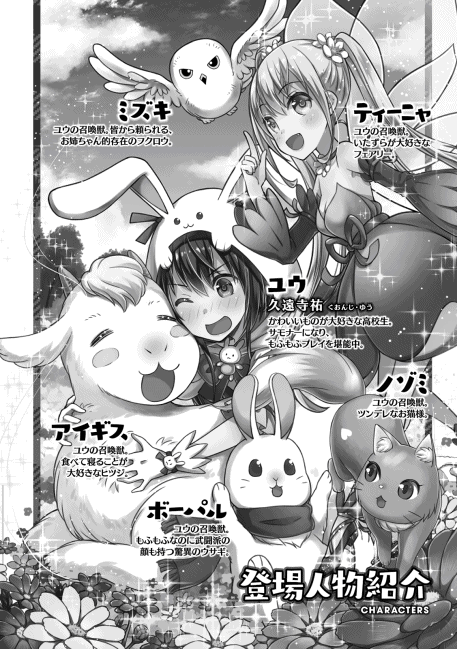
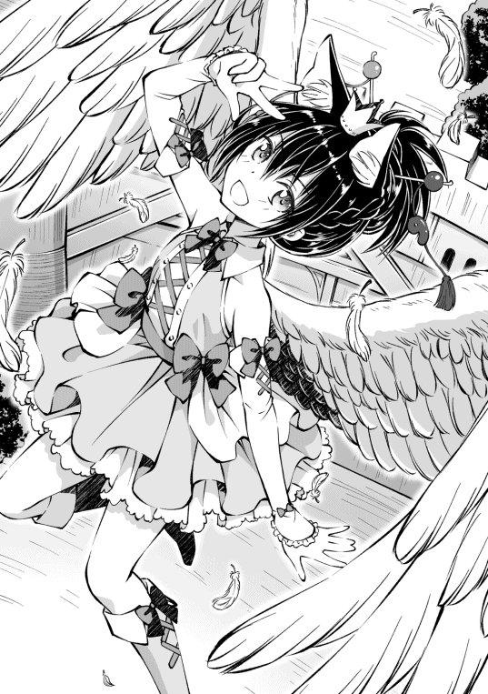

| VRMMOでサモナー始めました4【電子書籍限定書き下ろしSS付き】 (TOブックスラノベ) | |
| テトメト | |
| TOブックス (2018) | |
第６の召喚獣として待望の妖狐イナリの召喚に成功し、早速しっぽのもふもふ快楽に溺れまくるユウ。しかもドロップアイテムでレアなキツネさん装備までゲットして、もはやキュン死寸前。そんな中、全プレイヤー参加型イベント「モンスター大侵攻」がついに幕を開ける。立ちはだかるのは、闇を司る恐ろしき金髪幼女・魔人ちゃん！ クラスチェンジを重ねた最強ウサギ・ボーパルとの決着はいかに!? 新たな仲間＆衣装と共に、ユウは更なる強敵へと挑んでいく！
Illustration：秋咲りお
Design：BEE-PEE

「......壮観って、こう言うのを言うんだろうなぁ」
第二層のボスであるキツネたんを封印した俺達は、第三層へと足を踏み入れていた。
第三層は第二層よりも森が濃くなっているな。木の密度自体は第二層よりも低くなっているが、一本一本の木が太く巨大になっているので感じる圧力は圧倒的に上回っている。
地面には土が見えないほどに緑の苔 が広がっており、足跡一つない天然の絨毯 が、人の手が入っていない大自然の神秘を感じさせる。
「二層よりも月の光が届かないけど......明かりは必要無さそうだ」
天を覆う枝葉に光を遮 られた地表は薄暗い。だけど、光源には困らなそうだ。
薄暗い森の中でカンテラの代わりとなってくれているのは、森の妖精の様にふわふわと宙を漂っている光の胞子。ひいては、その胞子を飛ばしているキノコだ。
【アイテム：素材】ヒカリダケ レア度２
森の奥地にのみ生える、淡い光を放つキノコ
薬や、照明、錬金術の素材として使われる他、光属性を付与する際の触媒にも使われる
ヒカリダケは大樹の根っこ付近から大量に生えていて、ヒカリダケ自身が青白い光を放っているうえに、飛ばした胞子も淡い光を発して、辺りを照らしてくれている。
人工的な照明ではなく、ホタルの様な淡く儚 い明かりで照らされているが故に、森から感じる神秘性をより引き上げているな。
「きゅい〜！」
「〜〜〜！」
「メェ〜。もきゅもきゅ」
「......んにゃ」
「引き上げてる......はずなんだけどなぁ......」
「ホー......」
俺の肩にとまって、一緒に神秘的な光景に見惚 れていたフクロウのミズキが、慰めるように俺の横顔にもふもふの頭をこすりつけてくれた。
うふふ〜。ミズキはかわいいなぁ〜。俺の感動を分かってくれるのはミズキだけだよ〜。なにせ他のみんなときたら......。
「きゅいきゅいきゅいきゅい！」
「〜〜っ！ 〜〜〜っ!! 」
ヒカリダケの群れの中にフライングボディプレスを叩き込み、全身胞子塗れになって淡く発光しているのは、ウサギのボーパルと妖精のティーニャだ。
ボーパルが両手で抱えたキノコをフリフリして胞子を飛ばしまくって遊んでる。胞子を浴びたティーニャがめっちゃクシャミしてるな。それでも楽しそうだ。
二人は「花より遊び」派だもんね。知ってた。つまらなそうにされるよりも、いつも楽しく居てくれたほうが、こっちとしても嬉しいからいっか。
「もきゅも......゛メ!? ぺっ！ メェ!! 」
で、こっちは正統派な「花より団子」のヒツジのアイギス。どうやらヒカリダケでは団子の代わりにはならなかったようで、吐き出したヒカリダケを蹄 で踏んずけたままこっちを振り返って「これマズイよ!? 」って、訴えてきてる。
いや、知らんがな......そんな目を見開いてビックリせんでも、謎のピカピカ胞子を飛ばしてるキノコが美味しい訳ないじゃん。せめて洗って焼こうぜ？ お口ピカピカになってるよ？
「にゃぁん......」
「んひゃっ！」
マイペースにゃんこのノゾミ様は、胞子が身体に付くのが嫌なようで、俺が被っている頭巾の中にするりと入り込んできた。
首筋めっちゃもふもふするんですけど！ こしょばい！ あ、毛づくろい始めないで！ 体勢的に無理があるでしょ！ 今舐 めてるとこ、ノゾミのお腹じゃなくて俺の首だからね!?
「んっ、もぅ！ どうせ戦う時には隠れてられないんだから、諦めて出てきなさい！」
「にゃぁ......」
渋々ノゾミが外に出てきた頃には、遊びと味見に一段落ついたのであろうボーパル達が戻って来ていた。
三人共、手土産にヒカリダケを持ってるな。なんか色々使えるみたいだし、いくつか確保していこっか。そこらじゅうに生えてるから、必要になったらまた取りに来ればいいしね。
「って、キノコ狩りもいいけど、この第三層に来たのはＭＰ回復薬の材料になる月光草を取るためだったな。みんな〜。それっぽいの探すぞ〜。見つけたら鑑定するから持ってきてね〜」
「きゅい！」
「ホー！」
「〜〜〜！」
「メェ......」
「んにゃ......」
やる気ある組と無い組にハッキリ分かれたな〜。
アイギスやーい。ヒカリダケが不味くてやる気無くなってるのも分かるけど、月光草は美味しいかもしれないからやる気だそ？ ね？
「あ、月光草を探すのはいいけど、戦闘は避けて行くぞ〜。キツネたんとのボス戦でみんな疲れてるしな」
「きゅい！」
「ホー！」
俺の指示に、索敵担当のボーパルとミズキが元気良く返事をする。ボーパルが聴力での索敵。ミズキが上空からの目視での索敵担当だな。
んー。でも、ぶっとい木がいっぱい立ってるから目視での索敵は難しいかな？ 足元も苔で埋め尽くされていて、足音消されそうだし......んん？ このエリア索敵しにくすぎね？ 嗅覚での索敵要員はいないからなぁ。今度わんちゃんでも召喚しよっかな？
「で、先に見つけるのがこっちって言うね......」
「にゃーん......」
スリーピングマッシュルーム ＬＶ23
状態 眠り
ノゾミが呆れた顔で俺の事を見ている気がするけどしゃーないやん！ モンスターに出会うかどうかなんて運なんだからさ！ 俺のフラグ立てのせいじゃねぇ！
「まぁ、あっちは気づいてないみたいだし、他の所行くか」
スリーピングマッシュルームはでっかい白いキノコだな。俺の胸ぐらいまであるオバケサイズのきのこが五本生えてる。幸い全員寝てるみたいだから無視しようっと。てか、キノコって寝るもんなのかね？ キノコのモンスターは寝るみたいだけど。
「ホ、ホゥ......」
「ん？ どうしたのミズキ？」
来た道を戻ろうとしたら、ミズキに肩をツンツンされた。ん？ なに？ キノコの方を見ろって？
「うわぁ......」
それなりに密集して生えているキノコ達の真ん中。木々の隙間 から一筋の月光が差しているその地表を見た瞬間、自分の運を呪ったね。
【アイテム：素材】月光草 レア度３
森の奥地で月明かりの届く場所にのみ生える花
月明かりを浴びている間のみ花が咲き、月の満ち欠けによって花弁の形が変わる
月の魔力を花弁に蓄えており、薬や、錬金術の素材として使われる
「よりにもよってそこに生えんでもええやろ......」
「ホゥ......」
そりゃ変な方言も出てきますわー。だって、キノコ達の真ん中の月明かりに照らされた地面に、一輪だけ月光草が生えてんだもん！ なにこれ!? 見つけたくなかったモンスターと、見つけたかった月光草が同時に出てきたんだけど！ 運が良いのか悪いのか分かんない！
「ふぅ。落ち着いた。さてさて、問題はあれを取りに行くか行かないかだな」
他のメンバーも月光草の視認は済ませたな。戦闘はなるべく避けたいから、無視して他のを探すのももちろんありだ。月光草が月明かりの下にある事が分かっただけでも探すのはうんと楽になるし。
でも、さっさと終わらせて休みたい感もあるんだよなー。ボス戦で疲れて眠いんだよね。
「きゅい！ きゅいきゅい！」
「〜〜〜！」
「うん？ 二人がこっそり取ってくるって？」
「きゅい！」
「〜〜！」
スニーキングミッションか。それもありだな。キノコは全員寝てるし、こっそり行ってこっそり取ってこれたら最高やな。
「となると、どっちに行ってもらうかだが......」
「「......」」
おおぅ。ボーパルとティーニャのキラキラ目力が凄い。私を選べと無言で訴えてきてる。
んー。性格的な意味で信頼性が高いのはボーパルだな。ティーニャは時々......ってか、しょっちゅうおふざけ挟むしなぁ。
でも、バレにくそうなのはティーニャなんだよなぁ。空に浮かんでるから足音とかないし、隠蔽 のスキル持ちだから気配消せるし......。よし、決めた。
「ティーニャ行って来てくれるか？ そっと近づいて、月光草を取って帰ってきて？」
「〜〜〜♪」
選ばれたのが嬉しかったのであろうティーニャが、空中で宙返りをして喜びを表している。
大丈夫かなぁ、本当に大丈夫かなぁ......。
「いい？ そっとだよ？ ティーニャ一人で敵に囲まれたらすぐやられちゃうんだからね？慎重に行ってくるんだよ？」
「ホー、ホーホー？ ホー」
「〜〜〜！」
急に心配になった俺が、心配性なミズキと一緒にティーニャに言い含めると、珍しくキリッとした表情になったティーニャが敬礼を返して、抜き足差し足で月光草の方へと飛んでいった。いや、ティーニャは浮かんでるんだから、足運び関係なくね？ 気分の問題なのかな？
「......いざとなったら、ボーパルがダッシュで回収してきてね」
「きゅい！」
保険もかけたところで、ティーニャのスニーキングミッションの見守りをしよう。
声を出さないように両手でお口を押さえながら、ゆ〜っくりと飛ぶティーニャは、もうちょっとで月光草まで届きそうだ。
ふぅ〜。なんか見てるだけで緊張するな。子供の初めてのおつかいを見ている親ってこんな気持ちなのかね？ ティーニャ初めてのおつかいだな。
「よしよし。月光草までは着いたな。後は帰ってくるだけだ」
「ホ〜......」
眠っているキノコの上を素通りして、ティーニャが月光草までたどり着いた。って、こっちに手を振らなくていいから早く戻っておいで！ 俺とミズキの心臓に悪いから！
「あれ？ なんか様子おかしくね？」
「ホー......」
月光草までたどり着いたティーニャがなかなか帰ってこないんだけど。
月光草を掴 んではいるんだけど、一向に採取する気配がないというか......。
「ま、まさか抜けないのか!? 」
「ホー!? 」
そういえば、ティーニャの筋力って一じゃん！ ゲーム内最弱じゃん!! 抜けないのか!? 抜けないんだな！
こころなしか、こっちをチラチラ見ているティーニャは涙目になってる気もするし......。
「ちょっ!? 」
「ホー!? 」
「きゅい......」
ティーニャに一旦撤収の合図を送ろうとしたら、その前に月光草がスポーン！ と引っこ抜けて、空中で後ろでんぐり返しをするようにクルクルと回りながら吹き飛んだティーニャが、キノコの一つにぶつかった。
あわあわする俺とミズキに、クラウチングスタートの構えをするボーパルだったが、ティーニャが恐る恐る顔を上げてもキノコは動き出す様子はなく、ティーニャがほっと安堵の息を吐く様子が見えるだけだった。
まったく、見てるこっちも心臓が止まるかと思ったわ。でも、月光草は採取できたし、後は帰ってくるだけだな。よしよし。
「ホ、ホー。ホゥ......」
「どした？ 流石に後は帰ってくるだけで......」
ミズキに震える嘴 でツンツンされてティーニャの方に向き直ると、何故かティーニャが変顔をしていた。
......あ〜。ぶつかった時に零れた胞子を、息を吐いた時に吸い込んだから鼻がムズムズして、ちょっと待てい!!
「〜〜〜〜っ!! 」
「ひぃっ!? 」
「ホー!? 」
「きゅい！」
俺達の所まで響くティーニャのクシャミに、思わずビクッ！ と、肩を跳ねさせてしまった。
ミズキも俺と同じくガクブルしだして、ボーパルはクラウチングスタートの姿勢でお尻をアップ！ ダッシュのよーいオッケー！
「............起きて......ないのか......？」
「ホ、ホー？」
月光草を抱きしめたティーニャが、めっちゃキョロキョロしてるけど、キノコ達に動く気配無し。
さ、流石はスリーピングマッシュルーム。眠りめっちゃ深いな。助かったわ。
「よし。もう帰ってくるだけでしょ。流石に大丈夫でしょ。これ以上は心臓がもたないから、さっさと帰ってきてくれ」
「ホー......」
俺とミズキがハラハラ見守っている先で、やっとキノコの頭上に飛び出してきたティーニャが......そのままポテンとキノコの傘の上に墜落した。
なんでやぁ!! もうちょっとじゃん!! 帰ってくるだけじゃん！ これ以上心労増やさんといてぇー！
スリーピングマッシュルーム ＬＶ23
状態 眠り
召喚モンスター ティーニャ ＬＶ24
状態 眠り
「寝てるぅー！ 超寝てるぅー！」
「ホー!? 」
「きゅい？」
すまんすまん。急に叫んでビックリさせちゃった。
確かに、スリーピングマッシュルームなんて名前だったら、眠り攻撃ぐらい使いそうだよなぁ......てか、たぶんあの胞子でしょ。ティーニャめっちゃ吸い込んでたし。というか、上に乗られても寝続けるキノコすげーなー。今からちょっと強めにモーニングコールしにいくけど。
「はーい。ちゅーもーく。これから初めてのおつかいの途中でお昼寝しちゃったティーニャを回収にいきまーす。こっそり行ってもいいんだけど、心臓が疲れたから殲滅 しよっか」
「きゅい！」
「ホ〜......」
「メェー」
「んにゃー」
こっそりひっそりやるってのが、そもそも俺達の性に合わないんだよな。最初から殲滅すればよかったわ。これが終わればログアウトするんだし、最後の一頑張りしよー。
「あのキノコの胞子を吸ったら眠くなるっぽいから、みんな気をつけてな。ミズキの風魔法で胞子を飛ばしてくれると助かる。ボーパルは真っ先にティーニャの回収よろしくね」
「きゅい！」
「ホー！」
「アイギスとノゾミはいつもどおりで。ティーニャを救出するまでは待機でよろしく」
「メェー」
「んにゃ......」
アイギスとノゾミが、結局こうなるのね......って、顔してる気がするけど気にしなーい。
しゃーないじゃん。まさか初めてのおつかいがこんなに波乱万丈になるとは思わんかったんやって。殲滅するなら最初からティーニャの魔法を使いたかったわー。
「きゅいー!! 」
「ホー！」
待ってましたとばかりにボーパルがロケットスタートして空をぶっ飛んでいき、フォローのためにミズキが空を舞う。
ミズキの必殺技であるマジカルチェンジはクールタイムが丸一日かかるから、今は使えないんだよな〜。明日の午前中には使えるようになるから、スキルのレベル上げのためにも積極的に使っていきたいところだね。
「きゅぃぃぃぃ!! 」
「キノッ!? 」
ティーニャが寝ているキノコの傘へと飛び乗ったボーパルが、速度を殺さぬままにティーニャを掬い上げ、そのまま向かいで寝ていたキノコを蹴り飛ばした反動で俺達の元へ跳び帰って来た。
流石ボーパルやでぇ〜。最初からボーパルに任せておけばよかったような......。あ、でもボーパルが寝ちゃったら助けに行ける人がいなかったか。結果オーライって事にしておこう。
「キノ！ キノォォォ!! 」
「「「「キノォォ！」」」」
ボーパルに蹴り飛ばされたキノコがコミカルな雄たけびをあげて、頭からわっさー！ っと胞子を飛ばすも、既にボーパルはそこにはいない。あれ接近攻撃してたらマズかったな。カウンターで眠ってたところだったよ。
眠り攻撃こそ回避したものの、キノコの雄たけびで他のキノコも全員起きたようだ。声が聞こえるだけで顔はどこか分かんないけど。
見た目はただの巨大キノコだな。顔とか見えないけど、傘に隠れてる所にあるのかな？
「ホー！」
「メェ〜！」
「にゃぁ〜♪」
ボーパルの離脱を確認したミズキ達も動き出す。
ミズキが生み出した風の刃が胞子を吹き飛ばしながらキノコに命中し、前に出たアイギスが挑発でキノコ達のヘイトを奪う。ノゾミの歌による支援も追加。種類的には魔法攻撃力増加だな。いいチョイスだ。
「きゅい！」
「......〜〜〜」
お姫様だっこでえっちらおっちらとティーニャを運んで来てくれたボーパルからティーニャを受け取る。
心配させといて、幸せそうな顔して寝てやがんなぁ......。まぁ、寝ても月光草を手放さなかった事は褒 めてあげなきゃな。結果だけ見ればおつかいは成功かな？ ティーニャの手で俺に月光草を渡せたわけだしね。
「『プリンスキス』」
「......〜〜？」
俺の手の上でスヤスヤ眠っているティーニャに目覚ましの魔法をかけると、パッチリと目を覚ましたティーニャが大きく欠伸 をした。
キツネちゃん戦の後の回復で、回復魔法のレベルが上がって目覚ましの魔法を覚えられてよかったな。もし覚えてなかったら、ほっぺたペチペチして叩き起こすしかなかったもの。
「にしても『王子様のキス』で目が覚めるってロマンチックだな。眠らせる魔法は『魔女のリンゴ』とかかな？」
「〜〜？ 〜〜〜！」
身を起こして俺の手の平の上で女の子座りをしたティーニャが、独り言を呟 く俺を不思議そうに見上げるも、直ぐに気を持ち直して抱きしめていた月光草を俺へと差し出してきた。健気なええ子やでぇ......。
「ありがとう素敵なお姫様。寝起きで悪いけど、向こうのキノコ狩りを手伝って来てくれるか？」
「〜〜〜！」
かしこまりっ！ と、敬礼をしたティーニャが、ピューっと空に飛んでいった。
ちょっと目を離してたけどキノコ狩りは順調かなー？
「ホー！」
「きゅい！」
「キノォ!! 」
「メェェ......」
「「「「キノォ......」」」」
えーっと。なにこのカオス。
爆睡しているアイギスと、その周りに転がっているキノコはいいんだよ。問題はミズキとボーパルが戦っている方のキノコね。
先制攻撃しちゃったから、アイギスがヘイトを奪えなかったのは分かるんだが......なんでキノコが空を飛んでるん？ 最近のキノコって胞子を飛ばす勢いで空を飛べるの？
「キノォ！」
「きゅい！」
「ホー！」
雄たけびと同時にキノコの根本が爆発し、ボーパル目掛けて頭から突っ込んでいく。
アイツの攻撃方法ロケット頭突きなんだな......。そりゃ手足無いし、頭突きぐらいか攻撃手段無いか。それでも着弾地点から爆発するように胞子が飛び散るから厄介だな。胞子のせいでボーパルが近づけないみたいで困っちゃってる。ボーパルは状態異常に弱いからなぁ。どうにかして胞子を飛ばなく出来ればいいんだが......あ、そうだ。
「『ウォーターボール』！」
「キノォ!? 」
キノコロケットが着弾した隙に、頭から水をぶっかけてやった。うむうむ。想定通り、傘が濡れたら胞子が飛ばないみたいやな。実は俺って天才だったのかも。知ってたけど。
「ティーニャ。攻撃は水魔法で、攻撃回数優先でいくぞ」
「〜〜〜！」
このゲームだと頭から水を被っても少ししたら乾いちゃうから、定期的に水も滴るいいキノコにしてやらなきゃな。もっとも、接近できる様になったキノコなんてボーパルの敵じゃないけどな。飛べないキノコはただのキノコさ。いや、ロケット頭突きはまだ出来るのかもだけど。
「メェ......」
「「「「キノォ......」」」」
あっちはもう任せて大丈夫だろうから、こっちの爆睡組を対処するか。
アイギスが寝てるのは、キノコの胞子の影響で。キノコが寝てるのは、アイギスの誘眠体質の影響だろうな。
あのキノコ達って、眠り攻撃を使う癖に眠りに弱いのかね？ 最初会った時も寝てたしな。
アイギスの誘眠体質って、物理攻撃してきた相手を時々眠らせる効果があるんだが、アイギスが寝てるには効果が上がってる気がする......。気持ち良さそうに寝てるアイギスを見ると、こっちまで眠くなるんだよね......。ふぁ〜。
「超眠いけど、寝落ちする前に寝てるキノコを各個撃破するぞ〜。ミズキも手伝ってくれ〜」
「ホー！」
「きゅい〜」
「〜〜！」
あ、ボーパル達が相手してた方も倒したのね。それじゃあタイミング合わせて一斉攻撃で仕留めていこーなー。
◆◆◆
「うっし。戦闘終了。みんなお疲れ〜」
「きゅい！」
「ホー」
「にゃぁ」
「〜〜〜......」
「メェ......」
確実に不意打ちができて、胞子も飛ばせないキノコを倒すのは容易かったわ〜。むしろ、アイギスから伝わってくる眠気に耐える方が大変だった。本当に気持ちよさそうに寝てるんだもん。元々疲れてて眠かったせいもあって、既に寝落ち一歩手前だわ。ちなみにティーニャは既に陥落済みで、アイギスがぷくぅ〜っと膨らませている鼻ちょうちんの上で寝ている。なんで割れないんだろうな？ アイギスは頑丈な子だけど、鼻ちょうちんまで頑丈なの？
「で、問題はこのキノコなんだよなぁ......封印するか、解体するか。ん〜、悩みどころだ」
普通のプレイヤーなら、倒したモンスターは解体してドロップアイテムをゲットするんだが、俺はサモナーだ。倒したモンスターを封印するという選択肢もある。
同じモンスターを一定数封印すると、そのモンスターを封印完了した状態になり、封印完了モンスターが五種類増える毎に、封印完了したモンスターの中から一体を味方として召喚できるのがサモナーの大きな特徴だ。
「今の封印完了数は二十四で、次は二層ボスのキツネちゃんを封印して召喚するつもりだから......うん。こいつは解体しちゃうか。美味しいキノコを落とすかもだしね」
「......メェ？ メェェ？」
「〜〜!? 」
突然鼻ちょうちんがパチンと割れて目を覚ましたアイギスが、美味しいものどこ〜？ って感じでキョロキョロしだし、寝床が破裂したティーニャが空中でワタワタと手足をバタつかせている。いや、ティーニャは空飛べるでしょって言うか今も空中で静止できてるから落ち着いて。
「きゅい......」
「にゃむ......」
そっと近づいて鼻ちょうちんを割ってやろうと悪巧みしていたボーパルとノゾミが、ちょっと残念そうにしてる。
寝てる最中であろうと、食欲が睡眠欲を上回る辺りがアイギスらしいな。理由はどうあれ、全員起きてくれたなら丁度いい。
「はい、ちゅーもーく。このキノコを解体したら二層までダッシュで戻ってログアウトするぞ。それまでもうちょっとだけ起きててくれな」
「メェ〜？」
嫌そうなため息を吐きながらも、お願いしたことはキッチリやってくれるのがアイギスのいいところだよね！ 俺はちゃんと分かってるからね！
◆◆◆
おはよーございまーす。と言っても、ゲーム内は夜だけどな。
この世界って一日が二十時間なんだよね。リアル世界とは四時間ズレているから、毎日同じ時間にログインしても昼夜がズレてくるんだよ。面倒だね。
「きゅい〜！」
「ホー！」
「メェェ......」
「〜〜〜♪」
「んにゃ......」
「みんなもおはよ〜。今日もよろしくな」
昨日は、ログアウトするまで何事もなかったな。
スリーピングマッシュルームのドロップアイテムは、予想通りキノコだった。それも、リアルでよく見るキノコだ。エノキとかマツタケとかシメジとかマイタケとか。
「マッシュルームじゃないんかい！」とツッコミを入れたら負けなんだろうな。つまり、昨日の俺はマッシュルームに負けたわけだ。チクショウ。
「寝起きすぐで悪いが、お仕事の時間だ。ＨＰとＭＰが満タンな内にキツネちゃんを倒して封印するぞー！ おー！」
「きゅいー！」
「〜〜〜！」
「ホー」
「メェ......」
「んにゃ......」
朝からハイテンションな二人と、フラットな一人と、ローテンションな二人を連れて、キツネちゃんが居る神社へと向かう。
キツネちゃん封印完了と召喚に必要な数は残り九十九！ 素敵もふもふ尻尾なキツネちゃんを仲間に加えるためにがんばろー！
初回は死に掛けたけど、もうキツネちゃんの攻略方法が分かってるから、二度目以降は楽になるはずだ。まぁ、分かった上でどれだけ消耗するかの実験なわけだけどね。
◆◆◆
「きゅいぃぃぃ!! 」
「コ、ン......」
ボーパルに全力で横っ面を蹴り飛ばされたキツネちゃんが、ドサリと横向きに倒れて動かなくなった。
よしよし。みんなお疲れ〜。特に危ない場面も無く、前回よりもかなり短い時間で倒せたな！ ただ......。
「思ったより消耗がキツイなぁ......」
「〜〜〜......」
「メェ......」
みんな大なり小なり消耗してるが、特にキツイのが俺とティーニャとアイギスだな。
キツネちゃんは、ＨＰが半分を切るとこちらに幻覚を見せてくる。この幻覚は光を当てれば払ったり見破ったりできるのだが、肝心のカンテラが手元に残ってないため、光魔法を使えるティーニャが照明の代わりをして、ＭＰをガンガン消費してしまった。
しかもティーニャは貴重なダメージソースでもあるのに、攻撃が全然できないって言うね。ちょっと街まで行ってカンテラ大人買いしなきゃ。カートンで持ってきて〜。
ティーニャはそんな感じでカンテラを買ってくれば問題ないが、困ったのがアイギスなのよね。
アイギスは後衛を守る盾 として完璧な仕事をしてくれたわけだけど、如何せん魔法防御力が低すぎた。狐火一発で大ダメージを負う上に、すぐに火が付いて燃え上がっちゃう。
燃えてる間は継続的にダメージを受け続けるので、俺が水バシャで火を消して回復魔法で体力を回復させて......またすぐ大ダメージと着火の繰り返し。
狐火にも詠唱時間が必要なのか、連続でアイギスが燃やされることがないため、アイギスが倒れる事はないと思うが......アイギスのＨＰと俺のＭＰの消耗が激しい。月光草から作れる薬でＭＰを回復できるようになれば良いのかも知れないが......そもそものアイギスの魔法防御力を上げられれば一番なんだがなぁ。なんとかなんないかなぁ。
「キツネちゃん封印っと。さて、一旦街に帰ろうと思ってるんだけど、みんなもそれでいいか？」
「きゅい！」
「ホー！」
「〜〜〜！」
「メェー」
「んにゃ」
うん。モンスター語は分かんないけど、反対の子は居ないみたいだね。俺の言葉はみんな分かってくれるのに、みんなの言葉は理解できないってのも変な話ではあるが......声帯の問題かな？ 肺が無さげなゴーレムやキノコが雄叫びをあげる世界だから関係ない気もするけども。
「目標始まりの街！ 出発しんこー！」
「きゅいー！」
今日もいい天気だ。きっといい日になるね！
◆◆◆
「あのカンテラはもう持ってないの......」「そのカンテラはもう作ってないの......」
「オゥ......」
計画がいきなり頓挫 した件。誰だ『今日はいい日になる』とか言ったやつは！ 完全にフラグじゃないか！ 今すぐ俺に謝れ！ ごめんなさい！
「カンテラなら火のやつがあるよ？」「明るさなら負けないよ？」
「火属性だとあんまり意味無いんだよなぁ......」
さっきキツネちゃんと戦った時に、俺の火魔法でキツネちゃんの霧を払えないか試してみたんだが、直接火に当たっている所の霧は払えたものの、光魔法ほど劇的な変化は無かった。まぁ、キツネちゃんも狐火を撃ちまくるしな。火で払えたら自滅しちゃうか。
「はいはい。いつまでもお店の入り口で立ち話してないで、こっちにいらっしゃい。丁度アップルパイが焼きあがったわよ」
「「わーい！ リアさんのアップルパイだぁ!! 」」
「メェー！」
街中で偶然出会えたミヤヒナを追っかけて、追い付いたリアさんのお店の前で話し込んでいると、お店の奥からいい匂いと共に現れたリアさんにお呼ばれされた。
リアさんのお店に寄る予定は無かったんだけど、ミヤヒナの目的地はリアさんのお店みたいだし、アップルパイと聞いたアイギスがミヤヒナと一緒に店の奥へと駆け込んでしまったから行くしかないな。リアさんのアップルパイ美味しそうだしね！
「お邪魔しまーす」
「にゃーん」
「「いらっしゃい！ アップルパイ美味しいよ！」」
「メェ〜」
「こーら。食べながら話すのは行儀悪いわよ？ 食べるか話すかどっちかになさい」
「「「もぐもぐもぐ」」」
まるで家の主であるかのように、俺達の来店を出迎えたミヤヒナとアイギスが、リアさんに注意されて迷わずアップルパイの攻略に専念しだした。
よく食べるのは良いことだけど、俺達の分も残ってるよね？ ね？
「ふふ。材料はいくらでもあるから、足りなくなったらまた焼いてあげるわ」
「それは良かった。なんか、大食い対決みたいになってるもんなぁ......」
「「「もぐもぐもぐもぐ！」」」
アイギスは純粋に美味しくて食べまくってるんだと思うけど、凄い勢いでアップルパイを吸い込んでいくアイギスを見たミヤヒナが、張り合って無理矢理アップルパイを口に放り込んでる気がする。二人ともほっぺたがリスみたいにパンパンだもの。吸引力の変わらないただひとつのアイギスに、体の小さなミヤヒナじゃ勝てなさそうなのにね。
ちなみにアイギスは、お腹一杯になるまであのペースでガツガツ食べて、お腹一杯になるとピタリと食べるのを止める。そんなところまで掃除機っぽいよね。
「あ、そうだ。リアさんはカンテラの在庫ってあります？ 火じゃなくて光属性のやつ」
「光属性のカンテラ？ 悪いけど在庫は無いわね......元々数が少ないものだったから......」
そっかー。リアさんのところにも無いか。まぁ、本当に欲しいのはミヤヒナ特注のカンテラ型閃光弾だしな。もう作ってないって話だったけど、理由までは聞きそびれたままだし。リアさんは知ってるかな？
「簡単よ。材料不足ね。あのカンテラの作成には光属性の鉱石が必要なの。つまりは聖なる水晶ね。聖なる水晶回収のクエストが出るまでは時々市場に出回ってたのだけど、どうしても聖なる水晶を見つけられなかった人が買ったり、光属性の装備品を作るのに使ったり、いつか使うかもと溜め込む人が増えたせいで品薄なのよ......」
「使い道の少なかったアイテムに急に使い道が出来たせいで、カンテラに回す分がなくなっちゃった訳か......」
「需要に供給が追い付いてないのよ......一過性の事だとは思うけどね」
カンテラは火でも代用できるけど、クエストの納品や、光属性の装備を作る材料は他の物じゃ代用できないしな。カンテラが後回しにされるのもしょうがない......ん？ 光属性の代用品？ あ、
「そう言えばこんなのゲットしたんだけど......」
「......何故かしら、嫌な予感とデジャブが同時にやって来たわ」
勘とか嫌な予感って、今ままでの経験から来るものらしいからね。デジャブと似たようなもんだよね。
「ヒカリダケ......？ ふーん？ 鉱石じゃないから鍛治の範囲外のような気もするけど......」
「ミヤにも見せてー！」「ヒナにも貸してー！」
いつの間にか俺達に近づいていたミヤヒナが、リアさんの左右で「見せてー！」「貸してー！」と、ぴょんぴょんしてる。
アップルパイの方は......あぁ。お腹一杯になったアイギスが離れたのね。今は、ボーパル達がのんびりお茶会をしてる。なにあれかわいいんだけど！ 混ざりたい！
「はい。ユウ君のだから乱暴に扱っちゃダメよ？」
「「はーい！」」
リアさんが困った顔で俺の方を見たから頷くと、リアさんがミヤヒナにヒカリダケを貸してあげた。
ストレージの中に何十個も入ってるからね〜。簡単に取れるし、欲しいならあげようか？
「へー？」「ほー？」
「やっぱり代わりにはならなそうかな......」
常に元気百パーセントなあのミヤヒナが、難しそうな顔で首を捻ってる。そりゃ無理か。水晶とキノコじゃ似てる所を探す方が難しいもんな。シルフと行った地底湖にもう一度行ければ、水晶の採取は出来ると思うが......そのためだけに山登りするのは面倒くさいな。
「......聖なる水晶を装備に使うのは苦肉の策なんだよ」「......特に武器には向かないんだよ」
「ん？ どうしたの急に？」
要らないならキノコを返してもらおうかと思ったんだけど、ミヤヒナが真剣な顔で俺を見つめてくるのを見て、手を引っ込めた。
職人の目って言えばいいのかな？ 普段の軽い感じからは想像できない鋭い目をしてる気がする。
「衝撃に弱いし、耐久力は低いし」「水晶を使う装備のレシピ少ないし」
「それでも武器に属性が付くのは強いんだよ〜」「洞窟は光属性が弱点のモンスターが多いからね〜」
「すぐに壊れるけどね！」「すぐに材料がなくなるけどね！」
確かに、水晶の剣ってすぐに壊れそうだなぁ。フィアちゃんが作ってくれたノゾミのペンダントだって、壊れやすいからビンに入れられてるもん。ビンに入ってても壊れやすいみたいだけど。
「でもこのキノコは違うよ！」「一味も二味も違うよ！」
「メェ......？」
ババーン！ とヒカリダケを掲げて宣言したミヤヒナを、アイギスが心配そうな顔で見つめてる。
心配しなくても、ミヤヒナはヒカリダケを食べようとしてるわけじゃないと思うよ？ てか、謎の発光をしているキノコをいきなり齧 るのはアイギスぐらいだと思うよ。
「光属性を付与できるの！」「魔鉄の剣にも後付けで！」
「つまり......？」
「ちょーつおい」「ちょーしゅごい」
なるほど。言語が退化するぐらい凄く強いのか。
「光属性のカンテラが作れるんならなんでもいいんだけどね」
「むー。できるけど」「ぶー。ノリわるーい」
左右からステレオで「むー！」「ぶー！」って文句を言われちゃった。
ごめんて〜。ヒカリダケをあるだけ全部売るから許して？ 追加必要なら取ってくるし。大量に生えてたからな。
「キノコと言えば食用のもドロップしたんだった。リアさん買い取って〜」
「あら、いいわよ〜......マツタケ!? ちょっ、ユウ君これどこで手に入れたの!? 」
「わーい！ ヒカリダケがいっぱいだ〜！」「わーい！ 属性付与の実験だ〜！」
「きゅい......」
「ギャー！ ボーパルのもふもふがベタベタになってるぅ!! 」
「〜〜〜♪」
「ホー!! 」
ボーパルをタオルで拭き拭きしてる間に、同じくベタベタになってるティーニャとミズキの空中追いかけっこが始まり、気づいたらミヤヒナがいなかった。
ミヤヒナって何か用事があってリアさんのお店に来たんじゃなかったっけ？ まぁいっか。カンテラは作ってもらえるみたいだしね！
あと、リアさん。顔が近いです。怖いです。またキノコをドロップしたら持ってくるから離して？ ね？
◆◆◆
「フィアちゃん起きてるー？」
「きゅーいー？」
マツタケを手に入れたら必ず売ると約束して、なんとかリアさんのお店から脱出できた。
いつになくリアさんの目がキラキラしてたんだけども、マツタケが好きなのかな？ 俺はあんまり好きじゃないんだよねぇ。貧乏舌だからか、エリンギの方が美味しく思えちゃう。
「いらっしゃいデース！」
「エルおはよー。いや、こんばんはか。アトリエはまだ営業してる〜？」
アトリエの扉をノックしてしばらく待っていると、エルが出迎えてくれた。
リアルでは朝だけどゲーム内は夜だから、エルへの挨拶 は悩むなぁ。エルはＮＰＣだから、このゲームの中で生活してるもんな。やっぱりゲーム内時間基準の挨拶のほうがいいか。
「もちろんやってるデスよ！ エルかフィアがアトリエにいる間は営業時間デス！」
「......自営業の闇を見た気分だわ......」
アトリエってエル達の家じゃん！ ほぼ年中無休じゃねーか。店員二人なのに。ちゃんと営業時間決めて休んだ方がいいんじゃない？
「アトリエに直接やってくるお客さんはユウぐらいだから大丈夫デスよ？ エル達のお仕事は、期限までに調合品を納品することデス！ 期限内にさえ納品できれば余り時間はずっとお休みデス！」
「......言われてみればそうだな？」
アトリエって工房だもんね。直接工房にお買い物に来るお客さんはいないわな。俺だって、普通の鉄製品を買いたいなら、ミヤヒナのところじゃなくてリアさんの所に行くし。
「それでも、エルやフィアちゃんに会いたいからアトリエに来るけどね！」
「エルもユウ達に会いたいデス！ これからもいっぱい遊びに来るデス！」
「きゅいー！」
「〜〜〜！」
「およよ？ 一緒に遊ぶデスか？ なら工房に行くデス！」
遊ぼう遊ぼう！ と、うちの元気っ子二人組がエルにじゃれつきながら、アトリエに入っていった。
エルの格好はヒラヒラがいっぱいだからなぁ。ちょっと歩く度にフリフリとスカートや髪が揺れて、その度にボーパルとティーニャが飛びついてる。
ティーニャはともかく、ボーパルがスカートにぶら下がると俺なら転びかけそうになるんだが......エルはまったく動じてないな？ 錬金術師って、意外と筋力のパラメーターが高いよね。
「ノゾミも行ってきたら？ もう一匹ぐらいならぶら下がれそうだよ？」
「......にゃん」
ぴょんぴょんしているボーパルとティーニャを見ながら、うずうずと尻尾をくねらせているノゾミに声をかけたんだが、ツーンとそっぽを向かれちゃった。まったく、素直じゃないんだから〜。
「......いらっしゃいませ」
「あ、フィアちゃんも起きてたんだ。お邪魔しまーす」
「ホー！」
アトリエの中に入ると、いつもの椅子に座ってフィアちゃんが本を読んでいた。
フィアちゃんいつも本読んでるよな〜。目が疲れたりしないのかね？ 本の読みすぎで視力落ちそう。
「そしてメガネフィアちゃんが誕生する！」
「絶対かわいいデス!! 」
「......なんでそうなるんですか......」
ふぅ......と、ため息を吐いたフィアちゃんが本に栞 を挟んでこちらへと体を向けてくれた。
フィアちゃんは落ち着いた雰囲気があるから、絶対メガネが似合うと思うんだけどな〜。
「......それ以前にフィアは目が良いので、メガネは必要ありません」
「......視力が落ちる薬を開発すべきデスかね......？」
「大丈夫。目がいいからって油断してたら、いきなり落ちるのが視力だから」
読書とか、ゲームとか気を付けないとダメだよね。ゲームは一日一時間！ ただしＶＲは除く！ 視力関係無いしセーフセーフ。
「てなわけで、フィアちゃんの読書は休憩。代わりにノゾミをあげよう！」
「にゃぁ〜」
「......なにがどういうわけですか......」
フィアちゃんの膝 から本を下ろして、代わりにノゾミを乗せてやった。
フィアちゃんのお膝にちょこんと座っているノゾミは、撫 でたければ撫でればいいわ。って、感じのツンとした態度をとってるつもりみたいだけど、チラチラとフィアちゃんの顔を盗み見てるせいで、かまってほしいのが丸分かりである。
さっきエルにかまってもらい損ねたもんね〜。いっぱい遊んでもらうんやでぇ〜。
「......ノゾミちゃんもふもふです」
「んにゃ〜」
「さて、フィアちゃんの相手はノゾミに任せるとして。エル〜、月光草取って来たから確認してくれ〜」
「了解デース！」
「〜〜〜！」
ビシッと敬礼をして返事をしたエルをまねっこして、ふにゃっとティーニャが敬礼している。
ティーニャはエルのまねっこが好きだよな〜。波長が合うのかもね。後は単純にリアクションが大きいからかな。
「ほぅほぅ。なるほどなるほどデス」
「〜〜〜！ 〜〜〜♪」
俺が渡した月光草を検分しているエルの周りを、ティーニャが踊りながら飛び回ってる。
いや、踊ってると言うか一人芝居してる感じに見えるな？ もしかしたら自分の大活躍をエルに自慢してるのかも。最終的に寝ちゃって、みんなに助けてもらったことはナイショにしておいたほうがいいのかな？
「デース！ この品質なら、十分マジックキャンディの材料として使えるデス！」
「マジックキャンディ？」
「〜〜〜？」
「ユウご所望の、ＭＰ回復薬の事デース！」
へー。ＭＰ回復薬はキャンディなのか。ヒールクリームみたいに塗り薬かと思ってたわ。
......待てよ？ 飴玉 タイプの薬と言えば毒消し丸もそうなわけだが......。
あの薬は効き目こそ確かなんだが、味が破滅的で吐き気を催すほどの苦味で構成されている。
そのマジックキャンディとやらも、毒消し丸と同じで絶望的な味なんじゃなかろうか。
「心配ご無用デース。マジックキャンディはすっごく甘くて美味しいデスよ！ ......たぶん」
「最後の呟きが気になって仕方ないんだが......本当に大丈夫だよな？ 実は激辛だったりしないよな？」
「辛いのは火傷を治す薬デスね〜。マジックキャンディが甘いのは本当デスから、安心していいデスよ？ ......たぶん」
最後の最後で不確定になるのが心配で仕方ないが、だからと言ってマジックキャンディを作るのを止めるわけにもいかないので信じるしかないな。
そんな事よりも激辛キャンディが存在している事実の方がヤバイ。火傷状態にしてくる敵とはまだ出会ってないから、しばらくは食べる必要がないとは思うが......。出会っても絶対に火傷にならないように気をつけよう。うん。
「超酸っぱい麻痺消しドロップもあるデスよ？」
「状態異常回復薬って、味覚のどれかに特化しているのが必須なの？」
残りはなんだろ？ しょっぱいのかな？ どのみち食べたくないよ？
「......今度、薬以外で状態異常を治すアイテムを考えておくデス......」
「よろしくね。もしくは味を改善するのでもいんだよ？」
エルの作る薬って効果は確実なんだけど、それ以外のところが何処か抜けてるんだよなぁ。
エルの薬が街で流行ってないのって、確実にそのせいだと思うの。
まぁ、アトリエの経営にまで口を出すつもりはないからフィアちゃんに頑張ってもらうとして。追加の月光草とキノコ達を採取するためにも、今日も第三層に突っ込むかな。
「にゃぁん」
「......にゃぁ」
「「!? 」」
二人とも未来の計画を頭の中で確認していたからか、俺とエルの間に短い沈黙が落ちたその隙間に、かわいいニャンコの鳴き声が滑り込んできた。
片方は分かってる。我らがアイドルノゾミ様のプリチーボイスだ。問題はもう片方の控えめなネコちゃんの声の方で......。
「ね、ねぇフィアちゃん？ 今......」
「〜〜〜っ!? 」
ノゾミを向かい合う形に座りなおさせて、小さく頬を緩めながらノゾミと見つめ合っていたフィアちゃんに声をかけると、ポカンとした顔でフィアちゃんを見つめる俺とエルに気づいたようで、一気に顔が赤くなった。
......ほほぅ？
「メガネよりも猫耳を用意した方が良かったかな？」
「猫耳なら、フィアに付けてもらおうと思って作ってあるデス！」
「......っ、もう！ 二人とも意地悪です。こっちを見ないでください」
「にゃぁ〜？」
両脇に手を入れてノゾミを持ちあげたフィアちゃんが、ノゾミの後ろに顔を隠そうとしているが、困った顔をしたノゾミがくねくねと体をよじる度に、真っ赤になったフィアちゃんの顔がチラチラ見えてる。
「別に隠さなくてもいいデスのにね〜？」
「フィアちゃんがかわいいのは、もう知ってるもんね〜？」
「......っ！ も、もう知りません」
「にゃぁ〜......」
ありゃま。フィアちゃんに逃げられちゃった。恥ずかしがり屋なフィアちゃんもかわいいなぁ〜。
逃げる時に、そっとノゾミを降ろしてからにするのが優しいフィアちゃんらしいね。
「う〜ん。ちょっとからかい過ぎたかな？」
「フィアはかわいいデスからね。仕方ないデス！」
うんうん。と、大きく頷くエルの気持ちも非常に良く分かるけど、流石にかわいそうに思えてくるから、エルにはフィアちゃんを慰めてきてもらおうかな。......逆効果な気しかしないけど。姉妹だし、慰めるのには慣れてる......と、信じたいね。
「フィアちゃんの事はエルに任せるとして、俺達は出発するぞ〜。みんな集合！」
「きゅい〜！」
「ホー」
「〜〜〜！」
「メェ......」
「にゃぁむ」
アトリアの隅っこでお昼寝していたアイギス達も、俺の号令でノロノロと集合してきた。
街でやりたい事はこれで全部かな？ 今のところの目的を整理すると......。
一、キツネちゃん封印（残り九十八匹）
二、月光草の入手（マジックキャンディ作成）
三、ヒカリダケの入手（閃光弾作成）
この三つだね。タイムリミットは防衛イベントが開始されるまで。キツネちゃんを召喚した後にレベル上げもしたいから、もうちょっと短くなる感じかな。
最優先で達成したいのはキツネちゃんの封印だけど、効率的にキツネちゃん狩りをするためにはマジックキャンディと閃光弾が必要......。む〜。今はマジックキャンディも閃光弾も持ってないし、先に第三層へ行って素材をかき集めてくるか。で、戦闘は極力避けてＭＰが回復してきたらキツネちゃんを狩ろう。
「月光草を求めて第三層にゴー！ エルまたねー！」
「きゅいー！」
「またのお越しをお待ちしてるデスよー！」
ブンブンと手を振るエルに別れを告げて、アトリエを出発する。時間の制限が厳しそうだし、ガンガン行こうか！
......ん？ 今アトリエの窓からチラッと......。ふふっ。次来た時はもっといっぱいお話しようね！ またね！
◆◆◆
【モンスターが】金髪ロリ美幼女悪魔っ子魔人ちゃんを捕まえろ!! 【攻めて来るぞ!! 】
１：名無しのゲーマー
ここは、きたるモンスターの大侵攻イベントに向けていかにして魔人ちゃんを捕獲、もといお友達になるかを語りあうスレです。ついでに侵攻してくるモンスター対策も雑談やクラスチェンジについては別スレで
次スレは＞＞９５０を踏んだ方が宣言して立てること
２：名無しのゲーマー
スレ立て乙です。スレタイ長いわ！
３：名無しのゲーマー
侵攻イベント関連を探していたのに何故か紳士の社交場に紛れ込んでしまったでゴザル
４：名無しのゲーマー
スレ立て乙〜。ロリと幼女って意味かぶってね？
５：名無しのゲーマー
バカやろう!! ロリな上に幼女なんだぞ!?
一粒で二度おいしいんだぞ!?
６：名無しのゲーマー
そんなアーモンドみたいに言われても......
７：名無しのゲーマー
魔人ちゃんを誘か......ではなくお友達になるために。まずは所持品の確認だ
８：名無しのゲーマー
剣ヨーシ！
９：名無しのゲーマー
飴ちゃんヨーシ！
10 ：名無しのゲーマー
投網 ヨーシ！
11 ：名無しのゲーマー
睡眠薬ヨーシ！
12 ：名無しのゲーマー
鞭 ヨーシ！
13 ：名無しのゲーマー
蝋燭 ヨーシ！
14 ：名無しのゲーマー
ボンデージヨーシ！
15 ：名無しのゲーマー
ちょっと待てい!! 色々待てい!!
16 ：名無しのゲーマー
そうだそうだ！ ロリっ子にボンデージだなんて......ありかも。むしろありだな！
17 ：名無しのゲーマー
お前も黙ってろ!!
ええい、このスレには変態しか居ないのか!!
18 ：名無しのゲーマー
自己紹介乙
19 ：名無しのゲーマー
そんなに自虐 するなよ
20 ：名無しのゲーマー
自虐のゲーマー
21 ：名無しのゲーマー
大悪魔との契約は無理そうだな
22 ：名無しのゲーマー
精神攻撃は基本
23 ：名無しのゲーマー
しゃーなしだ。17 の遺言でもあるし、ちょっとマジメな話でもするか
24 ：名無しのゲーマー
そうだな。17 の最後の望みでもあるしな......
25 ：名無しのゲーマー
17 ......惜しい人を亡くしたな......
26 ：名無しのゲーマー
勝手に殺さないで欲しいんだが!?
さっきのやり取りだけで死ぬとか、どれだけメンタル弱いと思われてるんだ!?
27 ：名無しのゲーマー
うるせぇ!! お前に17 の何が分かる!! 人が一人死んでるんだぞ!!
28 ：名無しのゲーマー
誰よりも分かってるわ！ むしろお前らが俺の何を知っているんだよ！
29 ：名無しのゲーマー
自分の事って、自分じゃ意外と分からないものなんだぜ......？
30 ：名無しのゲーマー
29 ......って、いいこと風に纏 めても騙 されねえぞ!?
31 ：名無しのゲーマー
雑談はそのぐらいにしてマジメな話に移ろうぜ？ 実際今度の大侵攻イベントで分かっている事ってどんなもんよ
32 ：名無しのゲーマー
ぶっちゃけ確定情報ってそんなに多くないんだよね。金髪ロリ美幼女悪魔っ子魔人ちゃんがモンスターを率いて始まりの街に攻めてくるって事と......あとなにかあったっけ？
33 ：名無しのゲーマー
俺の生死が会話の潤滑材扱いされてる件......
34 ：名無しのゲーマー
全プレイヤー強制参加とイベントスタート時の始まりの街に強制転移及び街の外への移動制限が抜けてるぞ
35 ：名無しのゲーマー
確定情報はそんなもんか
これだけでもある程度はイベント内容を予想できるな
36 ：名無しのゲーマー
せやな。おそらくは篭城戦 だろう
始まりの街は東西南北にデカイ門があってそれ以外は城壁で囲まれている訳だしプレイヤーも四つに分かれてモンスターを迎え撃つとか
37 ：名無しのゲーマー
どこか一つでも抜かれたら負け
一定時間耐え切れば勝ち
とかそういうやつか？ 結構キツイな......
38 ：名無しのゲーマー
街の外への移動制限は、門を閉じるからってことか
ありえそうだなというか篭城戦以外なさそうじゃね？
39 ：名無しのゲーマー
篭城戦が確定だとしても勝利条件は分からないよね？ 一定時間耐えればいいのか攻めてくるモンスターを一定数もしくは全部倒す必要があるのか敵の大将である金髪ロリ美幼女悪魔っ子魔人ちゃんを倒す必要があるのか一切不明だよな。ついでにモンスターが無限湧きなのかどうかも分からんし
40 ：名無しのゲーマー
勝利条件が未定......はっ！ つまり金髪ロリ美幼女悪魔っ子魔人ちゃんを捕獲してニャンニャンするのが勝利条件な可能性も!?
41 ：名無しのゲーマー
ガタッ
42 ：名無しのゲーマー
ガタッ
43 ：名無しのゲーマー
ガタッ！
44 ：名無しのゲーマー
落ち着けお前ら。よく考えてみろ
某狩猟ゲームでも、討伐クエストは討伐もしくは捕獲で達成なんだ。しかも捕獲の方が報酬 が多い！
つまり我々が金髪ロリ美幼女悪魔っ子魔人ちゃんを捕獲するのは当然の事なのだ!!
45 ：名無しのゲーマー
うおおおおおお!!
46 ：名無しのゲーマー
さすが44 ！ 俺達に思いつかない事を平然と思いつくッ！ そこにシビれる！ あこがれるゥ！
47 ：名無しのゲーマー
待て。よくよく考えてみろ。某狩猟ゲームに例えるなら......討伐したモンスターからは剥 ぎ取りが出来るんだぜ......？
48 ：名無しのゲーマー
ガタッ!?
49 ：名無しのゲーマー
ガタッ!?
50 ：名無しのゲーマー
ガシャン!?
51 ：名無しのゲーマー
落ち着けお前ら。誰かコップ割ってんぞ
52 ：名無しのゲーマー
そ、それは......つまり金髪ロリ美幼女悪魔っ子魔人ちゃんの身に着けているアレやコレを剥ぎ取ることが出来るとグボァッ!?
53 ：名無しのゲーマー
おい、イベントが始まる前にまた一人死人が出たんだが......
54 ：名無しのゲーマー
実際剥ぎ取り関係ってどうなるのかね？ 金髪ロリ美幼女悪魔っ子魔人ちゃんって、モンスター扱いで剥ぎ取りできるのかな？
55 ：名無しのゲーマー
たぶんＮＰＣ扱いだと思うから、剥ぎ取りは出来ないんじゃね？ イベント報酬的なのでアイテムがもらえると思う
56 ：名無しのゲーマー
52 の死因は金髪ロリ美幼女悪魔っ子魔人ちゃん性のキュン死だな
蘇生に成功しても金髪ロリ美幼女悪魔っ子魔人ちゃんの下僕になるという恐ろしい殺害方法で、既にあちこちのスレで同じ症状が確認されているらしい
57 ：名無しのゲーマー
この場に居なくてもプレイヤーを殺し下僕を増やしていくだなんて......金髪ロリ美幼女悪魔っ子魔人ちゃん恐ろしい子！
58 ：名無しのゲーマー
まぁ下僕になっても金髪ロリ美幼女悪魔っ子魔人ちゃんを襲うのは変わらないんだけどな。むしろ積極的に飛びかかっていくんだけどな!!
59 ：名無しのゲーマー
間違いではない。間違いではないんだが犯罪臭が......
60 ：名無しのゲーマー
今更だけど金髪ロリ美幼女悪魔っ子魔人ちゃんって長くない？
言いにくいし縮めたら？
61 ：名無しのゲーマー
分かった！
まぁ下僕になっても金髪ロリ美幼女を襲うのは変わらないんだけどな。むしろ積極的に飛びかかっていくんだけどな!!
62 ：名無しのゲーマー
犯罪臭が完全に犯罪になったな！
63 ：名無しのゲーマー
どう見ても犯罪です
ありがとうございました
64 ：名無しのゲーマー
通報しますた
65 ：名無しのゲーマー
まだ１００にも届いてないのに既に二人死んで一人下僕になって一人逮捕されてるんだが何だこのスレ......
66 ：名無しのゲーマー
安心しろ。いつもの事だから
67 ：名無しのゲーマー
何一つ安心できる要素が見当たらないんですがそれは......
68 ：名無しのゲーマー
そもそも魔人ちゃん......というか、ＮＰＣ相手にセクハラって出来るもんなのか？ ＦＷＯって全年齢対象のゲームだったよな？
69 ：名無しのゲーマー
いや、出来んかった。兵士の詰め所的なところに強制転移させられて、小一時間ぐらい説教された上に罰金まで取られた......二度目はないそうだ。
70 ：名無しのゲーマー
なんでそんなに詳しいんですかねぇ？
71 ：名無しのゲーマー
言わせんなよ。照れるだろ？
72 ：名無しのゲーマー
照れなくていいから恥じろよ！
73 ：名無しのゲーマー
ええい、こんなスレにいられるか！ 俺は一人で他のスレにいく!!
74 ：名無しのゲーマー
これが73 の最後の言葉になろうとはこのときは誰も予想していなかったのです......
75 ：名無しのゲーマー
死者三名 下僕一名 犯罪者カウント不可
76 ：名無しのゲーマー
まぁ実際イベント関連のスレは全部似たようなものだしなぁ......
魔人ちゃん含め敵の戦力が全くの未知数だから語ることも無いしなぁ。
77 ：名無しのゲーマー
魔人ちゃんはスキルどころかレベルも不明
攻めてくるモンスターの数も種類も不明。今までに戦ったことのあるモンスターなら対処方法も分かるんだが、イベント限定モンスターが攻めてくるとしたらどうしようもないんだよね
回復薬を買い集めるのとレベルを上げるぐらいかなぁ
78 ：名無しのゲーマー
闘技大会で実力を示したウサギ様が体術特化なのも痛いよな......体術系のスキルって範囲攻撃が少ないからな。闘技大会では近接戦闘職がメインだったけど、今回のイベントじゃ魔法職と盾職がメインになりそうだね
79 ：名無しのゲーマー
73 が去った途端にマジメな話が始まった件ｗｗ
80 ：名無しのゲーマー
73 は犠牲になったのだ。犠牲の犠牲にな......
《プレイヤーがレベルアップしました。任意のステータスを上昇してください》
《召喚モンスター：ボーパルがレベルアップしました。任意のステータスを上昇してください》
《召喚モンスター：ミズキがレベルアップしました。任意のステータスを上昇してください》
《召喚モンスター：アイギスがレベルアップしました。任意のステータスを上昇してください》
《召喚モンスター：ティーニャがレベルアップしました。任意のステータスを上昇してください》
《召喚モンスター：ノゾミがレベルアップしました。任意のステータスを上昇してください》
《プレイヤーがクラスチェンジ条件を満たしました。クラスチェンジ先を選択してください》
《クラスチェンジ候補：グランドサモナー
クロスサモナー》
《召喚モンスター：ボーパルがクラスチェンジ条件を満たしました。クラスチェンジ先を選択してください》
《クラスチェンジ候補：マスターラビット
月光兎》
《召喚モンスター：ミズキがクラスチェンジ条件を満たしました。クラスチェンジ先を選択してください》
《クラスチェンジ候補：マテリアルオウル
マジックフェザー》
《召喚モンスター：アイギスがクラスチェンジ条件を満たしました。クラスチェンジ先を選択してください》
《クラスチェンジ候補：催眠シープ
結界羊》
《召喚モンスター：ティーニャがクラスチェンジ条件を満たしました。クラスチェンジ先を選択してください》
《クラスチェンジ候補：アスカ
フェアリーエンジェル》
《召喚モンスター：ノゾミがクラスチェンジ条件を満たしました。クラスチェンジ先を選択してください》
《クラスチェンジ候補：アイドルキャット
アリアキャット》
《妖狐の封印率が百パーセントになりました》
《妖狐が封印完了しました》
《スキル：召喚魔法がレベルアップしました》
《封印完了モンスターが二十五体になりました》
《召喚可能モンスター枠が一つ増えました》
「終わった......のか？」
「きゅい？」
もう一度手元の本を確認する。キツネちゃんの封印率が百パーセント。召喚枠が一つ増えて六枠。
「......間違いない。キツネちゃんの封印が完了している」
「ホー？」
「......〜〜っ！ よっしゃぁぁぁ!! やったぜミズキぃ!! 」
「ホー!? 」
下を向いてプルプルしている俺を心配したのか、近くに寄ってきていたミズキを胸に抱き締めてクルクル回って踊る。
いやぁ〜。長かった。苦節一週間、ひたすらにキツネちゃんを狩り続けたわ。既にパターンも読みきっちゃって、最後の十匹は連続狩猟したもの。
「こんなに早く封印できたのはみんなの協力のおかげだ！ ありがとう！」
「きゅい！」
「ホ、ホゥ〜......」
「メェー」
「〜〜〜！」
「......にゃぁ」
感動した！ と、一昔前の熱血教師のようなオーバーリアクションで、全員を抱き締めた。
ふわぁ〜！ 胸がもふもふするんじゃ〜。もふもふもふもふもふ。
「そうだ！ キツネちゃんを召喚する前に、みんなの成長を確認しておこうな〜」
「きゅい！」
キツネちゃんとの連戦でみんな強くなったからな。もうちょいでキツネちゃんの封印が完了しそうだったからそっちを優先しちゃったけど、キツネちゃんの召喚前に纏めてクラスチェンジしておこうか。最大の楽しみは最後に取っておきたいもんね！ オラワクワクすっぞ！
ユウ ハイサモナー
ＬＶ 21 → 34
体力 15
筋力 13
敏捷 20
器用 14 → 15
魔力 25 → 60
精神 25 → 32
スキル
杖ＬＶ13 → 30 蹴りＬＶ20 召喚魔法ＬＶ24 → 25 火魔法ＬＶ12
水魔法ＬＶ18 → 35 光魔法ＬＶ１ → 13 （ＮＥＷ） 回復魔法 ＬＶ１ → 18
鑑定ＬＶ18 → 22 ダッシュＬＶ15 → 22 回避ＬＶ11 防御ＬＶ５ 耐寒ＬＶ７
耐暑ＬＶ１ 幻惑耐性ＬＶ１ → 11 （ＮＥＷ） 眠り耐性ＬＶ１ → ３（ＮＥＷ）
夜目ＬＶ５ → 17
《スキルポイントを二点獲得しました。ＳＰ19 → 21 》
ボーパル いやしウサギ
ＬＶ 21 → 34
体力 10
筋力 29 → 48
敏捷 29 → 47
器用 14 → 15
魔力 10 → 15
精神 10
スキル
槌術 蹴り 溜め蹴り 繊月斬 回避 回復魔法 幻惑耐性（ＮＥＷ）
索敵＋空間察知＋注意察知（ＮＥＷ）＝空間探知（スキル統合）
跳躍＋ダッシュ＋空歩＋軽業（ＮＥＷ）＋立体起動＝空中機動（スキル統合）
ミズキ プリンセスオウル
ＬＶ 20 → 33
体力 14 → 15
筋力 13 → 15
敏捷 22 → 30
器用 10
魔力 26 → 50
精神 11 → 18
スキル
当身術（ＮＥＷ） 飛行 奇襲 索敵 夜目 高速飛行 風魔法 氷魔法 高速詠唱
魔力察知（ＮＥＷ） 回避 マジカルチェンジ 幻惑耐性（ＮＥＷ）
アイギス スリープシープ
ＬＶ 20 → 33
体力 38 → 62
筋力 15
敏捷 15
器用 15
魔力 ４ → 10
精神 13 → 25
スキル
防御 カバーリング 挑発 危機察知 悪路走破 怠 け ダッシュ 誘眠体質 物理耐性
火属性耐性（ＮＥＷ） 火傷耐性（ＮＥＷ） 毒耐性 幻惑耐性（ＮＥＷ）
ティーニャ ティターニア
ＬＶ 20 → 32
体力 12
筋力 １
敏捷 15
器用 13 → 15
魔力 34 → 63
精神 23 → 30
スキル
浮遊 光魔法 属性魔法耐性 高速詠唱 回避（ＮＥＷ） 隠蔽 幻惑耐性（ＮＥＷ）
火魔法＋風魔法＋土魔法＋水魔法＝四属性魔法（スキル統合）
ノゾミ ミソラキャット
ＬＶ 10 → 25
体力 10
筋力 15
敏捷 17 → 20
器用 18 → 40
魔力 ５
精神 ７ → 17
スキル
爪術 隠蔽 気配察知 夜目 登攀 忍び足（ＮＥＷ） 歌 幻惑耐性（ＮＥＷ）
「みんな強くなったな〜」
「きゅい！」
格段に上昇したみんなのステータスを見ながらしみじみと呟くと、ボーパルがえっへん。と胸を張った。あらかわいい〜。
こうしてしっかりステータスを確認したのは久しぶりだな。最後に確認したのはキツネちゃんと初めて戦う前かな？ そこからキツネちゃんを百匹倒したわけだから、これぐらいレベルが上がるわな。むしろレベルアップが少ない気もする。同じモンスターを狩り続けたらもらえる経験値が少なくなるのかね？
「俺が新しく覚えたスキルは、光魔法と幻惑耐性と眠り耐性だな。消費したＳＰは８と５と５。耐性系は一律で消費が５なのかな？ 状態異常って怖いから揃えておくのもありだな」
「きゅい〜」
捕獲したボーパルのお腹を、もふもふこちょこちょしながらスキルを振り返る。
状態異常自体も怖いが、状態異常の回復薬が怖いんだよね。エルには悪いけど、状態異常の回復薬だけは市販の不味くないやつを買おうかなぁ......でも市販薬って、エルの薬よりも効果低いんだよね。戦闘中に隙見て回復薬飲んで、効果がありませんでしたとか嫌だよなぁ。
で、スキルの習得理由としては、光魔法はキツネちゃん対策だな。キツネちゃんの出す霧は基本的にカンテラと言う名の照明弾（ヒカリダケ版）で払ってたんだけど、いっぱいあるとは言えカンテラは使い捨てだから、ちょっとした霧は俺の光魔法で払う事にしてる。ティーニャも光魔法を使えるけど、ティーニャの魔法は攻撃に使いたいしね。魔法特化のフェアリーだけあって、攻撃魔法の威力が俺よりも高い感じがするんだよなぁ。
幻惑耐性もキツネちゃんが使う幻惑に対抗するために取ったんだよね。極稀 に幻惑を看破できるから便利だわぁ〜。
眠り耐性はマツタケ狩りで倒すマッシュルーム対策......と、見せかけたアイギス対策だね。アイギスがすっごく気持ち良さそうに寝るから、ついつい釣られそうになるんだもの。
......ただ、このスキルって眠り攻撃に対する耐性であって、それ以外の眠気には対応できないんだよね。疲れたら普通に眠くなるし。寝てるアイギス見てても眠くなるし。見なければいいだけの話なんだけど、幸せそうに寝てるアイギスを見るの好きなんだよね。眠気と一緒に幸せもおすそ分けされてる気分。だからこそ一緒に寝たくなっちゃうんだよな〜。
「ホー......」
「あら、いらっしゃいミズキ」
ボーパルの全身をもふりまわしながら、お昼寝を満喫しているアイギスを眺めてるとミズキが寄ってきた。
いつもは他の子に譲って、自分から甘えに来ることが少ないミズキにしては珍しいな。急に甘えたい気分になったのかな？ かわいいやつめ〜。ほっぺをカイカイしてよろう！
「お客さん。痒 いところはありませんか〜？」
「ホ〜♪」
あ〜そこそこ。気持ちい〜と言わんばかりに目を細めたミズキが、掻 いて欲しい所に俺の指が当たる様に頭を傾けてくるのが、またかわいいわぁ〜。ミズキのほっぺたに埋まる指が幸せ〜。
はっ！ いかんいかん。スキル確認するんだった。両手でボーパルとミズキをそれぞれもふりながら、スキルも確認しようっと。
幻惑耐性は全員共通で覚えてるな。そりゃあれだけキツネちゃんと戦い続ければ、耐性の一つぐらいは覚えるわな。後は、ボーパルとミズキが察知系を覚えた。注意察知はモンスターのヘイトが誰に向いてるのか、なんとなく分かるみたいで、魔力察知は魔法が飛んで来たら分かるみたいで、ミズキは後ろを振り向かずに飛んできた魔法を避けられるようになってた。超かっこいい！
ボーパルの軽業は、アクロバティックな動きがしやすくなるみたいだね。ミズキの当身術は打撃全般の効果が上がるみたい。ノゾミの忍び足は文字通りだな。
「〜〜〜！」
「......にゃぁ」
地面に座ってボーパルとミズキをもふもふしてると、私もかまって！ と、ばかりにティーニャが俺の胸に飛び込んできて、ノゾミが、俺の背中にピッタリと張り付いてきた。
対照的すぎる二人のかまってアピールだが、どっちもかわいい事には違いない！ 二人とも頭なでなでしちゃうぞ〜！
「〜〜〜♪」
「......にゃぁ」
喜色満面の笑みで抱きつきにくるティーニャと、ぷいっと顔を背けるノゾミの反応はやはり対照的だが、そっぽを向いているノゾミも、俺から離れていかないと言う事は嬉しいんだろうな。まったく、素直じゃないねぇ。そんなところもかわいいんだけどね♪
さて、スキルの確認に戻るが、アイギスは耐性を二つ覚えたな。火属性耐性と火傷耐性。火属性耐性を覚えてから、狐火のダメージがちょっとずつ減っていって助かったわ。狐火の直撃が大ダメージだったからなぁ。このスキルを覚えられたのは大きい。アイギスは盾とか持てないもんね。ヒツジだからしょうがないけど。
火傷は、狐火が当たると時々発生するみたいだね。アイギスが俺を庇 って狐火を頭突きで粉砕した時に、アイギスの鼻が真っ赤に染まったからビックリした。
真っ赤なお鼻のアイギスさんは、いつもみんなの笑い者にされちゃうのかと心配したんだが、どうやら火傷状態になるとその箇所が赤く光るみたいなのよね。火傷状態になると継続的にＨＰが減少して、火傷した箇所が発熱するみたい。アイギスがずっと赤くなった鼻を気にしてたしね。火傷した場所によっては厄介そうだ。
「いつも守ってくれてありがとうな、アイギス〜」
「メェ〜？」
名前を呼ばれて薄っすらと目を開けたアイギスだが、特に用事があって呼ばれたわけじゃないことを悟ると、また瞳を閉じてお昼寝モードに入ってしまった。
アイギスはクールだなぁ。体はあんなにもっこもこで温かいのにな。あのもこもこに腕や顔を突っ込むのが気持ちいいんだよねぇ〜。気持ち良すぎてすぐに眠くなっちゃうのが難点だけど。
リアルでもアイギスのお腹で寝たいわぁ〜。今度羊毛枕を探してみようかな？ 高級枕でも、アイギスのお腹には負けると思うけどね。
「スキル統合ってのも起こってるな。ボーパルとティーニャのスキルが統合されて進化したよね」
「きゅい！」
「〜〜〜♪」
スキル統合っていうのは、特定のスキルを揃えたら合体して進化する現象の事みたいだな。ティーニャのスキルは新しく覚えた時に統合されたわけじゃないから、統合されるためにはスキルレベルを上げる事も必要なのかもな。
ボーパルが覚えたのは、空間探知と空中機動。ティーニャが覚えたのは、四属性魔法だ。
空間探知は空間察知の上位版だな。集中することで遠くの様子を探れたり、敵の動きが手に取るように分かったり出来るみたい。
空中機動は空歩の上位版だな。空歩は一回だけ空中を蹴って跳べるスキルだけど、空中機動は何回でも空中を蹴る事が出来る。ただし、連続で跳ぶ度に消費するＭＰが倍々で増加するみたいで、ＭＰが少な目なボーパルは基本的に一回しか空を跳んでないな。二回以上空を跳ぶのはいざって時のとっておきになりそうだ。
......強力なスキルを覚えるのはいいんだけど、消費ＭＰも上がるのがネックだよなぁ。ボーパルももうちょっと魔力にステータスを振らないとダメかなぁ......。
ティーニャが覚えた四属性魔法は、このスキル一つで火風土水の四つの属性魔法を使えるお得なスキルだな。今までは、水魔法ばっかり使っていたから水魔法しかレベルが上がらなかったけど、これからは全部が上がる様になるって事だ。お得だね！
......最近光魔法しか使ってないから必要なくね？ とか思ったのは内緒。キノコみたいに、特定の属性が弱点なモンスターもいると思うしね。
「現状把握はこんなもんかな。クラスチェンジも見ていくか。まずは俺からだな」
《グランドサモナー
モンスターを従える力がさらに上昇したサモナー。
より多く召喚モンスターを従えることにより、ステータスに補正が入る。
奥義〈クラスアップ〉を習得できるようになる。
主な攻撃手段は召喚魔法等》
《クロスサモナー
召喚モンスターとの絆がさらに上昇したサモナー。
より強く召喚モンスターと心を通わせることにより、ステータスに補正が入る。
奥義〈共鳴召喚〉を習得できるようになる。
主な攻撃手段は召喚魔法等》
なるほどな。グランドサモナーがモンスターを沢山召喚したら強くなる職業で、クロスサモナーがモンスターと仲良くなったら強くなる職業か。グランドサモナーが量で、クロスサモナーが質なんだな......って!!
「奥義ってなんやねん！ 初めてみたわ！」
「にゃぁ......」
いきなり説明欄にツッコミを入れた俺に、ノゾミがうるさいと言わんばかりのジト目を向けてくる。
いや、しょうがないやん。だって奥義だよ？ 超必殺技的なやつだよ？ それがさらっと記載されている上になんの説明も書いてないんだよ？ こんなのツッコミ不可避でしょ！
クラスアップは......たぶん召喚モンスターを一時的に次のクラスチェンジ先に進化させる強化スキルっぽいよな。名前からの予想だけど。
共鳴召喚の方はまったく効果が予想できないな。クラスアップと対を成す奥義だから、しょぼいスキルではないとは思うが......。
《プレイヤーがクロスサモナーにクラスチェンジしました》
ユウ ハイサモナー → クロスサモナー
ＬＶ 34
体力 15
筋力 13
敏捷 20
器用 15 → 17
魔力 60 → 65
精神 32 → 35
スキル
杖ＬＶ30 蹴りＬＶ20 召喚魔法ＬＶ25 火魔法ＬＶ12 水魔法ＬＶ35 光魔法ＬＶ13
回復魔法ＬＶ18 鑑定ＬＶ22 ダッシュＬＶ22 回避ＬＶ11 防御ＬＶ５ 耐寒ＬＶ７
耐暑ＬＶ１ 幻惑耐性ＬＶ11 眠り耐性ＬＶ３ 夜目ＬＶ17
クラスチャンジ完了っと。やっぱり、みんなと仲良くなるほどに強くなれるって素敵だよね！ 絆の力で戦うぜ！ 強くなるためにもドンドンみんなと仲良くならなきゃな！
んで、気になる奥義は......げ、習得に20 もＳＰ使うのかよ。多すぎだろ！ ギリギリ覚えられるけども、溜めてたＳＰがほとんどなくなってしまう......。しゃーなし。奥義がどんなのか気になるし、覚えるか。
「奥義取得っと。やっぱり奥義だけあって、普通のスキルとは全く違うな。勝手を覚えるのに時間がかかりそうだ」
って、この奥義、もう一体召喚モンスターが仲間にいることが前提のスキルじゃね？
一応今のパーティでもやろうと思えば使えるけども......。奥義の検証はキツネちゃんを召喚してからにしようかな。
「次はボーパルの番な〜」
「きゅい！」
胡坐 で座っている俺の足の間にすっぽりと挟まっているボーパルが、両手で万歳をして喜びを表している。かわええなぁ〜。
《マスターラビット
ウサギを極めし者。
限界まで研ぎ澄まされたマスターラビットの一撃は、八方の極遠に達するほどの破壊力を持つ。
精神を集中させることで自身の身体能力を上昇させることができる。
地上で活動し、主な攻撃手段は近接格闘等》
《月光兎
月に生息するウサギの末裔 。
味方を癒 し、支える事を得意としており、自身の治癒 能力が向上する。
月の光を浴びる事で自身の身体能力を上昇させることができる。
地上で活動し、主な攻撃手段は蹴り、槌術等。主な補助手段は回復魔法等》
なんかボーパルのクラスチェンジ先って極端なんだよなぁ。前回もそうだったけど、破壊か癒しかの二択みたいな。この選択は前回も迫られて、答えを出しているから悩む必要がないのは助かるけどね。
《召喚モンスター：ボーパルが月光兎にクラスチェンジしました》
ボーパル いやしウサギ → 月光兎
ＬＶ 34
体力 10 → 15
筋力 48
敏捷 47
器用 15
魔力 15 → 20
精神 10 → 15
スキル
槌術 蹴り 溜め蹴り 繊月斬 月光合成（ＮＥＷ） 自然治癒（ＮＥＷ） 空間探知
空中機動 回避 回復魔法 幻惑耐性
マスターラビットに進化して、ムキムキウサギになったら嫌だからな！ 当然月光兎に進化だ。もふもふかわいいは絶対不変の正義で、ここだけは譲れないからね。仕方ないね。
「きゅい？」
月光兎にクラスチェンジしたわけだが、見た目は全く変わってないな。いつものかわいいボーパルだ。月光に関係した種族みたいだから、夜になったら何か変わるのかな？ お月様が出るのが楽しみだ。
新しく増えたスキルは二つ。月光合成と自然治癒だな。
月光合成は。月光を浴びている間、身体能力が上昇するスキルみたいだな。自然治癒は、ＨＰやＭＰの自然回復量が上がるスキルみたい。回復量が劇的に上がるわけではなさそうだけど、あって損はない良いスキルだな。大当たりだ。
「お次はミズキのクラスチェンジだな。どんなのがあるかな？」
「ホー！」
《マテリアルオウル
魔力を体外で物質化できるフクロウ。
魔力で武器を創造する事ができ、自在に操る事ができる。
また、このスキルの性能はスキルレベルにのみ依存する。
空中で活動し、主な攻撃手段は属性魔法、マテリアルウェポン、嘴、爪等。主な補助手段はマジカルチェンジ等》
《マジックフェザー
魔力を羽根に蓄積できるフクロウ。
全身の羽根に余剰魔力を貯める事ができ、自在に引き出す事ができる。
また、このスキルの性能はスキルレベルにのみ依存する。
空中で活動し、主な攻撃手段は属性魔法、嘴、爪等。主な補助手段はマジカルチェンジ、マナプール等》
攻撃手段を増やすか、継戦能力を上げるかって感じだな。気になるのは、両者に共通している、スキルレベルにのみ依存するって注釈だ。これってマジカルチェンジを発動しても性能が変動しませんよって意味だよな？
ミズキのとっておきであるマジカルチェンジは、魔力が０になる代わりに筋力と敏捷がぐぐーんと上がるスキルだからな。性能が魔力依存な氷魔法なんかは、使っても効果が無くなる訳だ。あと、変身中はＭＰをドンドン消費していって、ＭＰが０になるとしばらく行動不能になるデメリットもある。
平時は魔法で攻撃しているミズキは、マジカルチェンジをして近接戦闘能力が上がっても、体当たりぐらしか攻撃手段がなかった。だが、マテリアルオウルに進化すれば、攻撃手段を増やすことができる。マジックフェザーに進化すれば、ＭＰの最大値を底上げできるから、変身していられる時間を伸ばすことができる。
マジカルチェンジ発動中のミズキはボーパルを超える近接戦闘能力を持つからなぁ。それが更に強化されるとか素敵だし、タイムリミットが延びるのもいいが......。
《召喚モンスター：ミズキがマテリアルオウルにクラスチェンジしました》
ミズキ プリンセスオウル → マテリアルオウル
ＬＶ 33
体力 15
筋力 15
敏捷 30
器用 10 → 20
魔力 50 → 55
精神 18 → 23
スキル
当身術 飛行 奇襲 索敵 夜目 高速飛行 風魔法 氷魔法
マテリアルウェポン（ＮＥＷ） 高速詠唱 魔力察知 回避 マジカルチェンジ 幻惑耐性
悩んだけど、ミズキはマテリアルオウルにクラスチェンジしてもらった。
最大ＭＰが増えるのも捨てがたかったんだけど、マテリアルウェポンの方が魅力的だったんだよね。
だって、魔力を物質化してぶつけるって事は魔法攻撃じゃなくって、たぶん物理攻撃でしょ？ うちのパーティって、物理攻撃できるのがボーパルしかいないんだよね。魔法攻撃は俺もミズキもティーニャも出来るし、今から召喚するキツネちゃんも、狐火での遠距離魔法攻撃が主となると思うんだよ。だから、魔法攻撃が効きにくい相手用に、物理攻撃できる子を増やしたかったんだよね。
マテリアルウェポンはスキルレベルを上げるしか能力を上げる方法が無いみたいだから、これからガンガン使っていこうね。
「ホー！」
元気よく返事をするミズキも、見た目的にはプリンセスオウルだった時からあんまり変わっていないな。小さな王冠を被った、桃色のかわいいフクロウさんだ。
試しにマテリアルウェポンを使ってみてもらうと、ミズキの隣に薄桃色で半透明なナイフが一本出現して、ミズキの意思通りに縦横無尽に空を飛びまわった。
遠隔操作ができる遠距離物理攻撃か。すっごく強力な武器になりそうだけど、ナイフ一本制御するだけでも大変そうだな。使いこなせるまでは、沢山練習が必要そうだ。
「よし。次はアイギスだな」
「メェ〜」
お昼寝大好きなアイギスも、流石に自分のクラスチェンジには興味があるのかパッチリ目を覚まして俺の方を見ている。
今確認するから待っててね〜。
《催眠シープ
快適に眠るために、外敵を眠らせるヒツジ。
自身を視認した相手を、眠らせる事が出来る。
地上で活動し、主な攻撃手段は突進等。主な補助手段は誘眠体質、催眠等》
《結界羊
快適に眠るために、結界に引きこもるヒツジ。
自身を中心として、魔法を低減させる結界を張る事が出来る。
地上で活動し、主な攻撃手段は突進等。主な補助手段は誘眠体質、防魔結界等》
わー。なんというかアイギスらしいなぁ。快眠だけを求めていて、自分から動く気があんまりなさそうな所が、実にアイギスらしい。
催眠シープだと、眠り攻撃特化になる感じだな。誘眠体質は直接攻撃されなきゃほとんど効果が無かったが、催眠はアイギスを視界に入れてる敵なら遠距離でも眠らせられるみたい。超強い。
結界羊は、魔法を防ぐ結界を張れるのか。魔法攻撃に弱いアイギスの弱点を補えるスキルだな。物理は通るみたいだけど、接近してくる敵は誘眠体質で眠らせられるしな。ミズキみたいに遠距離物理攻撃をしてこなければ大抵の敵には対応できそうだ。そもそもアイギスは体力が高いから、物理攻撃ならそこそこ耐えられる。
特技を伸ばすか。弱点を潰すか。そうだなぁ......。
《召喚モンスター：アイギスが結界羊にクラスチェンジしました》
アイギス スリープシープ → 結界羊
ＬＶ 33
体力 62 → 72
筋力 15
敏捷 15
器用 15
魔力 10 → 20
精神 25
スキル
防御 カバーリング 挑発 危機察知 悪路走破 怠け ダッシュ 誘眠体質
防魔結界（ＮＥＷ） 物理耐性 火属性耐性 火傷耐性 毒耐性 幻惑耐性
アイギスは結界羊にクラスチェンジだな。
催眠シープも強力な種族なんだが......あれ以上アイギスの誘眠能力が強化されたら俺が耐えられないって!! 現時点でも結構眠たいんだからな！
「メェ......」
「アイギスぅ〜。寝る前に結界使ってみて〜！」
「メェ〜？」
折角クラスチェンジしたのに、すぐにお昼寝に戻ろうとするアイギスをゆさゆさして起こした。
クラスチェンジしたけど、結界のスキルを覚えた以外に見た目などの変化は無いと思ってたんだが......ゆさゆさしているアイギスからめっちゃいい香りがするんだけど。甘くて優しいお花の香り。リラックスして眠くなってくるんだけど、アロマかな？ 見た目が変わらないと思ってたら香りで変化を付けてきたよ？ アイギスのマクラ適性がまた上がったわぁ〜。
「メェ〜」
「おぉ〜。すげぇ！ ヒツジさん結界だ！」
「きゅい！」
「〜〜〜！」
アイギスから発生した結界が、アイギスを中心としたドーム状に広がっていき、アイギスに張り付いていた俺ごと結界に取り込まれた。
取り込まれるときに、結界が俺を通過していったけどなんともなかったな。やっぱり魔法だけを防ぐ結界なのかもな。結界には、ヒツジさんのイラストと柵のイラストが交互に描かれており、パラパラ漫画の様にコマ送りで動くヒツジさんが、柵をピョンピョン飛び続けている。
あれかな？ アイギスはどうしても俺を眠らせたいのかな？ 寝落ちしないように結界羊にしたのに、アロマとイラストで眠らせにかかってくるとか、酷くない？ いい香りでかわいいから許すけど！
「きゅい？」
「〜〜〜！」
ピョンピョン柵を跳んでいるデフォルメされたヒツジへと、ボーパルとティーニャが飛び掛かってはすり抜けている。目の前にあるのに触れない壁が不思議なのか、行き過ぎては振り返って不思議そうな顔をしているのが、かわいいな〜。
「ホー！」
結界の検証とばかりにミズキがマテリアルウェポンで作ったナイフを飛ばすと、飛んで来たナイフは結界を通過した。
マテリアルウェポンで作った武器は物理扱いなんだな。ふむふむ。覚えておこう。
「きゅい！」
「〜〜〜！」
「あぶなっ！」
「メェ〜」
ミズキの真似をしたボーパルとティーニャが、繊月斬と光の矢をアイギスの結界へと放った。
ボーパルの繊月斬は結界を素通りして俺の頭上を飛んでいき、ティーニャの撃った光の矢は結界に阻まれて一瞬止まるも、結界を貫通して俺の傍の地面に刺さった。
結界を抜ける時に二回りほど小さくなったから威力は減ってるのかもしれないが、当たったらダメージを負うのは確実だろう。んー。この結界は魔法の威力を減らすだけで、完全に防げるのは稀なのかもな。それだとしても十分に有益だから問題ないがな。あと、おふざけで味方に魔法を当てかけたテーニャはおしおきが必要かな？
「ティーニャはイタズラしたからな〜。後回しにしようかな〜」
「〜〜〜!? 」
バカな!? と、言わんばかりのオーバーなリアクションをとったティーニャが、甘える様に俺に抱きついてくる。
む〜。しょうがないなぁ。そこまで言うならティーニャのクラスチェンジをしてあげよっかな♪
《アスカ
光を司る下級の精霊。
光を圧縮して爆発的な火力を生むことが出来る。
光魔法攻撃力及び詠唱速度が大幅に上昇し、中級魔法をいくつか扱えるようになる。
主に空中で活動し、主な攻撃手段は光魔法等》
《フェアリーエンジェル
妖精の様に小さな天使。
様々な魔法に精通しており、複数の魔法を同時に発動することが出来る。
魔法攻撃力及び詠唱速度が上昇し、中級魔法をいくつか扱えるようになる。
主に空中で活動し、主な攻撃手段は属性魔法等》
「ふむふむ。一撃の火力が上がるか、手数が増えるかって感じだな」
「〜〜〜？」
ティーニャと二人並んで腕を組んで首を傾げる。
一撃必殺の火力特化にして欲しい気もするが、魔法の同時発動でティーニャ二人分の魔法攻撃ができるのもありがたいし......よし、決めた。
《召喚モンスター：ティーニャがフェアリーエンジェルにクラスチェンジしました》
ティーニャ ティターニア → フェアリーエンジェル
ＬＶ 32
体力 12
筋力 １
敏捷 15
器用 15
魔力 63 → 73
精神 30 → 40
スキル
浮遊 四属性魔法 光魔法 属性魔法耐性 高速詠唱 並列詠唱（ＮＥＷ） 回避 隠蔽
幻惑耐性
ティーニャはフェアリーエンジェルにクラスチェンジっと。
どっちに進化しても良かったんだが、フェアリーエンジェルの方が名前がかわいかったからな！ 理由なんてそれで十分よ。
「〜〜〜！」
「おー。かわいいかわいい」
フェアリーエンジャルになったティーニャは見た目が結構変わったな。
ちょっと派手めなお花の妖精って感じだったティーニャの見た目が、妖精と天使のハーフみたいな感じになってる。
背中の羽根は妖精の時のまんまで、ドレスの配色なんかも元のままの派手めなやつだが、頭には天使の輪っかが浮かび、お花のドレスが足首までのロングスカートになってる。
天使っぽさが加わって多少大人しめな衣装になったものの、中身のティーニャは変わらないなぁ。新しい衣装を見せびらかす為にあちこちを飛び回って、空中宙返りとかしてる。慎 みのつの字も見当たらないけど、そんなところがティーニャらしいよ。
「新しく覚えたのは並列詠唱ってスキルだな。同時に二つの詠唱が出来るスキルか......すごいな！」
「〜〜〜！」
光魔法を二つ同時に使えば単純に威力が二倍だし、違う属性の魔法を同時に使ったら強化されるかも。火と風で炎嵐みたいな感じでね！ できるか分かんないけども。
「最後はノゾミだな。ほら、こっちにおいで」
「......んにゃ」
おいでおいでして近くに呼び寄せたノゾミと一緒にクラスチェンジ先を確認する。どんなのがあるかな〜？
《アイドルキャット
応援してくれるみんなの力で、歌の力を増大させられるようになったネコ。
ファンの人数が増えるほど、歌の効果を倍増させる事ができる。
また、歌いながら踊る事ができるようになる。
地上で活動し、主な補助手段は歌唱、踊り等》
《アリアキャット
己の全てを旋律に乗せ、歌の力を増大させられるようになったネコ。
歌の効果が増大するが、効果範囲内に他の歌唱スキルが混ざると著しく歌の効果が低下する。
また、同時に二つの歌を歌うことができるようになる。
地上で活動し、主な補助手段は歌唱等》
歌って踊れるアイドルニャンコ、ノゾミ様の爆誕！ でっかいリボンとか頭に付きそうだな〜。かわいい！
......でも、アイドルキャットって、観客が沢山いないと実力を発揮できないんだよなぁ。アリアキャットの方は、歌のスキルが誰かと被らなければ能力アップでしょ？ 基本的に一パーティだけで行動している俺らにはアリアキャットの方がいいかな。アイドルキャットにならなくても、もちろん応援するしね！ キャー！ ノゾミ様素敵〜！
ノゾミ ミソラキャット → アリアキャット
ＬＶ 25
体力 10
筋力 15
敏捷 20
器用 40 → 45
魔力 ５ → 10
精神 17 → 22
スキル
爪術 隠蔽 気配察知 夜目 登攀 忍び足 歌 → 歌唱（ＮＥＷ） 独唱（ＮＥＷ）
幻惑耐性
クラスチェンジ完了っと。歌が歌唱に強化されて、独唱っていうスキルを新しく覚えたな。
独唱は一人で歌っていると歌の効果が上がるスキルみたいで、一人で二曲まで同時に歌えるらしい。なんかバラエティ番組に出てくるビックリ人間みたいになってる。バラエティニャンコだな。アイドルにならなくても、芸能界で食べていけそうだ。
「にゃ〜？」
クラスチェンジした自分の身体を見回していたノゾミだが、自分じゃ変化を確認できなかったようで、俺の目の前でクルリと一回して、どこか変わった？ っと、小首を傾げてこちらを見てくる。
「もぅ〜！ ノゾミはかわいいなぁ！」
「にゃっ！」
ノゾミのかわいさに思わず抱きしめようとしたら、猫パンチされちゃった。
ノゾミは相変わらずツンデレさんだな〜。
「では、お待ちかね！ キツネちゃんの召喚ターイム！」
全員のクラスチェンジも終えて、やっとキツネちゃんの召喚まで順番が回ってきた！ ついにあのもふもふしっぽを思う存分もふれる時!! 想像だけでニヤニヤが止まらねぇ！ うふふ〜。
「にゃぁ〜ん」
「お？ ノゾミも乗り気だな！」
普段クールなノゾミも新しい仲間には興味があるようで、俺が召喚する様子をジッと見つめている。うむうむ。新しい仲間とも仲良くしてな！
「それじゃあいってみよう！ 『サモン・モンスター』！」
って、あれ？ なんか変なメッセージが出たんだが......。
なになに？ パーティ人数が最大のため召喚できません？ あー。なるほどね。誰引っ込めるか......アイギスでいいかな。では、改めて。
『サモン・モンスター』
『サモン・妖狐』
《 》 妖狐
ＬＶ １
体力 10
筋力 10
敏捷 15
器用 15
魔力 20
精神 15
スキル
爪術 火魔法 狐火 幻術 並列詠唱 幻惑無効 物理耐性 火属性耐性 隠形 夜目
防御 回避
《モンスター：妖狐を召喚しました名前を設定してください》
「コン！」
俺の持つ本から千切れ飛んだページが地面に魔法陣を描き、光り輝く魔法陣の中からキツネちゃんが現れた。
黄金色の体毛に、もっふもふの筆しっぽが四本。敵として出てきたキツネちゃんに比べて、優しそうな瞳をしているのが印象的な素敵な子だ。
そのキツネちゃんの前まで歩み寄った俺は......。
「ずっと前から好きでした!! もふもふさせてください!! 」
「コーン？」
片手をキツネちゃんに伸ばして、頭を下げながら懇願した。
ノゾミみたいに、いきなりもふもふされるのが嫌な子かもだしな。
キツネちゃんの素敵もふもふしっぽをもふれないのは残念だが。非常に。ひっじょぉーに残念で仕方ないが、無理矢理もふって嫌われるよりは仲良くなってから存分にもふりたいよね。
「コーン！」
「......っ！」
手の平にっ！ 手の平にもふっとした感触が!!
ドキドキしながら審判の時を待っていると、不意に訪れた素敵な感触に思わず体が跳ねた。
恐る恐る顔を上げると、差し出した俺の右手へと顔をこすりつけているキツネちゃんが居た。
なにこの子かわいいんですけど！ もふもふのあご乗せだぁ!!
「コーン？ コン！」
「うふっ」
思わず変な声がでちゃった。
だって、あご乗せしてるキツネちゃんがかわいくて身動きできずにいたら、違うのかな？って小首を傾げたキツネちゃんが、しっぽを乗せてきたんだもの!! こんなの我慢できるわけないじゃん！
触りごたえのあるキツネちゃんのあご乗せも素晴らしかったけど、ふんわりとした手触りのしっぽはやはり別格だ。俺の手がしっぽに埋まってしまってるもんね。ものすっごいふっかふかだ。初戦闘時に一瞬抱きついてもふもふしたけど、あの時とは違いこれからはいつでもこのもふもふを堪能できると思うともう......我慢できん!!
「もっふらっせろー!! 」
「コーン!? 」
四本しっぽを纏めてぎゅっと抱きしめて、全身でもふもふを堪能する。
しっぽに体が埋まっちゃう〜。全身がもふもふに包まれる〜。
むふふ〜。アイギスのお腹は枕にピッタリだけど、キツネちゃんのしっぽは抱き枕にピッタリだな〜。アイギス枕とキツネちゃん抱き枕でお昼寝......なにそれ幸せ過ぎて死んじゃう！ 死に戻りしちゃう！ 初の死因が幸福死！ いいね！
「ふぅ〜。堪能した」
「きゅい〜！」
「〜〜〜！」
途中からボーパルとティーニャも乱入して、三人でキツネちゃんのしっぽをもふりまくった。
キツネちゃんのしっぽは四本もあるから、みんなで仲良くもふもふできるよね〜。
さすがキツネちゃん。こんなこともあろうかと四本もしっぽがあったんだな！ たぶん違うけど！
「コーン......」
「にゃぁ」
もふもふされたしっぽを毛づくろいしているキツネちゃんを、ノゾミが慰める様に肉球でポンポンしてる。
ノゾミがお姉ちゃんをしている！ そっか〜。今まではノゾミが一番年下と言うか、最後に仲間になった末妹だったもんね。これからはノゾミもお姉ちゃんだ！ 良かったね〜。
「いつまでもキツネちゃんって呼ぶのも変だな。名前はもう考えてあるしね」
「コーン？」
イナリ 妖狐
ＬＶ １
体力 10
筋力 10
敏捷 15
器用 15
魔力 20
精神 15
スキル
爪術 火魔法 狐火 幻術 並列詠唱 幻惑無効 物理耐性 火属性耐性 隠形 夜目
防御 回避
「キツネちゃんの名前はイナリに決定！ これからよろしくなイナリ」
「にゃ〜」
キツネからの連想だけど、なかなかかわいい名前だと思う。
ノゾミも、いいんじゃない？ って顔してるし、そんなにセンスがない訳じゃないと思うんだけど......。イナリが俯 いてプルプルしてるんだよね。もしかしてイナリって名前嫌いだった......とか？
「コーン！」
「うおっ!? ちょっ、イナリ！ のしかかりはやめ、ぶへっ。か、顔舐めないでぇ〜！」
「コンコーン♪」
ガバッ！ と俺に覆いかぶさってきたイナリに押し倒されて、顔を舐めまわされてしまった。四本のしっぽが大きく振られて、ブォンブォン風を切っている音が聞こえるけど、イナリの顔のドアップしか見えねぇ！ 視界が全部イナリだ！ もふもふキツネちゃんだ！ かわいい！ でも顔舐めるのはや〜め〜て！
「ぷはぁ！ 顔がベタベタになったじゃん！ イナリのしっぽで拭いてやるぅ〜！」
「コーン♪」
イナリの下からなんとか這い出して、涎塗れの顔をもふもふしっぽタオルで拭き拭きする。
リアルでこんな事したら顔中毛だらけになるけど、ゲーム内なら抜け毛はないから大丈夫。まぁ、わざわざ拭かなくても直ぐに乾くんだけどね。便利だわ〜。
「じゃあイナリのレベル上げをするぞ〜。イナリはレベル１でまだ弱いからしばらくは見学を......あれ？ 待って？ なんかイナリ強くない？」
「コーン？」
イナリのステータスが、全部二桁な上に魔力は20 もあるんだけど、レベル１にしては破格の強さじゃね？
「あー。もしかしてアレか。イナリってもうクラスチェンジ済みなのか。妖狐って、最初の種族じゃなさそうだしねぇ」
恐らく妖狐の初期種族は子狐とかだと思うしね。なにそれ絶対かわいい!!
レベル１からある程度強いのも魅力的だけど、クラスチェンジ先を選択できないのは辛いな......何事も一長一短だねぇ。
「レベル上げはどうしようかな。このままキツネちゃん狩りをしてもいいんだけど、レベル１だと不安だよね」
「きゅい〜」
俺の呟きに、腕を組んだボーパルがうんうんと頷いている。正確には腕の長さが足りなくて組めてないんだけどね。そんなところもかわいいわ〜。
「丁度一区切りついてるし、一旦街に帰ろっか。ミヤヒナにカンテラの発注終了も伝えなきゃだしね」
「コーン！」
てなわけで始まりの街にしゅっぱーつ。イナリがやる気満々な顔してるけど、レベル１なんだから戦っちゃダメだからね？ 俺の後ろで見てるんだよ？ ね？
「ここがミヤヒナの工房かぁ〜。初めて来たな」
「〜〜〜！」
街へと戻ってきた俺達は、ミヤヒナの工房へとやってきていた。
カンテラの件だけならメールでもよかったんだが、イナリの召喚も完了したことだし時間があったからな。ミヤヒナの工房に興味もあったし遊びに来たわけだ。
「ミヤヒナの工房はレンガの建物なんだな。オッシャレ〜」
赤とオレンジの二色のレンガを積み重ねて作られた、かわいらしい建物だな。でっかい煙突が生えていて、モクモク煙が出てる。
......環境問題とか大丈夫なんだろうか。お隣さんから苦情がきたりとか。
「お邪魔しまーす」
「コーン！ コン？ コーン......」
カフェにありそうなガラス製のお洒落な扉をくぐってミヤヒナの工房に入ったんだが、イナリが続けて入ろうとして扉にもふもふの尻尾がひっかかってる。
凄い困った顔でこっちを見てるんだが、それぐらい大したひっかかりじゃないから頑張れば入れると思うよ？ ほら頑張って。
「コーン......コン！ コーン！」
「はい。よくできました！ って、ほどでもないはずなんだけどなぁ......」
イナリも無事に工房に入れたし、ミヤヒナとお話したいんだが......こんだけ騒いでたのに出てこないな？ プレイヤーのマイハウスに人が入ってきたら分かるはずなんだけどな？
「きゅい......きゅい！」
「ん？ ミヤヒナはそっちにいるのか？」
ウサミミをピコピコさせていたボーパルが、あっち！ って指を差してる。
ん〜。人のお家に勝手に入るのは気が引けるんだが......。呼んでも出てこないし、ちょっとだけお邪魔させてもらうかな。
「お邪魔しまーす。ミヤヒナ居る〜？」
「〜〜〜？」
玄関から繋がってる扉の一つを「やってる〜？」って感じで開けて入った。
こっちの部屋は工房みたいだな。半地下になってて、でっかい炉や作業台が設置してある。
ティーニャと一緒に工房の中をキョロキョロ見ていると、奥の方にミヤヒナらしき人影発見。なんか二人で床にしゃがんで話し込んでいるみたいだな？ こっちに気づかないぐらい真剣な話みたいだし、邪魔しない方がいいかな？
「付与の観点から言っても魔鉄だと属性数が足りないね......」「お金を積んでも物が無いし品質が......」
「〜〜〜。〜〜〜！」
「わっ！ ティーニャちゃん？」「きゃっ！ ティーニャちゃん？」
相手が真剣な話をしてようが一切気にしないのがティーニャクオリティ。
頭を突き付けて話し込んでいるミヤヒナの間に、サラッと入り込んで訳知り顔でうんうん頷いてる。
ティーニャも今来たばっかりで話分かってないでしょ〜？ 仲間に入ってみたかったのは分かるけど、邪魔したらダメでしょ？
「わー！ ティーニャちゃんが天使になってる！」「わー！ ティーニャちゃんがかわいくなってる！」
「〜〜〜♪」
ミヤヒナがクラスチェンジしたティーニャの事を褒めたたえ、テンションの上がったティーニャとミヤヒナが、輪になるように手を繋いでくるくる回りだしてる。
この子達はいったい何をしてるんだろうね？ そろそろ止めに入らないとティーニャが目を回しそうだな。
「やほやほ〜。二人とも久しぶり〜」
「ユウだ！ いらっしゃい！」「ユウだ！ 久しぶり！」
「コーン！」
リアさん経由でカンテラを買い付けた事は何回かあったけど、ミヤヒナに直接会ったのは久しぶりだな。一週間ぶりぐらいかな？ 最近レン君ともさっぱり会ってないんだよね......。元気にしてるかな？
「わぁー！ でっかいキツネちゃんだね!! 」「ひゃー！ もふもふなキツネちゃんだよ!! 」
「コーン？」
入口の方に振り返ってイナリが視界に入ったミヤヒナが、キラッキラと目を輝かせてイナリを見つめている。
ふふふ。ミヤヒナに直接会いに来たのは、イナリを自慢するためでもあるからな!! 存分にイナリの魅力にメロメロになるがいい！
もふもふを自慢する相手はシルフでも良かったんだけど、アイツはうるさすぎるからなぁ。イナリの素敵しっぽを見た時にはブレーキぶっ壊れそう。
「そうだろうそうだろう。イナリのしっぽは最高のもふもふなんだぞ〜？」
「イナリちゃんって言うんだ！ 素敵なお名前だね！」「イナリちゃんって言うんだ！ かわいいお名前だね！」
「コン！」
名前を褒められたイナリが嬉しそうにしっぽをふりふりして、左右にわさわさと揺れるしっぽに心奪われたミヤヒナがフラフラとイナリに近づいていき、ヒシッ！ と抱き着いてもふもふしてる。
ふふふ。イナリのしっぽの魅力に抗える人なんていないからね！ もちろん俺も抗えない！ もふもふ!!
「もふもふ。こうして無事にイナリも召喚できたから、照明弾はこれ以上作らなくても大丈夫だよ〜」
「もふもふぅ〜。りょーかーい」「もふもふぅ〜。わかった〜」
「コーン......」
あ、照明弾じゃなくてカンテラだってツッコミがなかったな。やっぱりミヤヒナも照明弾のつもりだったんだな。
「よし。イナリの自慢もしたし帰るか。イナリのレベル上げもしなきゃだし、な？」
「ユウ、今から時間ある？」「ユウ、お願いしてもいい？」
イナリのしっぽを全身で堪能して、さぁ帰るかと思ったらミヤヒナに服の端っこを摘まんで止められた。
「お願い？ なぁに？ イナリの召喚も終わったし、ちょっとなら時間あるよ？」
「ユウ、レン君にお船作ってもらってるでしょー？」「私達もね。そのお手伝いをしてるんだよ！」
あー。船ね。なんかそんな話もしていたような......？
だけど、俺から船を作ってくれって依頼したわけでもなかった気がするんだが......まぁいっか。海エリアにもいつか進出したいしね。
「それでそれで、材料がどーしても足りないの」「品質の高い聖なる水晶がね、必要なの」
「聖なる水晶？ それならいっぱい生えてるところ知ってるけど......」
この前シルフと一緒に山エリアの第二層に行ったときに、シルフの不注意で落っこちた落とし穴の下に地底湖があって、そこに沢山の水晶が生えてたんだよね。
「あの地底湖は綺麗だったな〜。聖なる水晶の光が反射して水面がキラキラ光ってたんだよね......ん？」
「「......」」
地底湖の美しさを語っていたら、ミヤヒナの瞳が地底湖の水面に負けず劣らずキラキラ輝きだした。
あ。なんか嫌な予感。
「「私を地底湖に連れてって!! 」」
「ですよねー」
イナリの尻尾から俺の両腕に抱きつく対象を変更したミヤヒナが、俺の両腕にコアラの様に抱き着きながらおねだりしてくる。
えーっと。どうしたもんかなぁ......。
◆◆◆
「はい。という訳で山エリア第一層のボスエリアに到着！」
「わー！」「ぱちぱちー！」
すったもんだあったものの、結局ミヤヒナを地底湖まで案内することに決定した。頼まれると断りづらい性格なもんで......。断る時はすっぱり断るんだけどね。なるべくなら手助けしてあげたいよね。
一緒には行くけども、ミヤヒナとパーティは組まずに、戦闘の経験値は俺達のパーティで独占させてもらう事が条件だな。経験値さえこっちが独占できるなら、イナリのレベル上げのついでになるからロスも少ないしな。元々どこかでレベル上げをしようと思ってたから丁度良かったとも言う。
「工房でも言ってたけど、検証のためにここのボスと戦うからちょっと待っててな」
「ガッテンだよ！」「ショウチだよ！」
んで、現在地は山の天辺 。山エリア第一層のボスエリア直前だ。
ここのボスはストーンゴーレムだな。レベル10 ぐらいのときにあっさり勝てたから今の俺達なら楽勝なんだが、イナリの能力を見るにはちょうどいいだろう。
「ゴゴゴ......」
「よーし。イナリいってこーい！」
「コーン！」
「ホー......」
「んにゃ......」
岩山がそのまま立ち上がった様なストーンゴーレムに、イナリが突撃していくのを後ろから見守る。
ここに来るまでにちょこっとレベル上げもしたし、危なくなれば介入するつもりだけど、ミズキとノゾミが心配そうにイナリを見つめている。
ミズキが心配症なのはいつもの事だけど、イナリに関してはノゾミも同じぐらい心配症だよな。
......戦闘能力的にはサポート専門のノゾミよりもよっぽど高くなってるんだけど、そういう問題じゃないんだろうな。諸事情でボーパルがパーティを抜けてるから、一層心配なんだろう。
「コーン!! 」
「ゴゴゴ......!? 」
「おー。狐火だ！ カッコイイ！」
イナリの四本の尻尾の先からそれぞれ四つの狐火が発生して、全てが違う軌道で弧を描いてストーンゴーレムへと命中した。
あの狐火、キツネちゃんと戦う時に苦労したよな〜。キツネちゃんが遠隔操作できるみたいで、追尾もフェイントもしてくるからな。
レベルが低いからか狐火の速度は遅いけども、遠隔操作できる能力は健在みたいだな。
「ゴゴゴ！」
「コーン！」
狐火の中をまっすぐ突っ込んで来たストーンゴーレムがイナリに巨大な拳を振り下ろすも、素早く前に跳んでかわしたイナリがすれ違い様に爪を伸ばしてストーンゴーレムの足を切り裂く。
ふむふむ。あれが爪術ね。属性的には斬撃かなぁ。
......今更だけど、ストーンゴーレムって火も斬撃も効かなそうだよね。イナリの小手調べに丁度良いかと思ってたけど、苦手な相手じゃん。なんか申し訳ないな。
「コン！」
「ゴゴゴ......ゴ？」
「あれ？ イナリちゃんが居なくなったね？」「あれ？ イナリちゃんが消えちゃったよ？」
ストーンゴーレムの足を切り裂いて背後に回ったイナリが、次にストーンゴーレムの影から飛び出してきた時には体が半透明になっていた。
ふむふむ。ストーンゴーレムやミヤヒナの反応を見るに、パーティメンバーの俺達以外にはイナリの姿が見えてないみたいだな。
スキル隠形。隠蔽の上位スキルみたいだな。隠蔽は見つかりにくくなるスキルだったが、隠形は物理的に見えなくなるのか。隠蔽と同じようなスキルなら、攻撃したり大きな音を出したりしたらバレるだろうが、それでも凄いスキルだな。
「コン！」
「ゴゴゴ......」
「コーン......」
完全にイナリを見失っているストーンゴーレムの頭へと狐火を四発全部叩き込んだが、やっぱり火力不足は否めないな。
まぁ、火力についてはレベルが上がれば補えるし、相性もあるから問題なし。イナリのスキルと戦闘スタイルが分かったから十分だ。
......キツネちゃんが使っていた分身の術が使えないのがちょっと惜しいけどな。あれはボス戦用スキルだったみたい。流石に強すぎるもんな。
「イナリー。大体わかったからもう戻ってきていいぞー」
「コーン......」
ストーンゴーレム相手に攻めあぐねているイナリに声をかけると、頭としっぽを垂れさせて、しょんぼりした雰囲気を背負ったイナリがトボトボと帰ってきた。
イナリの能力を確かめたかっただけだから、勝てなくても全然問題なかったんだが......。
「気にする必要はないぞイナリ。イナリが戦える事は十分に証明されたしな」
「コーン......？」
「本当さ。それに、俺達はチームなんだから、一人で戦う必要はない」
「ゴゴゴゴ!! 」
少しだけ顔を上げて俺を見上げたイナリの頭をわしわしと撫でながら前に出る。
ボスなのに無視されてるストーンゴーレムがなんか吠えてるけど、特に問題あるまい。
「こっから先は俺のターンだ」
「ゴゴゴ!! 」
イナリの検証は終わったしな。次は俺の番だ。
「『共鳴召喚』！ 『ボーパル』!! 」
『きゅい!! 』
ストーンゴーレムの攻撃を適当にいなしながら詠唱を終え、新しく覚えた奥義を発動した。待機していたボーパルが俺に重なる様に召喚され、世界が一気にクリアになる。
これが共鳴召喚の力か。予想はしてたがかなり強力みたいだな。ステータスかもーん。
ユウ クロスサモナー
（共鳴召喚） ボーパル 残り時間57 秒
ＬＶ 34
体力 15 （＋１）
筋力 13 （＋４）
敏捷 20 （＋４）
器用 17 （＋１）
魔力 65 （＋２）
精神 35 （＋１）
スキル
杖ＬＶ30 蹴りＬＶ20 召喚魔法ＬＶ25 火魔法ＬＶ12 水魔法ＬＶ35 光魔法ＬＶ13
回復魔法ＬＶ18 鑑定ＬＶ22 ダッシュＬＶ22 回避ＬＶ11 防御ＬＶ５ 耐寒ＬＶ７
耐暑ＬＶ１ 幻惑耐性ＬＶ11 夜目ＬＶ17
共鳴スキル
空間探知 空中機動
奥義（ＮＥＷ）
共鳴召喚ＬＶ１（ＮＥＷ）
最大共鳴可能時間 １分
ステータス共鳴値 10 パーセント
最大共鳴スキル数 ２
再使用待機時間 24 時間
ＳＰ１
共鳴召喚の効果は、待機しているモンスターとの共鳴。要は合体だな。
共鳴すると、共鳴したモンスターのステータスとスキルの一部を共有する事ができる。
レベル１だと、ステータスの十パーセントとスキル三つを共有できるみたいだな。現時点でも強いが、スキルレベルが上がって共有できる量が増えればドンドン凶悪になっていきそうだ。
「ユウにウサミミが生えてるよ！」「ユウにウサミミが生えてるね！」
んん？ ウサギさんセットを装備してるからウサミミは最初から生えてる......って、違うな!? 頭から直接耳が生えてる！ 触った感触もある！ ほえ〜。共鳴召喚すると、そのモンスターの特徴が俺にも現れるのね。アイギスと共鳴したらもっこもこになるのかな？ ちょっと気になるね！
「ゴゴゴゴ！」
『きゅい！』
「分かってるよボーパル。まずアイツを倒してからにしようか」
共鳴してから、ボーパルの声が直接頭の中に響いてくる。声だけじゃなくて、スキルもボーパルがサポートしてくれている感じがするな。空間探知の情報量が多くて持て余していたのが必要なものだけに取捨選択されてる感じがする。
「ゴゴゴゴゴ！」
「遅いな」
『きゅい！』
ボーパルとの共鳴で敏捷が上がったのもあるが、スキルの効果が大きいと思う。ストーンゴーレムに集中するとストーンゴーレムの動きが全て手に取る様に分かり、相手がどこに攻撃するつもりなのか。どこを突けば相手の体勢が崩れるのかまで、ボーパルのサポートで丸裸に分かってしまう。
これがボーパルの見ている世界か。すさまじいな。
「よっと」
「ゴゴ!? 」
大振りのストーンゴーレムのパンチを足場に腕に飛び乗る。空中機動のおかげで体が羽の様に軽い。体の反応速度まで上がってる気がするな。
『きゅい！』
「『ライトボール』！」
「ゴ、ゴ......」
腕を駆けあがってストーンゴーレムの頭に蹴りを叩きこみ、空中へ逃れながら光魔法でトドメを刺した。
ボーパルにサポートされてのキックはそれなりの威力だったが、やっぱり魔法の方が強いわ。ステータス的にしょうがないんだけどね。これから先ボーパルが新しい攻撃スキルを覚えたり、共鳴召喚のレベルが上がれば話は変わるはずだけど、しばらくはボーパルとの共鳴は無しかなぁ。
「「おつかれ〜！」」
「コーン！」
戦闘が終わると、ミヤヒナとイナリがこちらへ駆け寄って来た。
三人ともキラッキラと目を輝かせているが、輝いた瞳で俺を見てるのはイナリだけで、ミヤヒナは倒れるストーンゴーレムに目が釘付けだ。
ストーンゴーレムのドロップって、魔鉄とか言う鉱石だったはずだからな。鍛冶師 のミヤヒナ的には見過ごせないんだろう。俺は別に要らないからプレゼントしようか？
「プレゼントじゃダメなの！」「品質落ちるから買い取るよ！」
「そう？ なら後でリアさんに仲介してもらおっか」
交易ならリアさんが一番だからな。俺的にはどっちでもいいからリアさんに売ることにしよっと。
『きゅい』
「と、もう時間か。ありがとなボーパル〜。またすぐ召喚するからな！」
『きゅい〜！』
共鳴召喚のタイムアップが来て、ボーパルの召喚が解除された。
お試しでボーパルと共鳴召喚してみたけど、普通にボーパルを召喚してたほうが強い気がする結果に終わったな。ボーパルは自由が一番だね。うん。
「ウサミミ戻っちゃった......」「ウサミミ触りたかった......」
「普通に感触があったから触られるのはちょっと恥ずかしいかも」
自分よりちっちゃい子に頭なでなでされる感じかね。流石に恥ずかしいわ。
《奥義：共鳴召喚がレベルアップしました》
あ、一回しか使ってないのに奥義がレベルアップしたな。
ふむふむ。奥義がレベルアップすると、能力を一つ強化できるみたいだな。とりあえず共鳴時間を伸ばしておこうかな。一分は短すぎるわ。
「さて、スキルの検証も終わったし、サクサク進むぞ！ お〜！」
「「お〜！」」
落とし穴に落っこちた場所までのマップはあるからな。前通った道をもう一度辿 れば着くだろう。
◆◆◆
「鉱脈はっけーん！」「鉱石ザクザクぅ〜！」
「了解。ちょっと休憩するぞ〜」
「メェ〜」
洞窟内でのミヤヒナは、宣言通りに戦闘には参加せずにちょっと離れたところから俺達に付いてきているな。
ただ、時々鉱脈を見つけるとピッケルとハンマーを担いで突撃している。そんなに時間がかかるわけでもないし、ミヤヒナが採掘している間は休憩時間だな。ぽてんと転がったアイギスのお腹を背もたれにしてミヤヒナ達の採掘作業を見守ってる。
俺には他と変わらない石壁にしか見えないけど、ミヤヒナには違って見えてるんだろうな。ミヤヒナがトンカンした壁からはポロポロ鉱石が出てきてる。
経験値とドロップアイテムはこっちが総取りしてるけども、総収益だとミヤヒナの方が多そうだな。採掘でも経験値が得れるみたいだしね。
「きゅい！」
「〜〜〜♪」
「お手伝いありがとう！ はい、採掘ハンマーどうぞ！」「お手伝いありがとう！ はい、採掘ピッケルどうぞ！」
ジッとしてるのが苦手なボーパルとティーニャは、ミヤヒナからハンマーとピッケルを借りて採掘のお手伝いをしている。
と言っても、ボーパル達が採掘道具を手に持つと、その大きさがボーパル達様に調整されてちっちゃくなるから、ほとんど掘れないんだけどね。それでも採掘してる気分になってるボーパル達が楽しそうだからいっか。
「きゅい！」
「〜〜〜！」
「いっぱい採れたね！」「たくさん採れたよ！」
発掘した鉄や銅を抱えたボーパルとティーニャが、ミヤヒナに鉱石を渡して頭をなでなでされて褒められてる。
うふふ〜。うちの子達はいい子でしょ〜？ その上かわいいからね！ ずっと遊んでたい気持ちも分かるけど、採掘が終わったなら出発するぞ〜。目的地はもう目の前だからな！
◆◆◆
「あー。そうだよね。当然こうなるよね。むしろなんで思いつかなかったし俺......」
「コーン？」
「どうしたのー？」「進まないのー？」
俺がマッピングした最終地点。すなわち地底湖の真上にまでやってきたんだが、ここにきて問題が発生した。落とし穴が無い......。
ここにあった落とし穴ってランダム生成の一つだったのか。ここ以外にも下の階層に落とされる落とし穴ってちょこちょこあるみたいだしね。
「ここに落とし穴が無いとなると、下に降りる手段がないんだよなぁ......」
「きゅい......」
ボーパルも、付近に下に降りられる所はないと、首を左右にふりふりしてる。
かわいいけど困ったなぁ。地底湖に降りてからも、湖に飛び込んで街にワープしたから回り道も知らないんだよなぁ。
「ふっふっふー」「くっくっくー」
「ん？ どうしたのミヤヒナ？」
うーん。と悩んでいると、ミヤヒナが突然怪しい笑いをしだした。
地底湖に行けなくなっておかしくなっちゃったんだろうか。地道に動き回って聖なる水晶を探すのは大変だからなぁ。
「ユウは私達の事を忘れてるみたいだね！」「ユウは私達の力を忘れてるみたいだよ！」
「ミヤヒナの力？ 鍛冶師のスキル？」
「ちっちっちー。私達の力と言えばそう！」「伝説の堀り師の力だよ！」
わー。初耳だぁー。ミヤヒナって伝説の掘り師だったのかー。って、絶対今考えたでしょ。掲げたツルハシとハンマーを交差させてシャキーン！ とポーズを取り、ティーニャやボーパルから拍手をもらっているミヤヒナは、とても伝説なんて称号が付く凄い人には見えないしな。
「要はここの床をぶち抜ければいいんでしょ？」「穴掘りなら任せてよー！」
「そうそう。ここの床をぶち抜ければ......って、ちょっとまって!! 」
「えーい！」「とー！」
俺の静止も間に合わず、ミヤヒナが振り上げたハンマーとツルハシを地面へと叩きつけ......ドーン！ と、床が抜けた。
「ミ、ミヤヒナのバカぁあああああぁぁぁぁぁ〜〜〜〜〜」
「「あれ〜〜〜？」」
「きゅい〜♪」
「〜〜♪」
「ホー!? 」
「コーン!? 」
「......んにゃ」
なんか凄いデジャブだわぁ......って、落ち着いてる場合じゃねぇ！ このままじゃまた湖ボッチャンになっちま、ガボガボガボ！
「ぷはぁ！ 死ぬかと思った！」
「ジェットコースターみたいで楽しかった〜！」「先にポンジ先輩を作っておかなきゃだったね〜」
結局また湖に沈んじゃったじゃん。てか、普通に沈めてよかったな。街に転移させられてたら振り出しに戻るところだったよ。街に戻る時って湖に落ちる以外にもなにか条件があるのかね？
「コーン！」
「にゃ〜」
あ、イナリが犬かきで泳いでて、イナリの頭の上にノゾミが乗っかって楽してる。いいなぁ。俺もイナリに掴まっちゃおっと。
「「「ゴゴゴゴゴ......」」」
「そう言えばこんな奴らもいたな......ボーパル任せた！」
「きゅい！」
俺達が湖から上がってくるのを湖畔で待っていたクリスタルミニゴーレムへと、壁から生える水晶に着地していたボーパルが空から強襲して次々に蹴り砕いていく。
今更だが、素足で水晶を蹴り砕くって痛そうだよな......。ボーパルに靴を買ってあげるべきだろうか？ でも、下手な靴ならない方がいいかもなんだよなぁ。
「ホー！」
「きゅいきゅいきゅい!! 」
「〜〜〜！」
「「「ゴゴゴゴゴ!? 」」」
ミズキがマテリアルウェポンでハンマーを作ってボーパルへと飛ばし、それを空中でキャッチしたボーパルが、クリスタルミニゴーレムを叩き潰してる。
ティーニャも並列詠唱を使ってクリスタルミニゴーレムをガンガン爆破してる。このペースなら全滅も目前だな。いそいで湖から上がっておかなきゃ。
「ふぁぁぁぁ！ 聖なる水晶がこんなにいっぱい！」「ふぉぉぉぉ！ 聖なる水晶がこんなにおっきい！」
小さな足でヨチヨチ逃げ惑ってるクリスタルミニゴーレムの背後で、大興奮のミヤヒナが聖なる水晶を採掘してる。
泉の右端と左端から採掘を始めたミヤヒナが、凄い勢いで水晶を採取しながら奥へ奥へと進んでいって、ミヤヒナが通った後には水晶のカケラ一つ残っていない。
地底湖の幻想的な風景がドンドン破壊されていってるんだが、明日には元に戻ってそうだし別にいいか。
いや、でも破壊される前にもう一回しっかり見ていたかったなぁ......。ミヤヒナは花より実利派なのね。
「きゅい！」
「〜〜〜！」
「お疲れ二人とも〜。ミズキもお疲れ様」
「ホー！」
破壊されてく自然をあ〜ぁと眺めていると、ミニクリスタルゴーレムを全滅させたボーパル達がこっちに寄って来た。
みんないい子だね〜。よしよし。いつもありがとう。
「ドロップは......全部聖なる水晶だな。お〜いミヤヒナ〜。ドロップの聖なる水晶も欲しいの......って、居ねぇ」
「にゃぁー」
ボーパル達をもふもふ労わってクリスタルミニゴーレムを解体している間に、ミヤヒナの姿が見えなくなってるんだが......。
まぁ、一本道な上に両脇の水晶が綺麗に採取されてるから、どっちに向かったのかは丸わかりなんだけどね。
「しゃーなし。放置もできないし追いかけるぞ〜」
「きゅい！」
「〜〜〜！」
「コーン！」
真っ先にボーパルが飛び出して行き、その後ろをティーニャとイナリが楽しそうに追いかけていく。
......ずっと思ってたんだけど、イナリってキツネだけど性格は犬っぽいよね。かわいいから別にいいんだけどね。
「う〜ん？」「あれ〜？」
「きゅい！」
「あ、いたいた。おーい二人とも。なにしてるの？」
地底湖から続く小道を進んだ先は行き止まりの小部屋になっており、ミヤヒナはその小部屋の中で壁にべったりと張り付いてた。なにしてるんだろ？ スパイダーウーマンごっこ？
「あ、ユウだ。ねぇねぇユウ。しつもーん」「地底湖って他に道なかったよねー？」
「道？ いや、この部屋に続く一本道だったはずだけど？」
「だよねぇ。壁沿いに来たもんね」「だよねぇ。両方の壁を伝って来たもんね」
ミヤヒナが頭を突き合わせてうんうん唸っているんだが、何を悩んでるのかさっぱりだな。行き止まりまで掘り尽くしちゃったから悩んでるのかな？
「惜しいけど違うよ」「問題点が違うね」
「私達は天井をぶち抜いてて無理矢理入ってきたんだよ？」「地底湖から繋がってるのはこの部屋だけなんだよ？」
「なのにこの部屋は行き止まりー」「なら地底湖に入る正規ルートはどこにあるの？」
「あー。なるほどな。つまりミヤヒナはこの部屋のどこかに隠し通路があると疑ってるわけか」
「「そのとーり！」」
ドヤァ！ と、渾身 のドヤ顔で推理を披露するミヤヒナにパチパチと拍手を送る。
そういう事ならボーパルの空間探知を使えば、隠し通路の一つや二つすぐに発見できるはずだからお願いしてみようかな。
「壁は全部探したけどなかったよ」「残りを探すにはユウの協力が必要だね」
「協力？ いいけど。なにするの？」
ボーパルに頼めば一発だと思うけども......地力で探すのもいいよな！
どこにあるか分からない隠し通路を探すって、冒険みたいでちょっとワクワクしてる。
「ふっふっふー。壁に仕掛けがないなら残るは一つだよ！」「ふっふっふー。壁じゃないなら残りは天井しかないね！」
「「つまり......」」
「つまり？」
「「肩車してー！」」
天井を調べたいから肩車をしてほしいと。んー。言いたい事は分かるし、肩車をするのは構わないんだけど......。まぁいっか。とりあえず肩車しよっか。
「よいしょっと。うん。筋力にはあんまり振ってなかったけど余裕だな」
「わーい！ たかーい！」「いいなぁー」
「〜〜〜♪」
近くに居たミヤに肩に登ってもらって立ち上がる。人の頭の上ではしゃいでいるミヤは、近づいてきたティーニャに手をふりふりして楽しそうだ。
落ちないように足を押さえてはいるけども、あんまり暴れられると落ちそうで怖いなぁ。落ちかけて髪の毛とか引っ張らないでね？
「どうミヤ？ 天井の様子分かりそう？」
「んーと......手が届かないね」「もうちょっと届いてないね」
ですよねー。そんな気はしてた。この部屋の天井はそんなに高いわけじゃないけど、俺とミヤの肩車じゃ天井までは届きそうにないんだよね......。ミヤが俺の肩の上に立てば余裕で届きそうだけど、サーカスじゃあるまいしそんなアクロバットは出来ないよな。
「ならヒナも肩車すれば！」「余裕で届いちゃうね！」
「流石に二人肩車は筋力的にも器用値的にも無理かなぁ」
てか、普通に足場を出せば良いのでは？ ミヤヒナがさっき採取してた水晶のでっかいのに乗れば、余裕で届くと思うんだが。
「ふっふっふー。ユウは私達の事を忘れてるみたいだね！」「くっくっくー。ユウは私達の力を忘れてるみたいだよ！」
「上下で交互に話されると混乱するな......。で？ 伝説の掘り師の力で足場を作るの？」
「ちっちっちー。私達の職業と言えばそう！」「伝説の鍛冶師だよ！」
この会話デジャブを感じるわー。てか、ミヤヒナっていろいろ伝説を持ってるな。全部自称って注釈が付きそうだけども。
「鍛冶師である以上高い筋力と器用値は必須だよ！」「つまりヒナなら肩車ができるよ！」
「なら俺の代わりにヒナがミヤヒナの肩車を......ん？ おかしくね？」
どう考えても人数計算が合わない件。ミヤヒナで肩車をしても高さ足りないしな。
「やっちゃえヒナー！」「とーう！」
「うわっと!? 」
突然膝カックンされたと思ったら、そのまま太ももを支えて持ち上げられた。
両手はミヤの足を支えるのに使ってるから危うくひっくり返りそうになったんだが、かなりガッチリと足を支えられてるおかげでなんとかひっくり返らずに済んだ。
「じゃーん！ ミヤヒナサンドイッチ！」「じゃーん！ ミヤヒナトーテムポール！」
「なにこのカオス......」
「きゅい！」
上下からそっくりな声でそっくりなセリフが聞こえてきた。
上を見たら俺が肩車しているミヤが。下を見たら俺を肩車しているヒナが見える。
上から順番に、ミヤ俺ヒナと積み重なってるわけだな。どうしてこうなったし。まぁ、ヒナが移動してミヤが調べるわけだから、俺はラクチンでいいと言えばいいんだけど......。シルフかタクに見られたら大爆笑されそうな絵面だな。俺達しかいなくて本当によかったわ。
「聞いて驚けー！」「見て笑えー！」
「〜〜〜！」
「きゅい！」
「コーン！」
俺達のトーテムポールが楽しそうに見えたのか、ボーパル達も積み重なって遊んでる。イナリの上に乗ったボーパルの上にティーニャが乗って、両手を広げてポーズをとってるな。なにあれかわいいんですけど！ 音楽隊結成しそう！ ライブあったら見に行くわ！
「コンコンコーン」「入ってますかー？」
「留守だったー」「留守だったかー」
「コーン？」
そりゃ返事は無いでしょ。「入ってるよー」って返事がきたら怖いわ。
あと、イナリは呼ばれてないと思うからこっち来なくていいぞ？ 今のしかかられたら大惨事になるからな！
「んー。なにもなかったね？」「んー。なにもなかったよ？」
「だな。天井にも何もなさそうだ」
とうっ！ と、俺の肩の上からミヤが飛び降りて、俺もヒナの肩からよっこいしょと降りた。この部屋のどこかに隠し通路がありそうなもんなんだが......。途中の道に隠し通路があったのかね？ 絶対に隠し通路があるとは限らないけども。
「当初の目的である聖なる水晶は大量に手に入ったわけだし、いいんじゃね？ そろそろ帰ろっか」
「えー。もっと冒険したい！」「えー。お宝見つけたい！」
ぶーぶーとミヤヒナがぶー垂れてるんだけど、どうしたもんかねぇ......ミヤヒナの冒険に付き合うのはいいんだけど、お宝見つけるまで帰らないとか言い出しそうだ。今日も早起きでキツネちゃん狩りをしてたせいで、そろそろ疲れてきたんだけどなぁ。正直言って、帰ってお昼寝したい気分だわ。
「きゅい！」
「ん？ ボーパル何持ってるんだ？ 聖なる水晶？」
アイギス枕とイナリ抱き枕でお昼寝したいな〜と考えていると、ボーパルが一つの水晶を持ってきて、俺に手渡してくれた。
んー？ 聖なる水晶にしては光が強いような？ それに、形も整っていてこういう形の宝石みたいだ。俺達が肩車して遊んでる間に採掘したのかな？ ボーパルはすごいね〜。
「それ貸して!! 」「それ見せて!! 」
「別にいいけど......」
はいっとミヤヒナに水晶を見せるとひったくるように持っていかれて、冒険に浮かれていた時とは正反対の真剣な表情で水晶を検分している。なんか凄いデジャブだな。ちょっと前にも似たようなことがあった様な気がする。
「ユウこれちょうだい！ お願い！」「ユウこれ売って！ お願い！」
「その前に、なんだったんだそれ？ 聖なる水晶ではないんでしょ？」
「これは光結晶だよ！」「聖なる水晶の上位素材だね！」
ボーパルが持ってきた水晶......光結晶を掲げたミヤヒナが、ご馳走を前にした犬みたいにうずうずキラキラした瞳で俺を見つめてる。
ここであげないって言ったらどんな表情になるのか気になるところではあるが......そんな意地悪をしたらかわいそうだよね。
「了解。なら、魔鉄と一緒にリアさんに仲介してもらうか」
「「わーい!! 」」
俺の言葉を聞いたミヤヒナが、飛び跳ねながらハイタッチをしている。
バッチーン！ と、凄い音がしてるんだが、どんな力でハイタッチしてるんだろうか。反動で互いに離れちゃう程度には強い力だったみたいだな。
「そうと決まったら！」「早く帰ろうよ！」
「そうだね帰ろか......って、ミヤヒナ帰り方ちゃんと知ってるの!? 」
俺の両手を引っ張ったミヤヒナが地底湖へ続く道を走っていくんだが、帰り方本当に分かってるの？ このまま地底湖にピョーン！ するつもりじゃないよね!? ちょ、やめ、また濡れネズミで街中に放りだされるのはいやぁ〜！
◆◆◆
「酷い目にあったな......」
「きゅい〜」
本当に地底湖にぴょーんして、全身びしょ濡れ状態で町の噴水から飛び出した後、服を乾かす暇もなく両手を引かれてリアさんのお店に突撃して、リアさんを仲介してミヤヒナにあれやこれやを売り払った。
光結晶を掲げて「買ったどー！」って、叫びながらクルクル回ってるミヤヒナは楽しそうだったけど、俺はちょっとテンション疲れしちゃった。
子供は元気だねぇ。とか言ってると、俺がおじいちゃんになったみたいだな。まだまだ若いもんには負けてられないし、俺達もレベレ上げを頑張りますか。
「イナリのレベルもある程度は上がったし、このまま森エリアの第三層でレベル上げするか」
「コーン！」
ヒカリダケはもう必要なくなったけど、月光草はいくつあっても困らないしな。
アイギスがいればマッシュルームは簡単に倒せるし、キノコ狩りとしゃれこみますか。
「っと、その前にもう一回キツネちゃんと戦ってみたいんだよね。百回倒したけど全部封印したからさ。ドロップアイテムが何なのか気になってるんだよ」
「きゅい！」
任せて！ と、ボーパルが自分の胸を叩き、他のみんなも各々やる気を示してるな。
キツネちゃん相手には百戦百勝してるからか、全員自信満々だな。ミズキの代わりにイナリを入れて戦おうと思ってるんだが、それでも負けないだろう。
キツネちゃんのドロップアイテムで毛皮がドロップしないかな〜。あのふかふかの毛皮でキツネちゃんのぬいぐるみを作ったら最高だと思うの！
「ふひひ。待っててねキツネちゃん！ 毛皮を剥いでぬいぐるみにしてあげるからね！」
「コ、コーン......？」
俺の野望を天に叫ぶと、イナリがビクッ！ として、恐る恐るこちらの様子を窺 ってくる。
......心配しなくてもイナリをぬいぐるみにするつもりはないよ？ 抱き枕にするつもりではあるけどね！ もふもふ！
◆◆◆
「なんというか......人生って思い通りにいかないものだよな」
「きゅい〜？ きゅい！」
うっすらと光を纏っているボーパルが、人生は自分で切り開くものなの！ みたいなカッコイイ事を言っている気がするけど、今はかまってあげられる余裕がないから後でな。
キツネちゃんとの戦闘はなんの問題も無く勝利できたな。むしろ途中から夜になって月が出てきたら、ボーパルの新スキルである月光合成が発動してボーパルの身体能力が強化されたから、今までにないぐらいの圧勝で終わったわ。ボッコボコだったもの。ちょっとかわいそうなぐらいだったな......。
で、戦闘が終わって、毛皮出ろ〜と、念じながらキツネちゃんを解体したらドロップしたのが......。
【防具：頭】狐さん簪 レア度４
防御力＋30 重量２ 耐久値４００
キツネの妖力が込められた簪
キツネを模した飾りがついており装備者に幻を見破る力を与える。
【効果】
幻惑耐性：中
精神系状態異常耐性：小
クリティカル時即死：極微小
セット効果：？
「キツネさんのセット装備......」
「〜〜〜？」
狐さん簪は、赤青二本の簪だな。狐火と勾玉の飾りがぶら下がっていて、ティーニャがツンツンしてる。
簪だけ見ればシンプルな物だが、俺には分かる。これは一式揃ったら絶対にかわいいやつだ。今着ているウサギさん装備もかわいくて大好きなんだが、簪の能力だけを見ても、明らかにキツネさん装備の方が強い。
まぁ、ウサギさん装備は最弱のウサギがドロップするアイテムで、キツネさん装備は第二層のボスであるキツネちゃんがドロップするアイテムだからな。能力が同じだったら、そっちの方がビックリだ。
てか、簪にクリティカル時即死効果なんて付けた奴は誰だ！ 敵の心臓にでも突き刺せと？ 時代劇じゃあるまいし簪で戦うのは無理だな！ 攻撃力無いし！
「......問題は、セット装備は全部揃わなきゃ真価が発揮しないことなんだよなぁ......」
着たい。キツネさん装備を着てみたい。ついでに言えばキツネさん装備でイベントに参加したい！
イベントが始まるのは三日後だから......全装備を集めるならば二日とちょっとで集めなきゃいけないわけだ。
「くっ！ しょうがない!! イベント当日までキツネちゃん狩り再開じゃぁ！」
「きゅい！」
だって気になってしょうがないんだもの！ キツネさん装備の存在を知らなければ迷う事もなかったのに、一つを手に入れてしまったせいで、どんなかわいい装備なのかめっちゃ気になる！ 一度知ってしまえば知らなかった頃にはもう戻れない......ならば行ける所まで突き進むだけよ!!
「行くぞみんな！ 俺に続けぇ！」
「きゅい！」
「メェー」
「〜〜！」
「にゃぁ」
「コーン！」
イベント当日までに何匹のキツネちゃんを狩れるか分からないが、俺にできる最善を尽くしてみせる！ 待ってろよまだ見ぬキツネさん装備！ 絶対この手に掴んでみせるからな!!
例外的に一日中昼間のはずの空に急速に黒雲が広がり、噴水広場を中心に渦を巻き始めた。
あの空模様は見覚えがあるな。闘技大会が終わった後に魔人ちゃんが登場した時と同じだ。つまりは......。
「やっと来たか！」
「きゅい！」
「ホー！」
「メエエ」
「〜〜！」
「......んにゃ」
今日はイベント当日。ギリギリまでレベル上げを続けた俺達は、リアさんのお店の屋上をで、防衛戦イベントの開始を待っていた。
いや〜、キツネさん装備が珍しいからか、道を歩いてると写真を撮ってもいいかと聞かれまくってうざかったからな。リアさんに訳を話したら屋上を貸してくれたんだよね。助かるわ〜。
「お、魔人ちゃんが出てきたな。また演説するのかな？」
「きゅいー？」
闘技大会の時と同じ様に上空の黒雲の中心に穴が開いて、魔人ちゃんらしき羽が生えた人影が降りてきた。
......どうでもいいけど、敵のトップが単独で敵陣の中心に現れて大丈夫なのかね？ まぁ、街中だからダメージは喰らわないだろうけど、ちらほらと投網やら鉤爪 ロープやらボーラやらを構えているプレイヤーがいるんだが......。うん。見なかった事にしよう。
「聞けぇぇい!! 愚かなる人間共!! 私は魔と闇を司る者！ 魔人だ!! 」
あんなに遠いのにまるで耳元でしゃべっている様に聴こえる不思議な声で、闘技大会の時に聞いたのと同じような自己紹介をしている魔人ちゃん。魔人って名乗ってるけど個人名はないのかな？ 魔人って種族名だよね？ 精霊ちゃんもなかったしないのかもな。
「私達の軍勢は人間の巣を完全に包囲している!! 三十分もすれば十万のモンスターの軍勢がこの巣に押し寄せるだろう！ 貴様ら人間は逃げる事も許されず、ただ蹂躙 されるのだ!! 」
ふむふむ。イベント開始が三十分後で、敵の総数は十万なのね。つまり一か所の門に押し寄せるモンスターの総数は二万五千で、無限湧きではないと。
うーん。敵の強さにもよるけど、それぐらいなら大丈夫かな？
というかさっきから下がうるさいな。
なんだよ〝金髪ロリ美幼女悪魔っ子魔人ちゃん"って。長いよ。
この魔人ちゃんの声が一方通行でよかったな。双方向だったら、身の危険を感じて魔人ちゃんが逃げ帰っていたんじゃないか？
......あれ？ いい事なのか？
「私達に滅ぼされるまでの三十分を精々楽しむといい！ クックック、フハハハ、アーッハッハッッハッハ！ ゲホッ！ ゴホッゴホッ。うぅ〜、変なところに入ったわ......え〜と、話すことはこれで全部だったわよね？ ......うん。大丈夫。じゃあ帰りましょう」
お〜い！ マイク切り忘れてるよ！ 声全部入っちゃってるから！ というかみんなに見られてる状況でポケットからカンペ取り出しちゃって良かったの!? そもそもカンペが必要なほどしゃべってないよね？
あ、宣言通り雲の中へと帰って行った。本当に何しに来たんだろうね？ 情報を伝えにきてくれたのかな？ 魔人ちゃん超優しいじゃん。
これで、最後の含めて全部演技だとしたらあの魔人ちゃんなかなかの策士だな。これから殺し合いが始まるのにこっちの陣営がほんわかしたムードに包まれてるし。まぁ一部暴走しているけど。一部と言わず街のあちこちから慟哭 が響いてくるけど。
......この街はもうダメかもしれないな。モンスターを駆逐できても、変態が多すぎるわ。
『『と、言うわけで』』
『ＦＷＯ大型イベント第二弾！ 「モンスターの大侵攻！ 始まりの街防衛戦！」を始めるぜええええええええ!! 』
『始めるよー！』
「「「「うおおおおおおおおおおお！！！」」」」
「きゅい!? 」
空に映った巨大ディスプレイにテトとメトの姿が映し出され、街中へと二人の声が響き渡る。魔人ちゃんの仕草にほんわかしていたプレイヤーが、突然火が付いたように絶叫を上げたせいで、ボーパルがビックリしちゃってるじゃないか。
というか今更だけど、街に大量のモンスターが押し寄せてくるっていうのに大興奮ってどうよ？ まぁ、俺も楽しみにしていたから人の事は言えないけどさ。
『始めるとは言っても開門まではまだ三十分ぐらいあるんだがな』
『だから、みんな落ち着いて説明を聞いてね〜』
テトとメトのその言葉に、立ち上がり門へと走ろうとしていたプレイヤー達も、とりあえず話を聞こうかって体勢になる。
細かいルールを聞き逃してて、死んだりしたら嫌だしね。急ぐ必要がないなら聞いておくか。
『んじゃ、今回のイベントの概要から説明していくぜ！』
『一回しか言わないからちゃんと聞くんだよ〜？ 後で、メールでも送るけどね〜』
『今回のイベントはタイトル通り、始まりの街の防衛戦だ。魔人率いるモンスター軍団ＶＳプレイヤー連合って感じだな』
『みんな仲良く戦うんだよ〜？ 今回はプレイヤーはみんな仲間なんだからね〜？』
『プレイヤー側の勝利条件は、どこかにいる魔人の撃破。モンスター側の勝利条件は始まりの街の東西南北に四つある門のいずれかの破壊だ』
『どれか一つでも壊されたら負けになるから気をつけるんだよ〜？ 情報共有と助け合いが大事！』
『各門には個別に耐久値が表示されるぜ。これが０になると負けだから、プレイヤーのみんなはどこで戦うのかをよく考えろよ？』
『門以外は壊せないし、モンスターが城壁を飛び越えてきたりはしないから安心してねー。基本街中は安全だよー』
『次にデスペナルティだが、イベント中は内容が変更になる。イベント中に死んだ場合、街の外に出る事及び、一切の戦闘行為が十分間禁止だぜ』
『死んでもいいけど、ゾンビアタックはダメって事だよー。いい感じに死ぬ気で頑張ってね〜』
『最後に報酬だが、今回は貢献度システムを採用しているぜ』
『新システムだよ〜、調整大変だったんだから〜！』
『説明しよう！ 貢献度システムとはモンスターを倒した時に、その討伐にどれだけ貢献したかでもらえるドロップアイテムが自動分配されるシステムであ〜る！』
『この貢献っていうのは、倒したプレイヤーは勿論のこと、モンスターの攻撃をかばったプレイヤーも、プレイヤーの武器や防具を作ったプレイヤーも、プレイヤーが使った回復薬を作ったプレイヤーも、それを売ったプレイヤーも対象だよー。実際に戦ったプレイヤーの方がいっぱい報酬をもらえるけどね〜』
『イベント終了時にこの貢献度のポイントで。個人とパーティの両方で上位一万まで別途報酬も用意しているからな。頑張ってくれよ！』
『んー、説明が必要なのはこれぐらいかな〜？ あ、今は始まりの街から出られないけど、開戦時間以降は閉じている門に触れば、中と外を自由に行き来できるようになるからね〜。門の近くに転移する感じかな？ 勿論デスペナルティ中はこの転移は使えないよ〜』
『うっし。説明終わり！ 開戦までは残り二十分ぐらいだな。それまでに自分がどこの門から出撃するか決めておけよ？ 安全を取ってプレイヤーが多いところに行くか。報酬を狙ってプレイヤーが少ないところへ行くか。だが、門を突破されたら全員が負けになるからな。あんまり偏ると全員が負けるぜ？』
『生産職のみんなは今が売り込みのチャンスだよー。自分の作った物を使ってもらったらそれだけで報酬が入るからね〜！』
『よっし！ それじゃあ解散！ 次はプレイヤー連合が勝った後に会おうぜ！』
『ばいば〜い！』
言いたいことを言いきったテトとメトが、空に溶けるように消えていき、代わりに開戦までのカウントダウンが上空に表示された。
ん〜、細かい事はよくわからないんだが、つまり、門を壊されないように守りつつ敵を倒せばいいんだろう？ そして敵の大将である魔人ちゃんを倒したら勝ち。と。貢献度システムとかはよく分からなかったからいいや。敵を倒したらドロップアイテムがもらえるって所は変わらないみたいだしね。
「お〜い！ ユウ〜！」
「おねぇ〜ちゃ〜ん！」
んん？ 聞き覚えのある声が下からするな。フレンド機能から俺の位置を探ってここまで来たのかな？ とりあえず呼んどくか。
「タク！ シルフ！ こっちこっち！」
「きゅい！」
上から呼んでやると、俺を発見したのか手を振ってきたので、後ろに梯子 がかかっている事を教えてやると屋根に上がってくるらしい。
なにか俺に用事でもあるのかね？ 一緒に戦おうとかかな？
「やっと見つけた......。ったく。こんな所に隠れてるぐらいならそんな服着なきゃいいのによ」
「うっせ。かわいくて優秀な装備があるんだ。着なくてどうするよ？」
「そして、かわいい服を着たかわいい子が居るならば愛でない選択肢はない!! うへへへへ。お嬢さんちょっとこっちにおいで？ あたしとイイコトしよ？ うふふ。大丈夫。怖くないよ〜」
「確かに恐怖を通り越して嫌悪まで行きそうだな。ティーニャ行ってこい。シルフの目を覚ましてきて」
「〜〜〜？」
「ギャー！ やめてぇー！ そんな目であたしを見ないでー！ ティーニャちゃんの純粋な瞳は汚れちゃったあたしには眩 しすぎるのー！」
俺の尻尾を狙って両手をわきわきさせながら回り込もうとしているシルフをティーニャが不思議そうに見つめると、若干正気を取り戻したシルフが、その場で崩れ落ちて屋根の上をゴロゴロ転がりだした。うん。やっぱりこいつ正気じゃねーや。関わるのめんどいから放置しよっと。
「んで？ 三人で別の方向へ行こうっていうのは分かったけど、お前らはどっちへ行くつもりなんだ？」
「シルフは森エリアのある東方向へ行くらしいぞ？ 俺は別にどこでもいいから、ユウが決めてから決めようと思ってる。ちなみに、北が山エリアで、西が砂漠エリア。南が海エリアだな」
「砂漠は暑いから、もふもふなボーパル達には厳しいんだよね。シルフが森の方に行くなら、俺達は山の方に行こうかな」
「了解。ユウは北な。なら俺は砂漠に行くか」
シルフが森で、タクが砂漠っと。今回のイベントは一応協力型ではあるけども、襲ってくるモンスターを倒すほどにポイントが入るって事は、競争でもあるからな。狩り場を分けるのは賢いと思う。
「ボーパルちゃんも、ミズキちゃんも、アイギスちゃんも、ティーニャちゃんも、ノゾミちゃんもみんな大好きー！ もふもふしてあげてもいいんだよ〜？ むしろさせて!! お願い!! 」
「きゅい〜〜」
「ホ〜〜」
「メエ！ メエエ！」
「〜〜〜♪」
「......んにゃ！」
「うへへぇ〜。もふもふがいっぱいだぁ〜。うふ。あたしのエデンはここにあったのね〜。うふふふふふ♪」
「......うちの妹が人様には見せられない顔をしている」
「いや、お前ももふもふした動物をなでている時は似たような顔してるぞ？」
そんなバカな。あんな百年の恋も冷めそうな変顔はしてないぞ。たぶん。
イナリを召喚していなかったのは正解だったな。イナリはおっきいから街中だと召喚は控えてたんだが、召喚してたらシルフの暴走に更に拍車がかかってただろうな。
「にしても今回のイベントも事前情報が少ないよなぁ。どんな敵がでるのか全く分からんから、対策の立て様がねーんだよ。しかも獲物は有限。早い者勝ちと来たもんだ。遠距離攻撃や範囲攻撃をしてくるのか、状態異常攻撃はしてくるのか。なにも事前情報がないままで、全員で突撃して全滅したりとかしなきゃいいんだがな......」
「ん？ 俺は事前情報とか集めたこと無いけど？」
「......ユウは一回死に戻った方がいいと思うぞ。マジで」
ひでぇ言われようだな。言いたいことは分からんでもないが、自分から死のうとは思わんぞ。
「......つまりは敵の情報が知りたい、と。城壁の上にでも登ればいいんでね？」
「城壁の上は立ち入り禁止なんだよ。教会は城壁より高いけど、流石に教会に登るのは......なぁ？」
ああ、確かに。神罰とか下りそうだな。ゲームの世界だからなおの事下りそうだ。バッドステータス付きで。
「ふむふむ。つまりは城壁よりも高く上がりたいんだな。それなら俺にいい考えがあるぞ」
「......ミズキやティーニャに見てきてもらっても俺達に伝わらなければ意味が無いぞ？ ホバーブーツは上方向にはあんまり上がれないしな。下降は得意なんだか......」
ほぅほぅ。ホバーブーツは下降が得意なのか。それは良いことを聞いたな。
「大丈夫大丈夫。タクが自分の目で見て来れるから。ボーパルおいでー」
「きゅい？」
「なぁ、なんでそこでボーパルを呼ぶんだ？ なんかちょっと嫌な予感がするんだが」
「大丈夫だって。気にしすぎだぞ？」
「そ、そうか？」
「そうそう。じゃあボーパル。〝ボーパルロケット"の準備だ。目標真上で」
「きゅい！」
「ちょっと待てい！！！ 技名に不穏さしか感じないんだが!? 本当に大丈夫なんだよな!? 」
「大丈夫だって。......街中じゃダメージはくらわないから」
「なにも大丈夫じゃねえ!? 」
「ボーパルロケット発射！」
「きゅい！」
「やっぱりやめえええええぇぇぇぇ〜〜〜......」
ポーパルのブローキックをモロに喰らったタクが、凄い勢いで真上へとぶっ飛んでいった。
「お〜。綺麗に飛んでいったねぇ」
「......そうだな」
「きゅい！」
錐揉 みしながら飛んでいったタクだが、空中で上手く体勢を整えると、ホバーブーツの効果で空中に立って、辺りを見渡しているようだ。
シルフは、飛んで行ったタクをのんきに眺めているが、本能的な恐怖に襲われてる俺は気の利いた返事をする余裕がない。
ボーパルに打ち上げてもらっての人間花火......。結果だけ見れば成功っぽいが、まだまだ改良が必要そうだな。てか、絶対やられたくねぇ......。
「にゃぁ？」
「す、すぐ治るから大丈夫。心配してくれてありがとう」
内股になってプルプル震えている俺に、ノゾミが声をかけてきてくれたからお礼を言ったら、ツーンっとそっぽを向かれちゃった。それでも俺から離れては行かずに、むしろ身を寄せてくれるのが、ノゾミがツンデレにゃんこって言われる由縁だと思う。
「ボーパルには後で言い聞かせておかなきゃな......」
いや、ボーパルの行動が合理的だったのは分かるんだよ？
立っている人間を真上に吹き飛ばそうと思ったら当然そこを蹴り上げるよね。むしろそれ以外に選択肢はないよね。バランス的にも。
実際に吹っ飛んで行ったタクは一瞬の事で分からなかっただろうし、痛覚カットで痛くもないんだろうけど。タクの足の間に吸い込まれるボーパルの飛び蹴りを見てた俺には極大の精神ダメージが......。
う、うん。やっぱりボーパルロケットは禁止技にしよっと。絶対に今の光景がフラッシュバックするもの。どうしても俺が飛ばなきゃならない時はアレに頼るとするか......。
◆◆◆
【始まりの街を】大侵攻イベント北門実況スレ【防衛せよ!! 】
１：名無しのゲーマー
ここは、大侵攻イベント中の各門の実況スレの北門担当です
現在の戦況。侵攻してくるモンスターの種類と対策などを語りましょう
雑談やクラスチェンジ、金髪ロリ美幼女悪魔っ子魔人ちゃんについては別スレで
次スレは＞＞９５０を踏んだ方が宣言して立てること
・
・
・
３８０：名無しのゲーマー
いや、マジだって！
マジでキツネ耳にキツネしっぽのおにゃのこがいたんだって！
３８１：名無しのゲーマー
笑止ッ！ 見たのならば証拠を！ 写真をプリーズ！
３８２：名無しのゲーマー
あなた疲れてるのよ......
３８３：名無しのゲーマー
バカを言うなよ。キツネ耳キツネしっぽの可愛いおにゃの子に声をかけられるのなら、こんな所に来ずにデート行っとるわ！
３８４：名無しのゲーマー
いや、声をかけられたからって、デートできるとは限らないんじゃ......
３８５：名無しのゲーマー
しー！ それは言っちゃダメ！
３８６：名無しのゲーマー
そうだぞ。そもそも声をかけなきゃ可能性はゼロなんだ。だが、声をかけることにより、たとえ限りなくゼロに近かったとしても。むしろマイナスだったとしても可能性はゼロじゃなくなるんだ！
３８７：名無しのゲーマー
下手な鉄砲も数撃ちゃ当たるって言うしな
３８８：名無しのゲーマー
マイナスになるんならゼロのままの方がいいんじゃ......てかマイナスって何？
３８９：名無しのゲーマー
声をかけただけなのに舌打ちされる。あからさまに不機嫌な顔をされる。これ見よがしに貧乏揺すりされる
３９０：名無しのゲーマー
それは確かにマイナスだな......好感度とか、ＳＡＮ値的な意味で......
３９１：名無しのゲーマー
数打ちゃ当たるとか思ってるからお前には彼女が出来ないんだよ。知ってる？ 連打っていうのはね。相手を確実に仕留めるように、一発一発殺意を込めて、抉り込むように打つべし打つべし
３９２：名無しのゲーマー
混ざってるネタが混ざってる
３９３：名無しのゲーマー
というか何故ナンパの話から、海底の王式格闘講座に？ それ以前に何故ナンパの話に？
３９４：名無しのゲーマー
えっ!?
３９５：名無しのゲーマー
どうした３９４。応答しろ
３９６：名無しのゲーマー
こ、こちらヘビ。北門付近にてキツネちゃん発見！ これより接近を試みる！
３９７：名無しのゲーマー
なにぃ!? どうゆう事だ!? アレは心の弱い３８０が見た幻覚ではなかったのか!?
３９８：名無しのゲーマー
詳細はよぅ！
３９９：名無しのゲーマー
写真はよぅ！
４００：名無しのゲーマー
くっ！ 俺も北門に向かいたいのにもう直ぐ開戦......何故このタイミングなんだ!!
４０１：名無しのゲーマー
流石に写真は......声かけるの恥ずかしいし......
４０２：名無しのゲーマー
ヘタレめ！ もういい、俺も北門にいくぜ！
４０３：名無しのゲーマー
なんだこれ!? なんだこれ!? かわいすぎる!!
４０４：名無しのゲーマー
かわいさとセクシーさが完璧にマッチしている......今なら分かる。俺は今日この瞬間の為に生まれてきたんだ......！
４０５：名無しのゲーマー
キツネ少女発見！ これより分析に入る！
４０６：名無しのゲーマー
艶やかな黒髪を結い上げているのは赤青二色の簪だ。交差するように刺された簪からは、火の玉と勾玉の飾りがぶら下がっているな。火の玉は狐火を模しているのか？ 少女が動く度にシャランと揺れている。また、少女の頭のてっぺんからはキツネ耳が生えているな。帽子などに付いてるわけではなく、直接頭から生えているように見える。頭装備は簪のはずだから、あのキツネ耳はどうやって装備してるんだ？ 時々動いているんだが、まさか自前ではないよな？ 少女の体を包んでいるのは改造和服だ。基本色は黒で金のキツネが描かれている。袖が非常に長く、右側が赤。左側が青の配色が所々に窺えるな。お尻のあたりから生えているもふもふの尻尾も魅力だ。スカートに尻尾を通す穴が開いているようだが、生え際はどうなっているのか気になるところだな。チャイナスカートの裾は非常に短く揃えられており、両サイドは腰付近どころか脇腹に届くほどの深いスリットが入っている。アンダースカートを履いていて、致命的な部分までは見えないが......アンダースカートもすごく短いから、少女の健康的な白いふとももを限界ギリギリまで露 になっているし、ちょっとでも動いたら見えるんじゃないか？ まさか、あの服装のまま戦闘をするつもりなのか!? 絶対見えるぞ!?
４０７：名無しのゲーマー
そんな装備で大丈夫か？
......あ、ちょっと用事を思い出したので西門の防衛は任せた。
４０８：名無しのゲーマー
大丈夫だ問題しかない
......あ、ちょっと用事を思い出したので東門の防衛は任せた。
４０９：名無しのゲーマー
一番いいのを頼む
......あ、ちょっと用事を思い出したので南門の戦闘は任せた。
４１０：名無しのゲーマー
キツネたんの出現で始まりの街の防衛能力に壊滅的打撃が!?
さっさと自分の持ち場に戻れ変態共!!
あ、俺の持ち場はキツネたんの真後ろなので。風魔法バンバン使うんで!!
４１１：名無しのゲーマー
バカやろう!!
覗くならキツネたんの斜め前七十五度からだろうが!!
４１２：名無しのゲーマー
いいな！ パンチラＳＳを撮れたら絶対にここに載せるんだぞ!! 独占したら私刑の上で死刑だからな!!
４１３：名無しのゲーマー
そもそも盗撮の時点でタイーホなんですがそれは......
４１４：名無しのゲーマー
ふっ。お前にいい言葉を教えてやろう......
バレなきゃ犯罪じゃないんだよ!!
４１５：名無しのゲーマー
最低ダァー!!
４１６：名無しのゲーマー
逃げて！ キツネたん超逃げて!!
４１７：名無しのゲーマー
そもそもキツネたんにはあのウサギ様が護衛として付いてるし、不敬を働くのは無理じゃね？
４１８：名無しのゲーマー
え!? キツネたんってウサたんの事だったの!? それ初耳なんだけど!!
４１９：名無しのゲーマー
ウサたん は キツネたん に 進化 した！
４２０：名無しのゲーマー
ＢＢＢＢＢＢ
４２１：名無しのゲーマー
いや、これは進化させた方が......うーん。悩むな
４２２：名無しのゲーマー
あ、開戦した
４２３：名無しのゲーマー
ファッ!? 待って、戻して！ 俺はキツネちゃんの元に向かうんだー！！！
４２４：名無しのゲーマー
門の近くに居たプレイヤーを門の外にランダム転移させるんだな......キツネちゃん見失っちゃった......
４２５：名無しのゲーマー
神よ!! 何故俺にこんな試練を与えるのですか!! ......もういい！ 城壁の外を走ってでも俺は北門へ行くぞ!!
４２６：名無しのゲーマー
ほらほら切り替えて行くぞ!! 山から敵が駆けおりてきてるから！
４２７：名無しのゲーマー
敵影を発見！ あれは......ヤギの大群だ!!
４２８：名無しのゲーマー
出てくる敵は既存の敵なのか？ めっちゃ砂ぼこりを立てながら突撃してくるヤギの大群は怖いが、初見の敵が出てくるよりはマシだな。
４２９：名無しのゲーマー
今回のイベントは質より量みたいだな。どんだけ出ようがたかがヤギ。一撃で倒せるとは思うが......
４３０：名無しのゲーマー
ノーダメージで倒せるかと言われると微妙だよな。一体斬ってる間に横からどつかれそう
４３１：名無しのゲーマー
消耗戦かぁ。面倒だな
４３２：名無しのゲーマー
門の防衛もしなきゃダメだから、目の前の敵を倒すだけじゃなくて後ろに抜けられないようにガードする事も必要だしな
４３３：名無しのゲーマー
バラバラで戦うよりも、門の前に密集してた方が効率よく戦える感じなのかねぇ？
まぁ、プレイヤー間でそんなに連携取れないと思うが
４３４：名無しのゲーマー
ヤギめっちゃ来るなぁ。圧力ハンパない
４３５：名無しのゲーマー
ヤギまっしぐらだな！
４３６：名無しのゲーマー
そんなキャットフードみたいに言われても......
４３７：名無しのゲーマー
ヤギフードかな？
４３８：名無しのゲーマー
ヤギはご飯じゃなくって門を目指してるんだろ？ 違くね？
４３９：名無しのゲーマー
つまり......門がご飯？
４４０：名無しのゲーマー
なんでそうなったし......
４４１：名無しのゲーマー
え、門って食べ物だったの？ まさかのお菓子の門？
４４２：名無しのゲーマー
ヤギがまっしぐらに駆け寄ってくるぐらいには美味しいんじゃね？
４４３：名無しのゲーマー
......味見しようと思って門に触ったら街の中に転移させられたんだけど......
４４４：名無しのゲーマー
ふむふむ。プレイヤーは門に触れると街の中と外を行き来できるのか
４４５：名無しのゲーマー
まさか本当に味見をしようとする奴がいるとは思わなかったぞ......
４４６：名無しのゲーマー
あ、キツネたんみっけ！ 一番前の所にいる！
４４７：名無しのゲーマー
本当だ！ 遠目で後ろ姿だけど、かわいいなぁ
４４８：名無しのゲーマー
んん!? なんかでっかいキツネちゃんが現れたぞ!?
４４９：名無しのゲーマー
え!? キツネたんが巨大化したって!?
４５０：名無しのゲーマー
最近のキツネ少女は巨大化能力を持ってるのかぁ
４５１：名無しのゲーマー
俺らの時代じゃ考えられないな。これがジェネレージョンギャップか......
４５２：名無しのゲーマー
時代の格差にしてはギャップあり過ぎじゃね？ 怪人かな？
４５３：名無しのゲーマー
巨大化怪人とか懐かしいなぁ。最近見ないよね？
４５４：名無しのゲーマー
いや、キツネさんは巨大化してないし、怪人にもなってないよ？ キツネたんの隣に大きなキツネちゃんが召喚されたんだからね？
４５５：名無しのゲーマー
うおっ!? なんだぁ？ ウォーターウォール？
４５６：名無しのゲーマー
まだヤギの大群まで距離があるのに、キツネちゃんの後ろに水の壁が出てきたな？
なんでだろ？ 失敗したのかな？
４５７：名無しのゲーマー
ウォーターウォールって壁系呪文の中だと一番綺麗よね〜。火は荒々しいし、土は武骨だし、風は見えないし
４５８：名無しのゲーマー
水のベールって感じで神秘的だよな。キツネたんを水のベールが包み込む！
４５９：名無しのゲーマー
消えたッ!?
４６０：名無しのゲーマー
ちょっ！ 水のベールが消えたらキツネたん達まで消えてるんだけど!? えぇ!?
４６１：名無しのゲーマー
溶けちゃった!? キツネたんは水溶性だったの!?
４６２：名無しのゲーマー
水溶性って、言い方ぁ！
４６３：名無しのゲーマー
やっぱりあのキツネたんは幻だったのか......あんなにエロかわいい子が本物の訳がない！
４６４：名無しのゲーマー
はいはい。急用でログアウトしたとかでしょ。今は目の前のヤギに対応するぞ！
４６５：名無しのゲーマー
おう！ ヤギの群れもかなり近づいてきたしな！ 各種バフの準備を急げ！
４６６：名無しのゲーマー
なんだ!? ヤギが爆発したぞ!?
４６７：名無しのゲーマー
イベント用の専用攻撃とかか!?
４６８：名無しのゲーマー
ヤギの大群が合体してキングヤギになるのか!?
４６９：名無しのゲーマー
はっ！ 合体したヤギと戦うためにキツネたんも巨大化したのか!!
４７０：名無しのゲーマー
なるほど！ 点と点が線で繋がったな！
４７１：名無しのゲーマー
キツネたんもヤギも巨大化してないから、勘違い以外のなにものでもないんだよなぁ......
４７２：名無しのゲーマー
勘違いと勘違いが線で繋がってしまった
４７３：名無しのゲーマー
勘違いが加速するっ！
４７４：名無しのゲーマー
線だけならダイコンにも通ってる！
４７５：名無しのゲーマー
それを言うなら筋だろう
４７６：名無しのゲーマー
なんだ!? ヤギ達に向かって何か飛び出したぞ!?
４７７：名無しのゲーマー
鳥か!?
４７８：名無しのゲーマー
飛行機か!?
４７９：名無しのゲーマー
否！ うさぎだ!!
４８０：名無しのゲーマー
お前ら仲良しだなぁ......
４８１：名無しのゲーマー
お前らのそういうノリのいい所、キライじゃないぜ！
４８２：名無しのゲーマー
ウサギ様はえーなぁ。まっしろな体に赤いマフラーの軌跡が素敵！
４８３：名無しのゲーマー
白い弾丸だよな。風穴開けるわよ！
４８４：名無しのゲーマー
ウサギサイズの風穴は嫌だなぁ......
４８５：名無しのゲーマー
おおっと吹き飛んだ！
４８６：名無しのゲーマー
ストラーイク！
４８７：名無しのゲーマー
ウサギ様がぶつかった所のヤギ達が天高く舞い飛ぶ！
４８８：名無しのゲーマー
ブローキックかな？ ダメージは殆どない、吹き飛ばすためのキックだよね。
４８９：名無しのゲーマー
ウサギ様がヤギの群れに風穴を開けたぁ！
４９０：名無しのゲーマー
なるほど！ 点と点が線で繋がったな！
４９１：名無しのゲーマー
何本線引くつもりなんや......
４９２：名無しのゲーマー
ウ、ウサギ様やばくね？ 目の前でヤギが溶けていくんだけど......
４９３：名無しのゲーマー
ヤギの背中を駆け抜けるウサギ様！ ついでに蹴られたヤギが溶けていく！
４９４：名無しのゲーマー
ヤ、ヤギさぁーん!!
４９５：名無しのゲーマー
先頭が爆撃されて止まった事でひしめき合ってるヤギの群れが、ウサギ様が通った所だけ溶けて地面が見えてる......
４９６：名無しのゲーマー
え、爆撃!? いつのまに!? 誰に!?
４９７：名無しのゲーマー
キツネたんに決まってるじゃなーい。爆撃のちょっと前にキツネたんが出現したね！
４９８：名無しのゲーマー
今も詠唱しながらウサギ様の応援をしてるよ！ キツネたんと〜。キツネちゃんと〜。妖精ちゃんと〜。ネコちゃん！
４９９：名無しのゲーマー
なにその組み合わせ絶対かわいい!!
５００：名無しのゲーマー
超かわいいよ！ 見にくればいいのに。
５０１：名無しのゲーマー
行けたら行ってるわ!!
５０２：名無しのゲーマー
ネコちゃんいいなぁ。ネコちゃんなでなでしたい！
５０３：名無しのゲーマー
森の野良猫は撫でさせてくれないからなぁ......モンスターだから当然だけど
５０４：名無しのゲーマー
あ、ヒツジちゃんが飛び出した！ ヤギの群れに突っ込んでる！
５０５：名無しのゲーマー
ヒツジちゃんってキツネちゃんの仲間の!?
５０６：名無しのゲーマー
仲魔のヒツジちゃん！ もっこもこの子！ 見てたら枕にしたくなるもこもこ具合のヒツジちゃん！
５０７：名無しのゲーマー
もこもこなのは伝わってきた
５０８：名無しのゲーマー
ギャァァァ!!
５０９：名無しのゲーマー
メェェェェ!!
５１０：名無しのゲーマー
ヒツジさぁぁぁん!!
５１１：名無しのゲーマー
今度はなんだ!? 何があったんだ!?
５１２：名無しのゲーマー
くそう！ 目の前の戦闘に集中したいのに西門の状況が気になりすぎる!!
５１３：名無しのゲーマー
後衛のキツネちゃん達を守るために飛び出したヒツジさんに、ヤギが群がって袋叩きに......
５１４：名無しのゲーマー
ヒ、ヒツジさぁあああああああああああああん!!
５１５：名無しのゲーマー
あ、アイツ......仲間であるウサギさんを助けるために自ら犠牲に......!?
５１６：名無しのゲーマー
ヒツジさんあんた漢だよ！
５１７：名無しのゲーマー
いや、あのヒツジさんメスかも知れんぞ？ モンスターに性別があるのかは知らんが......
５１８：名無しのゲーマー
ヒツジさんあんた漢女だよ！
５１９：名無しのゲーマー
おとこおんな？ かんじょ？
５２０：名無しのゲーマー
オトメだな！
５２１：名無しのゲーマー
ヒツジさん乙女把握だよー！
５２２：名無しのゲーマー
目がぁ！ 目がぁぁぁ！
５２３：名無しのゲーマー
あぁぁぁぁ！ そんなバカな！
５２４：名無しのゲーマー
何だ!? 天空の城でも落ちてきたのか!?
５２５：名無しのゲーマー
親方！ 空から城が!!
５２６：名無しのゲーマー
混ざってる混ざってる
５２７：名無しのゲーマー
おちけつ！ たかがメインカメラをやられただけだ！
５２８：名無しのゲーマー
人間にサブカメラはないんだよなぁ......
５２９：名無しのゲーマー
おちつけって言ってる奴が一番慌ててる件。いや、目つぶし喰らったにしては落ち着いてるけども
５３０：名無しのゲーマー
いや、距離があるから目を潰されたってほどじゃないんだけどね
５３１：名無しのゲーマー
おそらく、キツネたんと、キツネたんの周りを飛んでいるちっちゃい妖精さんの仕業だと思うんだが......ヒツジさんに群がっていたヤギを光魔法っぽい爆発で纏めて吹き飛ばしたんだ......ヒツジさんごと纏めて
５３２：名無しのゲーマー
ヒツジさぁあああああああああああん!?
５３３：名無しのゲーマー
キツネたん......いくら効率的だからって仲間ごと打ち抜くだなんて、恐ろしい子ッ！
５３４：名無しのゲーマー
ヤギさん「それで大切な仲間を守れると言うのならば......かまわねぇ！ 俺ごと打てぇええええええ!! 」
キツネたん「あ、ほんと？ 助かるわー」ちゅどーん
ヤギさん「ギャース！」
５３５：名無しのゲーマー
ヤギさんが死んだ！ この人でなし！
５３６：名無しのゲーマー
安心しろ！ 直後にキツネちゃんが回復魔法をかけてるからな！
５３７：名無しのゲーマー
うわぁ。回復させてもう一回囮 にするつもりだ......
５３８：名無しのゲーマー
ヒツジさんかわいそう......
５３９：名無しのゲーマー
そもそもヒツジさんはそんなにダメージくらってないけどね。ヤギに袋叩きにされて、ヤギを纏めて粒子 に変える光の爆発に巻き込まれたのに
５４０：名無しのゲーマー
ヤギさんすごっ！ 硬いッ！
５４１：名無しのゲーマー
ヤギさんも凄いけど、妖精ちゃんの光魔法も凄いよ！ 呪文はライトバーンだと思うけど、あの火力はなかなか出ない！ 魔法使いの私にはわかる！
５４２：名無しのゲーマー
キツネたんのパーティメンバーはウサギさんだけが異常なんじゃなかったのか！ 他のメンバーも十分異常だぞ！
５４３：名無しのゲーマー
まさかサモナーの召喚モンスターは全部あれぐらいなら出来るのか......？
５４４：名無しのゲーマー
いや、それはない。俺もウサたんに憧れてサモナーに変更したんだけど、俺のうさぴょんはボーパル様みたいに強くないしな。
......垂直に五メートル程ジャンプするけど
５４５：名無しのゲーマー
それは明らかに名前が悪いだろう。いかにも飛びそうな名前してるし......
名前か......？ 名前が問題なのか......？
５４６：名無しのゲーマー
名は体を表すと言うしな。このゲームなら名前で特性が付けられてても納得するわ。
そう言う遊び要素とか好きそう
５４７：名無しのゲーマー
ちなみにあのヤギさんの名前はアイギスだな
５４８：名無しのゲーマー
やっぱり名前じゃん！ まさか、名前がそこまで重要だったとは......
５４９：名無しのゲーマー
名は体を表す......はっ！ ひらめいた！
５５０：名無しのゲーマー
......嫌な予感しかしないが一応聞いてやる。言ってみろ
５５１：ロリロリでプニプニなＪＳ
俺今日から改名するぜ！ みんなよろしくな！
５５２：美少女奴隷ハーレムの主
俺っ娘はキツネたんで十分なんだよなぁ
５５３：ＡＰＰ20 のイケメン
そういうお前も現実見ろよ。二次元嫁はハーレムメンバーには入らないぞ？
５５４：Ｖサモアニメ化！
ＡＰＰ20 とか限界突破しすぎてＳＡＮチェック入るレベルだぞ
５５５：名無しのゲーマー
お前だけジャンルが違うんだよなぁ
５５６：名無しのゲーマー
あ、ヒツジさんがまた爆発した
５５７：ロリロリでプニプニなＪＳ
ヒツジさぁぁぁぁん!!
５５８：美少女奴隷ハーレムの主
お、おい！ 爆心地の砂煙の向こうから何かが歩いてくるぞ！
５５９：ＡＰＰ20 のイケメン
それってまさか......！
５６０：Ｖサモアニメ化！
ヤギさんだぁーーーーーー!!
５６１：名無しのゲーマー
お前らはまず名前を戻せ！ 起きないから奇跡！ 改名しただけで名前の通りになるならみんな変えてるって！
５６２：名無しのゲーマー
ばっかお前。名前って超大事なんだぞ？ 名前は個人を定義付ける大切な要素だからな
５６３：名無しのゲーマー
名を知られることは相手に魂の端を掴まれるようなものなの。あなたこっちの関係者じゃあないわね
５６４：名無しのゲーマー
なんの関係者なんですかねぇ
５６５：名無しのゲーマー
ヒツジさんの挑発をすり抜けてキツネたんに迫るヤギは、キツネちゃんが相手してるみたいだね。爪と火の玉で牽制 だ！
５６６：名無しのゲーマー
ヒツジさんを囲んでフクロにしていたヤギは、ヒツジさんごと謎の光の爆発に飲み込まれた。爆煙の中から雄たけびがあがると、爆煙が全て吹き飛んで唯一人ヒツジさんだけが立っていた。←今ココ
５６７：名無しのゲーマー
ヤギさんかっけえ!!
５６８：名無しのゲーマー
壁職って地味だからあんまり好きじゃなかったんだが、そんな固定概念を咆哮で一緒に吹き飛ばされた気分だ。生身の体ならチキン肌が全身に出来てたところだな！
５６９：名無しのゲーマー
鳥肌のことチキン肌って言う奴なんてそうそういねぇぞ？
５７０：名無しのゲーマー
あれ？ 何か聴こえないか？
５７１：名無しのゲーマー
風に乗って歌が聞こえてくる。陽気なメロディーに乗ったネコちゃんの歌だ！
５７２：名無しのゲーマー
歌詞が全部「にゃぁ〜」の歌とか、かわいすぎるよぉ〜！
にゃ〜にゃ〜にゃ〜ん♪
５７３：名無しのゲーマー
なにそれ絶対かわいいやつじゃん!! 聞きにいく！ 絶対聞きに行く！
５７４：名無しのゲーマー
なんだ？ どこから聞こえてくる......この耳心地のいい、歌！ 歌......だと......!?
５７５：名無しのゲーマー
終わりの名を冠する人は輪廻の果てにお帰りくださいね〜
５７６：名無しのゲーマー
歌と言えば吟遊詩人系のスキルだよな......吟遊詩猫？
５７７：名無しのゲーマー
カタカナでルビ振られそうな名前だなぁ
５７８：名無しのゲーマー
吟遊詩猫と書いてチェシャネコと読む！
５７９：名無しのゲーマー
微妙にありそうな例え言うのやめろよ
５８０：名無しのゲーマー
歌スキルって無差別バフなんだよね。ステータスを見た感じ、魔法防御上昇のバフか
５８１：名無しのゲーマー
かわいくって能力も上がるだなんてネコちゃん素敵！ 大好き！
５８２：名無しのゲーマー
ところでお前らいつまで観戦してるんだ？ 今回のイベントはたしかに協力して門も守ろうってやつだけど、報酬を得るためにはモンスターを倒す必要があるんだろ？
５８３：名無しのゲーマー
あ......
５８４：名無しのゲーマー
報酬は貢献度に応じて支払われる歩合制だったよ......北門はキツネたんしか戦ってないから、キツネたんしか貢献していない!?
５８５：名無しのゲーマー
キツネたん待って!! 俺達にも獲物を！ 獲物をちょうだい!!
５８６：名無しのゲーマー
第一波のヤギの群れはほぼ壊滅状態だな。ウサギ様もキツネたんの元に戻って休憩してるね
５８７：名無しのゲーマー
オヤツ食べてるのかな？ かわいい〜！
５８８：名無しのゲーマー
チャンス！ ウサギ様がいない間にモンスターを狩るぞ！
５８９：名無しのゲーマー
ウサギの居ぬ間に狩りだな
５９０：名無しのゲーマー
鬼の居ぬ間に洗濯みたいに言われても......
５９１：名無しのゲーマー
合ってるような間違ってるような......やっぱり間違ってるな
５９２：名無しのゲーマー
ヤギさんの次はモンスターの混成軍みたいだな。
５９３：名無しのゲーマー
サルやらコウモリやらゴブリンやらごちゃ混ぜね。カメもいるみたいだけど、遠くの方で歩いてるわ。足おっそいものね
５９４：名無しのゲーマー
数が多かろうが一匹一匹はザコだ！ 油断しなければ負けはしない！
５９５：名無しのゲーマー
門の守りなんざ知ったことか！ 敵を全滅させれば問題なし！
５９６：名無しのゲーマー
はっ。キツネたんにばっか、いいかっこさせてらんねーもんなぁ！
５９７：名無しのゲーマー
いくぞ野郎ども！ 俺達の力を奴らに見せつけてやれ！ てか、俺も報酬が欲しい!!
５９８：名無しのゲーマー
俺も！ 折角のイベントで無報酬は寂しすぎる！
５９９：名無しのゲーマー
キツネたんの強さはよーく分かったから。ね？ ザコの相手は俺達に任せて後ろでドーンと構えてて欲しいかなーって。ね？
６００：名無しのゲーマー
露払いは俺達に任せてくれ！
６０１：名無しのゲーマー
単に出遅れて焦ってるだけなのに微妙に偉そうだなぁ......
６０２：名無しのゲーマー
モンスター混成軍とプレイヤー混成軍がぶつかってるわけだが、今の所はプレイヤー優勢だな
６０３：名無しのゲーマー
そりゃモンスターは次々襲い掛かってくるのに、現時点で負けてたらどうしようもないしな。最初ぐらいは超優勢でいてくれよ
６０４：名無しのゲーマー
俺達が抜かれてもキツネたんが控えてるしな！ 気楽なもんだぜ
６０５：名無しのゲーマー
キツネたんへの期待度ハンパねぇなぁ
６０６：名無しのゲーマー
ヌォオオオオオオオオオ!?
６０７：名無しのゲーマー
何だ!? 今度は何があったんだ!? またキツネたんが何かしたのか!?
６０８：名無しのゲーマー
決め打ちかわいそう......
６０９：名無しのゲーマー
まぁ、叫んだ時って大体キツネたんが何かした時だしなぁ
６１０：名無しのゲーマー
今回は違う！ 敵の増援多数！ 上から来るぞ！ 気をつけろ！
６１１：名無しのゲーマー
上？ おぉ!? なんだありゃ！
６１２：名無しのゲーマー
掲示板の途中だがワイバーンの群れだ！
６１３：名無しのゲーマー
話の途中で唐突に挟まるワイバーンとの戦闘！
６１４：名無しのゲーマー
なに!? ワイバーンだとぉ!? それはレウスタイプか!? それともティガタイプか!?
タル型爆弾は持ってきてるか!?
６１５：名無しのゲーマー
しまった！ ペイントを持ってきてない!!
６１６：名無しのゲーマー
あるあるな忘れ物ネタやめろ。ゲームが違うから大丈夫だ！
６１７：名無しのゲーマー
......あいつら降りてくれるのかな？
対空攻撃とか手段が限られるぞ。近接職が無能になってしまう！
６１８：名無しのゲーマー
前衛飛び越えて後衛や門も攻撃されるのもまずいな。余裕ある盾職は後ろに下がった方がいいか？
６１９：名無しのゲーマー
ちょっと待て、なんかあのワイバーン一体おかしくないか!?
６２０：名無しのゲーマー
デカーイ!! 説明不要!!
６２１：名無しのゲーマー
ちょっ！ あれもうワイバーンってレベルじゃない！ ドラゴン！ 完璧にドラゴンじゃん!!
６２２：名無しのゲーマー
ボスだよねぇ!? イベントの最終ボスレベルの相手だよね!?
６２３：名無しのゲーマー
なんでもう来ちゃうの!? 普通ザコ戦がある程度落ち着いてから、真打登場！ って感じで出てくるよね!?
６２４：名無しのゲーマー
はっ！ まさか、こちらの大ボスであるキツネたんが初っ端から出てきたからバランスを取るために!?
６２５：名無しのゲーマー
なるほど！ 点と点が線で繋がったな！
６２６：名無しのゲーマー
その天丼はもういいよぉ......
６２７：名無しのゲーマー
あわてんぼうのドラゴンがボス戦前にやってきたのは分かったけど、どうするよ!?
地表にいるのはザコばかりとはいえ、無視していい訳でもないぞ!?
６２８：名無しのゲーマー
急いでリンリンリン。倒しておくれよザコを〜
６２９：名無しのゲーマー
歌ってる場合か!!
６３０：名無しのゲーマー
歌ってる場合でしょ！ ネコちゃんのお歌は素敵だね〜。にゃんにゃん♪
６３１：名無しのゲーマー
現実逃避はそれぐらいにして建設的な話しようぜ!? 対空攻撃手段どれだけあるよ!?
６３２：名無しのゲーマー
投網ぐらいしか......
６３３：名無しのゲーマー
トリモチならあるが......
６３４：名無しのゲーマー
打ち落とす気満々の装備だな!? 用意周到かよ！
６３５：名無しのゲーマー
そのセットなら俺も持ってるぜ！
６３６：名無しのゲーマー
俺は睡眠薬入りの飴ちゃんも持ってるぞ！
６３７：名無しのゲーマー
鞭もあるぞ！
６３８：名無しのゲーマー
蝋燭とボンデージもだ!!
６３９：名無しのゲーマー
要らねぇ！ 後半要らねぇ！ どういう状況を想定したら防衛戦にボンデージ衣装を持ってくるんだ!?
６４０：名無しのゲーマー
真の強者は勝った後の事まで考えてるものだぜ？
６４１：名無しのゲーマー
捕らぬ狸の皮算用って言葉知ってる？
６４２：名無しのゲーマー
手に入ってないのに無駄な計画を立てることでしょ？ それがなにか？
６４３：名無しのゲーマー
あ、うん。知ってるならいいや......
６４４：名無しのゲーマー
!?
６４５：名無しのゲーマー
ひゃー！
６４６：名無しのゲーマー
キタァァァ!!
６４７：名無しのゲーマー
今度はなんだ!? 今度こそはキツネたんか!?
６４８：名無しのゲーマー
キツネたんマジ天使！
６４９：名無しのゲーマー
天使だ......天使が降臨したぞぉぉ!!
６５０：名無しのゲーマー
キツネたんが......キツネたんが天使に、はぅぅ！
６５１：名無しのゲーマー
どういう事だってばよ!? キツネたんは最初から俺達の天使だろう!?
６５２：名無しのゲーマー
キツネたんの背中から突然天使の翼が！ ちょこんと王冠も乗っかってかわいすぎるぅ！
６５３：名無しのゲーマー
うぉぉぉぉ!!
６５４：名無しのゲーマー
キツネたんがぁぁぁ!!
６５５：名無しのゲーマー
なん......だとぉ!?
６５６：名無しのゲーマー
確定演出きたぁ！
６５７：名無しのゲーマー
なんだなんだ？ 何が起こってるんだ!?
６５８：名無しのゲーマー
ヤバイ！ キツネたんのかわいさが天元突破した！
６５９：名無しのゲーマー
ピンクでふりふりでかわいすぎて......はぅぅ......
６６０：名無しのゲーマー
もうダメだ！ 埒 が明かない！ 俺も現場に見に行くぞぉ！ 待っててくれキツネたん!!
６６１：名無しのゲーマー
あ、そうかキツネたん......また、新しい名前を考えなきゃな！ 名前は大事！
◆◆◆
「いよっし！ 開戦だ!! 行くぞみんな!! 」
「きゅい！」
「ホー!! 」
「メエエ！」
「〜〜!! 」
「......にゃぁあん」
開戦時間と同時に、北門の外に飛ばされたな。
出遅れたせいで後ろの方にいたのに、転移した先は最前線付近だな。パーティ毎にランダム転移だったのかね？ そりゃ、あのスシ詰め状態のままいきなり転移させられたら将棋倒しは必至だしな。タクみたいな重鎧に押しつぶされたら余裕で死ねる。いや、鎧じゃなくても暑苦しい男どもにのしかかられるとか嫌過ぎる。暑苦しいもふもふなら別にいいけど。むしろいいけど！ もふもふしたーい！
「「「メェェェェェ!! 」」」
「お〜。ヤギさんがいっぱい居るな。アイギスの知り合いが居たりしない？」
「メェ〜......」
遠くの山の麓 から、砂ぼこりを巻き上げながら大量のヤギがこっちに駆け寄って来てるので一匹ぐらいアイギスの知り合いがいるかと思ったんだがいないらしい。
......もしかして、アイギスは野生時代ぼっちだったのだろうか。たしかに、人付き合いというか、ヤギ付き合いが良い性格ではなさそうだけど......。
「......俺達はいつでもアイギスの味方だからな」
「メェ？」
不思議そうなアイギスの頭をポンポンと軽く撫でて慰めておいた。
さて、ヤギの大群が迫って来てるわけだがどうしようかな。いくらボーパル達が強くてもあの数に雪崩れ込まれたら圧殺されちゃいそうだ。ここはドカンと一発ぶちかまして隊列をグチャグチャにしたいところだな。
「と、なれば......ミズキ一旦戻っててくれるか？ 後で必ず呼ぶからさ」
「ホー！」
ミズキを送還して、代わりにイナリを召喚っと。
「不意打ちで先制攻撃を叩きこむぞ。隠形よろしく！」
「コン！」
イナリの隠形が発動すれば、こちらから攻撃するまで居場所がバレなくなる。不意打ち絶対成功の強いスキルだが、パーティメンバー以外の他人に見られてたら隠形を発動出来ないんだよね。だから......。
「『ウォーターウォール』！」
「〜〜〜!! 」
俺が正面に水の壁を生みだし、並列詠唱で二つの魔法を同時に詠唱したティーニャが二枚の水の壁を生みだした。三枚の水の壁は三角を描くように屹立し、その内側に俺達の姿を隠す。
「イナリ！」
「コーン！」
イナリのスキルが発動すると俺達の体が半透明になった。無事に隠形が発動しているのを確認したと同時に水の壁がただの水に戻って地面へと吸い込まれていく。
ふっふっふー。これがテイーニャとイナリと一緒に考えた戦場で隠形を発動する方法だ！名付けて人体消失トリック！
外から見たら俺達の周囲に水の壁が生えてきて、消えた時には俺達の姿がなくなってるわけだからな。間違いなくトリックだ。このネタでお金取れるかも！ タネも仕掛けもありまくるけどね！
「開戦の狼煙 だ！ 派手にぶちかますぞ！」
「きゅい！」
「〜〜〜！」
「コーン！」
「メェ......」
「にゃぁ」
まだまだ距離があったからちょっと前進したんだが、どうやら俺らが最前線みたいだな。他のプレイヤーは門の前で迎え撃つつもりみたいだが......門を攻撃されたらヤバイんだから、なるべく前に出て戦った方がいいと思うのは俺だけなんだろうか？
まぁいっか。おかげで一番槍をもらえたわけだしね。選り取り見取りの狩り放題だ。後続のためにも精々かき乱すとしますか！
「『ライトバーン』！」
「〜〜〜！」
「コーン！」
「「「メェェ!? 」」」
まずは魔法組の一撃から。俺とティーニャが放った光の爆発が先頭のヤギ達を襲い、巻き込まれたヤギ達を光の粒子へと変えた。うん？ いつもみたいにやられたヤギがお目目バッテンで残らずに、即座に解体されるのか。そういえば、報酬は分配するみたいな事言ってたし、その処理のためなのかな？ まぁ、解体する手間が省けてよかったわ。何百体も解体するのは疲れるしね。
突然の爆発と仲間の蒸発に驚くヤギ達へとイナリの狐火が鼻先をかすめるように飛びまわり、ヤギ達の足を完全に止めた。
足を止めてしまったヤギは後続のヤギにぶつかられてずっこけて、こけたヤギに躓 いたヤギも転んで、転んだヤギに躓いたヤギが......とにかく先頭が止まった事で、将棋倒しのようにヤギ達全体の勢いを殺す事に成功した。
「きゅい！」
「メェ！」
先制攻撃で隠形が解除されたボーパルとアイギスの近接組がヤギの群れに飛び出して行く。勢いさえ殺せればちょっと数が多いだけの雑魚の群れだ。ボーパルとアイギスの敵じゃないさ。
「きゅいきゅいきゅいきゅい！」
「「「メェェェ！」」」
ひしめき合うヤギ達の背中を駆け抜けるボーパルが、足場にしたヤギを次々と蹴り殺して粒子に変えている。ジグザグに駆け抜けるボーパルの通った跡に、一拍遅れて光の粒子が発生してひしめき合うヤギの間に空白地帯を作り出している。
「メェェェェ!! 」
「「「メェェェ!! 」」」
敵陣深くへと斬り込んで......いや、蹴り込んでいくボーパルと違い、アイギスは真正面からヤギの群れに対峙しているな。
結界を張って仁王立ちしているアイギスへと、混乱から立ち直ったヤギ達が殺到する。群れの中ほどで暴れているボーパルのおかげで、アイギスに殺到してくるのは群れの前の方にいたヤギ達だけだが、それでもアイギス一匹に対して何十ものヤギが突撃してくるのは圧巻だなぁ。
アイギスの耐久力ならぶつかられてもそれほどダメージを喰らう事はないと思うが、勢いまでは殺しきれないだろうから跳ね飛ばされそうだな。まぁ、その前にこっちの準備が整ったわけだが。
「『ライトバーン』！」
「〜〜〜！」
「「「メェェェェ!? 」」
アイギスに突撃するために密集していたヤギ達を光の爆発が飲み込んだ。格下は範囲攻撃で一掃が正義だよね！ アイギスのおかげで集まってくれてたから纏めて吹き飛ばせたしね！
ただ......アイギスも纏めて吹き飛ばしてるように見えるけども。
「あ、アイギスぅ！」
「メ、メェ......」
「にゃ〜ん♪」
あ、よかった。生きてた。防魔結界も張ってたし、ノゾミには魔法防御力が上がる歌を歌ってもらってるから大丈夫とは思ってたけどね。
ただ、そこそこＨＰが減っちゃったから、俺はアイギスの回復に専念するべきかな。アイギスは盾役として優秀な代わりに攻撃手段が無いからな。敵に囲まれてるなら諸共に吹き飛ばすのが一番手っ取り早い。
「コーン！」
「「「メェェェ！」」」
アイギスの挑発をすり抜けてこちらに接近してきたヤギ達はイナリが相手してくれている。
自在に動く狐火と爪のコンボで、数が多いヤギ相手にも有利に立ち回っているな。やっぱり遠隔操作できる狐火は強いね。一人で何人分もの働きが出来ちゃうもの。
それでも全部のヤギを食い止めるのは大変っぽいから、突破されそうなら俺も前にでてヤギ退治する必要あるか。
「くっくっく。キツネさん装備の真価を発揮する時だな！」
「〜〜〜！」
両手に持った扇をパッと開いてカッコつけると、ティーニャも同じポーズをとった。ふふふ。こんな事も練習しておいたポーズだからな！ やっぱり一瞬でパッ！ と開くのがかっこいいよな！
【武器：扇（右手装備）】妖狐の紅扇 レア度？
攻撃力＋10 魔法攻撃力＋40 重量１ 耐久値３００
妖狐の妖力が込められた紅色の扇
妖狐の蒼扇とセットで装備することで始めて真価を発揮する
【効果】
火魔法威力上昇：小
魔力上昇：中
セット効果：セットスキル：狐火
【武器：扇（左手装備）】妖狐の蒼扇 レア度？
攻撃力＋10 魔法攻撃力＋40 重量１ 耐久値３００
妖狐の妖力が込められた蒼色の扇
妖狐の紅扇とセットで装備することで始めて真価を発揮する
【効果】
隠密性能上昇：小
精神上昇：中
セット効果：セットスキル：隠行
キツネさん装備はウサギさん装備と違って武器までがセットの一部なんだよな。武器が限定されるから近接職だと大変そうだが、元から魔法職の俺には問題なし。
扇に付いてるセット効果はイナリが覚えてるスキル二つだな。右手に持った赤い扇を振るうと狐火が飛び、左手に持った青い扇を振るうと姿を隠す事ができる。
ただ、本職のイナリよりも能力が劣っているようで、狐火は一つしか出せなくて上手に操れないし、隠形は俺と、俺が触れている相手しか隠せないが、ぞれでも十分強力だ。即時発動の魔法と姿を隠して狙われなくスキルだからな。戦う能力の乏しいサモナーにはありがたい。
「キツネさん装備も思った通りにかわいかったしな！ かわいくて強いとか最強！」
扇ついでにサラッと全身鑑定！ 何回見ても素敵だよね〜！
【防具：頭】狐さん簪 レア度４
防御力＋30 重量２ 耐久値４００
キツネの妖力が込められた簪
キツネを模した飾りがついており装備者に幻を見破る力を与える。
【効果】
幻惑耐性：中
精神系状態異常耐性：小
クリティカル時即死：極微小
セット効果：精神上昇：中
言わずと知れた狐さん簪だ。なんと装備すると頭にキツネミミが生えてくるというステキ仕様もあるという事を着けてから始めて知った。
おかしいと思ってたんだよ。この服は絶対メトの監修だろうにキツネちゃんの素敵な三角おミミが無い筈がないんだよな。キツネミミが生えてきて逆に納得したわ。
あ、ちなみに今まで〝精神補正"って感じで表記されていたのが〝精神上昇"になっているのは、前にあったアップデートで変わったらしい。分かりにくかったしね。
【防具：手】狐さん手袋 レア度４
防御力＋10 重量０ 耐久値２００
キツネの毛皮を使って作られた手袋
キツネの妖力が込められており装備者に炎を操る能力を与える
【効果】
火魔法ダメージ軽減：中
精神上昇：小
セット効果：火魔法攻撃力上昇：小
手袋......？ 果たしてこれは手袋と言えるのか？ どちらかと言えばアームカバーだな。
二の腕まで覆う長いカバーで、先端の方は中指に付いた指輪に繋がっている。手の平は全部出てるな。こう......手の平に四角を描いたら結界術を使えそうな見た目だな。
【防具：足】狐さん下駄 レア度４
防御力＋20 重量１ 耐久値２００
キツネの妖力が込められた下駄
妖力で守られており、長時間履いていても指の間が痛くならない
【効果】
敏捷上昇：中
地形による機動力の低下軽減：中
セット効果：敏捷低下耐性：中
妖力込めるところそこでいいのか!? たしかに、下駄はなれない人が履いたら足痛くなるとは聞くけどもゲーム内だから痛覚は無効に出来るでしょ！
......って、思ってたけど、狐さん下駄は結構な上げ底靴だから、重たいんだよね。妖力が無かったら森の中を歩くのは大変だったかも。妖力先輩いつもお世話になってます。
【防具：服】狐さん着物 レア度？
防御力＋１００ 重量３ 耐久値５００
キツネの毛皮を使って作られ、キツネの妖力を使って色をつけた着物
スカートの内側が見えそうで絶対に見えない呪いがかかっている。
【効果】
精神系状態異常耐性：小
魔力上昇：中
精神上昇：中
セット効果：消費魔力減少：小
「呪われてるぅー!? 」
と、最初に見たときに叫んだのも当然と言えば当然の事だろう。まぁ別に脱げなくなる訳でもないし、ただスカートの中が覗けなくなるだけだから、呪 いっていうより呪 いなんじゃないかと思っている。同じようなものだけどね。
ちなみにこの呪いはかなり強力で、自分で摘まんで持ち上げようとしても中身が見えそうになるギリギリからは全く持ち上がらなくなるし、ティーニャを足の間に挟んで上を向かせてもティーニャが上を向くタイミングでギリギリ中が見えない様にスカートの前部分と後ろ部分がピッタリと閉じる。ティーニャが下を向くとスカートもふわりと自然に垂れ下がり上を向くとビタンッと閉じる......。
フェイントに次ぐフェイント！ 自分すらも騙すような、ティーニャの高速空中全方向スピンにもキッチリ対応され、キレたティーニャがスカートの中に頭から突っ込もうとしてスカートに弾き飛ばされノックアウト。勝者スカート！
こうして俺は最強の防御力（パンチラ限定）を手に入れた......ぶっちゃけここまでするぐらいなら中に短パンでも履けばいいような気がしないでもないが謎の運営の拘 りだな......。
「数が多かろうが一匹一匹はザコだ！ 油断しなければ負けはしない！」
「門の守りなんざ知ったことか！ 敵を全滅させれば問題なし！」
「はっ！ キツネたんにばっか、いいかっこさせてらんねーもんなぁ！」
キツネさん装備の確認も終えて、いざ戦場に参る！ って、タイミングで妨害が！ 他のプレイヤーが参戦してきてヤギを押し返しだした！
ぐすっ。いいもんいいもん。俺は後衛職だもん。近接戦は本職じゃないもん。せっかくのお披露目を潰されて泣いてなんかいないんだからね!! 後ろから狐火投げてやる！ えーい！
「きゅい......」
「あれ？ ボーパル？ おかえり〜」
一区切りついたら、全員をもふもふして精神ダメージを回復しなきゃ！ と、考えてたらヤギの群れからボーパルが飛び出してきた。
一仕事したわ〜。って感じで顔をクシクシしてるボーパルをだっこしてもふもふする。ボーパルは今日ももふもふだなぁ。すりすりもふもふ。
「きゅい〜。きゅい！ きゅい！」
「んん？ どうしたのボーパル？」
最初は嬉しそうにもふもふされていたボーパルだが、途中で何かに気づいたようで身振り手振り耳振りで何かを訴えてきた。
ん〜？ なんだろ？ あ、ボーパルＭＰがすっからかんだな。あれだけ派手に戦闘してたらしょうがないか。
「マジックキャンディが食べたかったんだな。はい、あ〜ん」
「きゅ〜！」
ＭＰを回復させるマジックキャンディを取り出して、あ〜んと口を開けるボーパルのお口に放り込んでやった。
マジックキャンディはエルが作った薬にしては珍しく、甘くて美味しい薬だ。口の中に入ったらすぐに溶けて、イチゴミルクの味がする。美味しいんだけど......何故イチゴミルク味？
もしかしたらフィアちゃんがイチゴミルクが大好きで、俺達の事を思って自分の好きなイチゴミルク味にわざわざしてくれたのかと思ったら......フィアちゃんかわいい!! ぎゅってしたい！ フィアちゃんぎゅ〜！ ボーパルやティーニャが食べやすいように小粒になってるのもいいよね！ 最高のスパイスはやっぱり愛だなって！ イチゴミルク味にスパイス加えられたら嫌だけども。
「きゅい〜♪」
「〜〜〜......」
ほっぺたが落っこちないように両手で支えてるボーパルを、ティーニャが凄く羨ましそうに見てる。ティーニャはまだＭＰ残ってるでしょ？ それに、ティーニャが飴ちゃん食べてる間は詠唱が途絶えてアイギスが困っちゃうしね！ ......一個だけだよ？
「にゃぁ......」
なんかノゾミが呆れた声を出してる気がするけど気のせいだろう。ノゾミは歌うので忙しいはずだしな。一応ノゾミの口にも飴ちゃんを放り込んで口封じしとこうかな。
「上から来るぞ!! 気をつけろ!! 」
「きゅい？ きゅい!! 」
「ん？」
一瞬で溶けるから歌の妨害時間は少しで済むのも素敵だなぁと思っていると、周りの人はみんな見上げて口を開けていた。
なんだ？ 鉄柱でも落下してきて君を貫いて突き刺さるのか？ 工事現場じゃあるまいし山から降ってくるとしても岩ぐらいか。
「「「ギャーーース!! 」」」
「わ〜お......」
みんなに倣って見上げた空には、大量のワイバーン的な何かが居た。
モンスター ワイバーン ＬＶ23
状態 アクティブ
って、ワイバーンだこれ!? ワイバーンが三十体ぐらい飛んできてる！ かっこいい!! 乗りたい！
「「「ギャーーース!! 」」」
体も赤いし火竜っぽいよなぁ。かっこいいなぁ。ドラゴンライダーになりたいなぁ。って、見てたんだけど、よく考えたらイベント中は封印できないからドラゴンを仲間にはできないんだよね。それに、飛行手段ならドラゴンよりもペガサスの方が好みかなぁ。ペガサスよりもグリフォンの方が好きだけど！ もふもふそうなんだもん！
「ゴガァァァァァァ!! 」
「......にゃぁ」
ワイバーンの後ろからなんかでっかいドラゴンも付いてきてる！ すごい！ 背中でピクニック出来そうなぐらいおっきい！ 体が大きい分叫び声も大きくて、ノゾミは迷惑そうに顔をしかめてるけどな。
背中で空中ピクニックするのも楽しそうだけど、あれだけ大きいと邪魔だから要らないかなぁ。
モンスター イベントボス 黒龍 ＬＶ30
状態 アクティブ
あれ？ イベントボスだった。早くない？ ボスってこんなに早く来るもんなの？
ん〜。まぁ、いっか。理由はさておき襲い掛かってくるなら倒すまでよ。降りかかる火の粉は払わないとね。燃えるもんね。俺は狐火を降らせるけど火の粉じゃないからセーフ。
「『共鳴召喚』！ 『ミズキ』!! 」
『ホー!! 』
ワイバーンの姿を見つけてから、詠唱していた共鳴召喚を発動させ、待機してもらっていたミズキを俺の体に重なるように召喚する
自分ではよく見えないけど、俺の背中にはミズキの翼を俺の身長に合うように大きくしたものが生えていて、ちっちゃい王冠が頭に乗っかってるはずだ。頭には簪とキツネミミもあるからめっちゃ豪華になってるんだろうなぁ。
......なんか後ろから「うぉおお!! 」とか、「天使ちゃぁああん!! 」とか聞こえるけど、俺は天使じゃないし天使はむしろ俺の隣で飛んでる方だからな？ 野太い声の合唱とか恐怖しか感じないからやめてください。いや、女の子の声も混じっているけどね？ 声の大きさで完全に負けてるけど。
「ミズキも見えてるよな？ 空を飛んでるあのデカブツを打ち落とすぞ！」
『ホー！』
「ゴガァァァァァァ!! 」
「「「ギャーーース!! 」」」
偉そうに吠えてやがるな。よほど愉快な死体になりたいと見える。空に居る間は負けないとでも思って調子乗ってるんだろうなぁ。まずはその愉快な幻想をぶち殺してやるとするか！
「いくぞミズキ！ 『マジカルチェンジ』!! 」
『ホー!! 』
共鳴召喚でミズキから借りたスキルの一つ。マジカルチェンジを発動させると、どこからともなく光のリボンが現れ俺の体を包み込んだ。
現れたリボンは俺の手足に絡みつき、順番にギュッと締め付けたかと思うと、弾けてドレスの一部へと変わった。
どうやら、マジカルチェンジはキツネさん装備を上書きして、俺の格好を光のリボンのドレスに変化させてるみたいだな。ただ、右手を振れば狐火は出たから、変わったのは見た目だけでキツネさん装備の効果は残ってるみたいだな。
「よっと」
『ホー！』
無事に変身が終わり、溢 れてた光が弾けて消えた。
んー。自分の格好を見下ろした感じ、フリルドレスっぽい格好に見えるが、今は自分の服装に見惚れている時間はないな。

「三分だ」
「ゴガァ？」
流石に光り輝いて変身した俺の事は目に付いたのか、黒龍がこちらへと顔を向けているのが分かったので、右手の指を三本立てて突きだしてやった。
上空で黒龍が小首を傾げているような気配がするが、こちらの言ってる事が聞こえてるのかね？ 聞こえているなら、なお良しだ。
「三分で片付けてやるよ！」
『ホー!! 』
「ゴガァァァァァァ!! 」
やっぱり聞こえてたのか、黒龍が雄たけびをあげるが知ったことか！ なにせ共鳴召喚が三分しかもたないからな！ むしろ変身に時間がかかったから三分よりも短い。二分半ぐらいで仕留めてやる！
「ミズキ！ ボーパル！」
『ホー！』
「きゅい！」
変身する間離れていたボーパルを抱きなおし、地面を蹴って空へと飛ぶ。
飛ぶ......のはいいけど飛びすぎじゃね!?
「ギャーース!? 」
「おわっ!? 」
『ホー!? 』
余りの速度にまったく制御できず、黒龍の取り巻きをしていたワイバーンの一体を跳ね飛ばしてしまった。
ぶつかられたワイバーンは錐揉みしながら吹き飛んでいったな。トラックにはねられたオモチャみたいな有様だが、俺がやったんだよな......？
マジカルチェンジは魔力のステータスを０にする代わりに筋力と敏捷を上昇させるスキルだが、どれだけブーストされてるんだ......？ ちらっと鑑定しておくか。
まずは、共鳴前のステータスがこんな感じだったはず。
ユウ クロスサモナー
ＬＶ 34 → 36
体力 15
筋力 13 → 15
敏捷 20
器用 17 → 20
魔力 65 → 68
精神 35
スキル
杖ＬＶ30 → 32 蹴りＬＶ20 召喚魔法ＬＶ25 火魔法ＬＶ12 水魔法ＬＶ35 → 36
光魔法ＬＶ13 → 21 回復魔法ＬＶ18 鑑定ＬＶ22 → 24 ダッシュＬＶ22
回避ＬＶ11 防御ＬＶ５ 耐寒ＬＶ７ 耐暑ＬＶ１ 幻惑耐性ＬＶ11 → 20
眠り耐性ＬＶ３ 夜目ＬＶ17 → 20
奥義
共鳴召喚ＬＶ１ → ４
最大共鳴可能時間 １分 → ３分
ステータス共鳴値 10 パーセント
最大共鳴スキル数 ２ → ３
再使用待機時間 24 時間
ＳＰ１ → ５
で、現在のステータスが......うわ〜お。
ユウ クロスサモナー
（共鳴召喚） ミズキ 残り時間2 分27 秒
《マジカルチェンジ》
ＬＶ 36
体力 15 （＋１）
筋力 15 （＋１）《＋55 》
敏捷 20 （＋３）《＋55 》
器用 20 （＋２）
魔力 68 （＋６）《－74 》
精神 35 （＋２）《－37 》
スキル
杖ＬＶ32 蹴りＬＶ20 召喚魔法ＬＶ25 火魔法ＬＶ12 水魔法ＬＶ36 光魔法ＬＶ21
回復魔法ＬＶ18 鑑定ＬＶ24 ダッシュＬＶ22 回避ＬＶ11 防御ＬＶ５ 耐寒ＬＶ７
耐暑ＬＶ１ 幻惑耐性ＬＶ20 眠り耐性ＬＶ３ 夜目ＬＶ20
共鳴スキル
飛行 マテリアルウェポン マジカルチェンジ
奥義
共鳴召喚ＬＶ４
最大共鳴可能時間 ３分
ステータス共鳴値 10 パーセント
最大共鳴スキル数 ３
再使用待機時間 24 時間
プラス55 ってなんだよ！ 上昇量おかしすぎるわ！ 敏捷が合計......78 ！ 共鳴前の約四倍！ そりゃ制御も効かなくなるって......。
てか、マジカルチェンジで減少するのは魔力だけかと思ってたけど精神もなんだな。魔法に対する防御力と精神系の状態異常の耐性も０になるって結構ヤバイな。火力と速度が跳ね上がる分代償もそれなりにはあるってことね。
もっとも......。
「当たらなければどうという事はないがな！」
『ホー！』
「「「ギャーーース!! 」」」
仲間を吹き飛ばされたワイバーンが怒りに満ちた目で俺を睨 みつけながら口を開くと、バーナーの様に炎が放出された。
赤々と燃え盛る炎が迫るが、今の俺よりは遅い。翼を一度羽ばたかせると、俺の体はワイバーンの更に上空へと移動していた。
「ボーパル任せた！」
「きゅい！」
大人しく俺に抱かれていたボーパルが、一切の躊躇 いなく俺の胸から飛び出して宙に舞った。ボーパルには翼は生えてないんだけどなぁ。あの度胸だけはマネできないわ。それだけ信用されているんだと思っておこうかな。
「『マテリアルウェポン』！」
『ホー！』
自由落下するボーパルへと、俺が作り出した幅広の剣が追い付く。
マテリアルウェポンだけは、マジカルチャンジ中でも使用できる唯一の魔法だ。ミズキがマテリアルウェポンを使った時は薄桃色の武器が作られたが、俺が作った時は漆黒になるんだな。......俺が腹黒だとか言われてる訳じゃない、よね？ たぶん髪の色とかだよね。うん。そうだと信じよう。
「ミズキ！ ボーパルの援護は任せた！」
『ホー！』
「きゅいきゅいきゅい!! 」
「「「ギャーーース!? 」」」
ワイバーンの背中へと舞い降りたボーパルが、ヒョロリと長い首を蹴り折っては次のワイバーンへと飛び移っている。
ミズキの制御する剣は、時にボーパルを攻撃しようとするワイバーンを牽制し、時に吐かれた炎からボーパルを庇い、時にボーパルの足場代わりにと大活躍だ。
漆黒の剣に乗り、縦横無尽に空を駆けまわってワイバーンを次々と撃墜していくボーパルは、ワイバーンの群れを完全に手玉に取っているな。
「こちらも始めるとするか！」
「ゴガァァァァァァ!! 」
ボーパルの方は心配いらないみたいだから、こちらの戦いに集中しようか。
仲間をドンドン撃墜されているドラゴンが、怒り狂いながら俺へと突撃してくる。
ちょっとした飛行機ぐらいの大きさがあるドラゴンが、こちらを丸飲みにしようと大口を開けて迫ってくるのは中々の迫力だ。アトラクションにしたら大人気になりそうだな。
「確かに迫力は凄いが......今の俺の筋力と敏捷よりも強いのかね？」
「ゴガァァァァァァ!! 」
少なくとも敏捷は俺の方が高そうだ。筋力は分からないけど......試してみればいっか。
「オラァァァァ!! 」
「ゴガァ!? 」
大口開けて突っ込んできたドラゴンの鼻っ面を思いっきりぶん殴ってみた。
俺のパンチなんて巨体のドラゴンに比べたら蚊に刺された程度でしかない......はずなんだが、突進してきたドラゴンの勢いは小さな俺の拳で完全に止められていた。
「そら、お返しだ!! 」
「ガァッ!? 」
訳が分からず目を白黒させているドラゴンの下顎 を空中宙がえりしながら蹴り上げてやると、大口を強制的に閉じさせられたドラゴンがそのまま真上を向いて、体勢を崩して落ちていく。
なるほどねぇ。折角剣と魔法のファンタジーに来たんだから、魔法を使わなきゃ損でしょ！ って思ってたけど、モンスターを物理でボコボコにするのって楽しいな。
だって巨大なドラゴンなんてリアルだと絶対戦う機会無いし、戦ったとしてもパックンチョで終わりそうだもの。それを拳と蹴りで圧倒......ヤバイね。病みつきになっちゃいそう♪
「ゴガァァァァァァ!! 」
「遅い遅い！」
体勢を立て直したドラゴンが上に居る俺に炎を吐こうと口を開けるも、炎を吐きだした時にはドラゴンを追い越すまで急降下していてその場にはいない。
ふむふむ。ワイバーンの炎は普通の赤い炎だったが、ドラゴンが吐く炎は真っ黒だな。黒炎か〜。名前が黒龍だもんな。黒い炎ぐらい吐きそうか。
「威力が高いのかも知れんが、当たらないからどうでもいいか」
「ゴガァァ!! 」
当たったらどっちだろうと一撃で死にそうだしな。魔法抵抗ゼロで体力も少ないもん。
ドラゴンは俺を見失った様で適当に黒炎をばら撒いている。ボーパルに誤射されても困る。そろそろ黙ってもらうか。
「オラァ！ オラオラオラオラオラァ!! 」
「ゴッガァァァァ！」
翼での全力加速を乗せたアッパーをドラゴンのお腹に叩きこみ、そのまま殴る蹴るのラッシュ！ 連続攻撃でドラゴンの体を浮かび上がらせていく。
ドラゴンのＨＰ的にも共鳴召喚の残り時間的にもそろそろラストだな。最後はドカンと決めようか！
「ミズキ！ ボーパル！」
『ホー！』
「きゅい！」
「ゴ、ガァ......」
行きがけの駄賃にバチンとトカゲ面にビンタを叩きこんで、ドラゴンの上へと飛び二人を呼んだ。
俺がドラゴンと遊んでいる間に殆どのワイバーンを撃墜したボーパルが、真っ黒な剣に乗って俺の元へと飛んでくる。
乗りこなしてんなぁ。まるでサーフィンしてるみたいだ。空をサーフィンするウサギとかカッコイイ！ ボーパル様素敵！
「制御は任せた！ 『マテリアルウェポン』!! 」
『ホー！』
必要なのは大きさ。ドラゴンを地表に縫 いとめられる巨大な剣を作る！
「貫け！」
『ホー!! 』
「ゴガァァァァ！」
空中に作りだした巨大剣がドラゴンの背中に突き刺さる。
だが、剣の重量にも負けずドラゴンは地に落ちようとしない。ふむふむ。ボスとしての最後の意地って感じなのかね？ でも落ちてくれなきゃ困るんだよねぇ。だって共鳴召喚が解けたら空飛べなくなっちゃうもの。だから無理矢理にでも落ちてもらうよ？
「ボーパル！」
「きゅい！」
ボーパルに声をかけると、それだけで俺の意図をくんでくれたボーパルが宙へと躍り出た。さっすがボーパル。一を言うだけで十を理解してくれるな！ むしろ一すら言ってない気がするんだけど！ ボーパルとのコミュニケーションに慣れちゃったらダメ人間になっちゃいそうだなぁ......気を付けないと。
「落ちろぉぉぉぉぉ!! 」
「きゅいぃぃぃぃぃ!! 」
「ゴ、ガァァァァァ!! 」
俺とボーパルの二人の飛び蹴りがドラゴンの背中に刺さってる大剣の柄へと突き刺ささり、大剣の刃先をドラゴンの体へとめり込ませながら地表へと凄い勢いで落下していく。
ドラゴンは必死で翼をはためかせているが、筋力でも敏捷でも勝っている俺がボーパルと協力して押し込んでるんだ。抜け出せるわけがない。
「よいしょっと！」
「きゅい！」
「ガァァァァァ!! 」
ドラゴンが地表に落下する直前。最後に強く大剣を蹴りつけて、反動で宙へと浮かび上がる。同じく跳びあがったボーパルを回収するのと、墜落したドラゴンが大剣で地面に縫い付けられるのはほぼ同時だった。
「共鳴時間は終わりか......ありがとうなミズキ」
『ホー！』
「〜〜〜！」
ティーニャ達の元へ戻ると、共鳴召喚が切れて服装がキツネさん装備に戻ったな。
共鳴召喚マジカルチェンジの利点の一つに代償の踏み倒しがあるな。マジカルチャンジは本来、歩く事もままならない程の代償が襲ってくるんだが、マジカルチェンジが切れる前に共鳴召喚が解除されると、この代償がやってこないんだよね。
限界までＭＰを振り絞った事に対する代償みたいだから、ＭＰが切れる前に解除されたら代償がないのは納得できることだよな。
「いくぞ野郎ども！ キツネたん、いや天使たん、いや魔法少女たんが黒龍を落としてくれた隙を見逃すな!! 」
「やるなら今しかねぇ!! 地に落ちたドラゴンなんてただのでっかいトカゲよ!! 」
「ラストアタックは俺のもんだぁぁ!! 」
「〜〜〜!! 」
俺の共鳴召喚解除と共に、ドラゴンを地に縫い付けていた大剣も消えたんだが、ドラゴンが再び飛び立つ事は他のプレイヤー達が許さず、ボッコボコにフルボッコしてる。そしてサラッとティーニャも追撃に混ざってるな。あ、ボーパルも遊びにいっちゃった。
空の支配者のプライドをズタズタに引き裂いて地に落とされ、瀕死の状態で全方位からガンガン殴られたドラゴンはさほど時間もかけずに地に伏し、光となって消えた。
《モンスター軍北方面大将の黒龍が討伐されました。北方面軍は撤退します》
「ジャスト三分。いい夢は見られたか？」
「にゃぁ〜」
「コーン！」
昨日考えてた決めゼリフまでキッチリ言ったのに、ドラゴン討伐に沸き立つプレイヤー達は誰も見てなかった......。反応してくれたのは、あきれ顔のノゾミと、キラキラお目目のイナリだな。
うぅ〜イナリは俺の心のオアシスだよ！ イナリはかわいいなぁ。もふもふ！
「きゅい！」
「〜〜〜！」
「メェ......」
「みんなも帰ってきたな。ここのボスは倒したし、後は任せて他の所に向かうか」
東と西にはシルフとタクが居るし......向かうなら南かな。
◆◆◆
【始まりの街を】大侵攻イベント南門実況スレ【防衛せよ!! 】
１：名無しのゲーマー
ここは、大侵攻イベント中の各門の実況スレの南門担当です。
現在の戦況。侵攻してくるモンスターの種類と対策などを語りましょう。
雑談やクラスチェンジ、金髪ロリ美幼女悪魔っ子魔人ちゃんについては別スレで。
ははっ。俺このスレを立てたら結婚するんだぁ......
次スレは＞＞９５０を踏んだ方が宣言して立てること。
次があればね......
２：名無しのゲーマー
スレ立て乙
お互い生きて帰ったら一杯やるか。いい店があるんだ。奢るぜ？
３：名無しのゲーマー
スレ立て乙です。オレ......オレ！ 帰ったらちゃんと働くよ！ 今まで迷惑かけたカーチャンに親孝行してやるんだぁ......
４：名無しのゲーマー
ハッ！ 家では妻が待ってるし、もうすぐ子どもも生まれるんだ。こんな所でくたばるものかよ！
５：名無しのゲーマー
俺は名無しのゲーマー。フリーのカメラマンさ！
６：名無しのゲーマー
昨日同じクラスに転校してきたやつが、十年ぶりに再会した幼馴染だったんだ
７：名無しのゲーマー
あれ？ 彼女にもらったお守りが......どこかに落としたのかな？
８：名無しのゲーマー
あれ？ 家族の写真の入ったロケットが......どこかに落としたのかな？
９：名無しのゲーマー
この戦争が終わったらサラダを食べよう。パイン入りの豪華なやつをだ
10 ：名無しのゲーマー
俺......本当は小説家になりたいんだ。この戦争が終わったらみんなの事を小説に書くよ......
11 ：名無しのゲーマー
スレ立て乙です
開始そうそう空気が葬式なんですがこれは......
12 ：名無しのゲーマー
さてはお前今参戦した口だな？
13 ：名無しのゲーマー
ようこそ地獄の入り口へ！ 歓迎するぜ？
14 ：名無しのゲーマー
約一名死亡フラグじゃないのが混じってるんだが......
ネタだよな？ じゃなきゃ俺は敵よりも先に殺さなきゃならない奴が出来るんだが......
15 ：名無しのゲーマー
安心しろ。学校は今夏休みだ。
16 ：名無しのゲーマー
というか、本当のところ、戦況はどんなもんなんだ？ 掲示板に書き込む余裕があるってことはまだ大丈夫なんだろ？
17 ：名無しのゲーマー
そうだな。例えるならば人口島である首都で大地震が発生して、砂の城を崩す様にビルが沈んで行ったり、ロケットランチャーをバカスカ撃たれたり、やたらと喉が渇いたりする感じだな
18 ：名無しのゲーマー
絶体絶命なんですね。分かります
例えるならば度重なるイタズラ電話に辟易としていた所に、「もしもし、わたしメリー。今、あなたの後ろにいるの」と背後で言われ、思わず振り返ろうとしている感じ
19 ：名無しのゲーマー
頑張って脅そうとしているのに、相手にされなくて涙目になってるメリーちゃん萌え〜。
というか、お前らには女の子から電話なんかかかってこないだろう。
例えるならば数時間セーブせずにプレイしていたゲームの筐体 の前でぬこが今にも手を振り下ろそうとしている感じだな
20 ：名無しのゲーマー
ぬこ!? ぬこどこ!?
21 ：名無しのゲーマー
はいはい。ぬこは北門に居るらしいのでそちらへどうぞー
22 ：名無しのゲーマー
たまに始まるお前らの大喜利は何なの......？
絶体絶命なのか、ネタを挟めるほど余裕なのか判断がつかないんだが......
23 ：名無しのゲーマー
そうだな。例えるならば絶対に勝てないような強大な敵相手に一人で足止めをかってでた感じだな。
24 ：名無しのゲーマー
別に、アレを倒してしまっても構わんのだろう？
25 ：名無しのゲーマー
俺に構わず先に行けぇええええええ!!
26 ：名無しのゲーマー
なぁに、すぐに追いつくさ。早く行け!!
27 ：名無しのゲーマー
もう死亡フラグはいいよ!!
28 ：名無しのゲーマー
26 は微妙に生存＆強化フラグな気がするのは俺だけだろうか......
29 ：名無しのゲーマー
まぁ、マジレスしたらプレイヤー軍は半分が殉職 。敵はいぜん勢いを増して門へとなだれ込んでいる感じかなー
30 ：名無しのゲーマー
うわぁー。ちょーピンチなんですけどー。マジうけるぅ〜。マジ卍
31 ：名無しのゲーマー
実際笑うしかないよなぁ......援軍を呼んで来るように頼んだ奴は帰ってこねーし
他のプレイヤーはここが抜かれたら負けだって気づいてないのかね？ バカなの？ 死ぬの？
32 ：名無しのゲーマー
まぁ、始まりの街に居て、戦えるプレイヤーは殆どがどこかの門へと出撃しているだろうしなぁ。今始まりの街に居るのは非戦闘職か、デスペナで身動きの取れないプレイヤーばっかりだろう。
例外は遅れてログインした奴らぐらいか？
33 ：名無しのゲーマー
にしても、他の門から援軍を出すとかさぁ
34 ：名無しのゲーマー
他の門だってここと同じだけの敵が攻めて来ているのなら手一杯だろうよ
もし仮に圧倒している所があるのならそれこそ、今のうちに畳 み掛けて貢献度を稼ぎたいだろうしな
35 ：名無しのゲーマー
つまり？
36 ：名無しのゲーマー
このまま耐えるしかないな。来るかも分からない援軍を信じて
それか本当にアレを倒してしまうしかないな
37 ：名無しのゲーマー
はっ！ 冗談。こちとら耐えるだけでも精一杯ですよーだ。それに海系のモンスターはカニだの、カメだの、ヤドカリだのと、硬いのばっかりなんだよ。その分遅いから今はなんとか捌けてるけどな
38 ：名無しのゲーマー
おう。ハサミには気をつけろよ。部位欠損が直るまで待っている余裕は無いからな？
39 ：名無しのゲーマー
ああああああああ!! もういやだ！ こんな戦場に居られるか!! 俺は一人で街へ戻る!!
40 ：名無しのゲーマー
おいバカやめろ
41 ：名無しのゲーマー
というかそんな簡単に逃げられるのなら逃げてるんだよなぁ......
背中を見せたら鉄砲水で打たれるっていうね......
42 ：名無しのゲーマー
なんたる心折設計！ 運営は鬼か!!
43 ：名無しのゲーマー
あ、すまん。死んだ
44 ：名無しのゲーマー
これもう無理じゃね？
45 ：名無しのゲーマー
......おう。少なくともこのままだと負けるな確実に
46 ：名無しのゲーマー
もうダメだぁ......おしまいだぁ......
47 ：名無しのゲーマー
生きるのを諦めるな!!
48 ：名無しのゲーマー
!?
49 ：名無しのゲーマー
ッ!?
50 ：名無しのゲーマー
押しつぶされそうな戦場に、歌が聞こえてくるんだ!! 諦めるな!!
51 ：名無しのゲーマー
歌が......
52 ：名無しのゲーマー
ぬこの声だ!! にゃ〜にゃ〜。どこでちゅかにゃ〜？
53 ：名無しのゲーマー
聞こえる......ぬこの歌が......
54 ：名無しのゲーマー
ぬこが歌っているんだ......
55 ：名無しのゲーマー
あっちかにゃ？ こっちかにゃ？
56 ：名無しのゲーマー
だから、まだ耐えられる
57 ：名無しのゲーマー
頑張れる
58 ：名無しのゲーマー
戦えるッ!!
59 ：名無しのゲーマー
あ！ ぬこ居た!! かわいいぞ〜？ ぬっこぬこだぞ〜？
60 ：名無しのゲーマー
このスレぬこ好き多すぎんだろｗ
61 ：名無しのゲーマー
一連のネタをぶった切るヌコ好き好き！
62 ：名無しのゲーマー
んで、援軍が来てくれたみたいなんだが......サモナーが一人か
63 ：名無しのゲーマー
......この場合、一人しか来てない事を嘆くべきなのか、一人で一パーティ分の働きが出来るサモナーが来てくれたことを喜ぶべきなのか......
64 ：名無しのゲーマー
いや、援軍に来てくれたんだから喜べよ
65 ：名無しのゲーマー
ようこそ地獄の入り口へ！ 歓迎するぜ？
66 ：名無しのゲーマー
それあんまり歓迎されてるように感じないんだよなぁ......
67 ：名無しのゲーマー
ん？ でも、あのサモナー五匹全部召喚しているみたいだぜ？
ひょっとしたらメチャクチャ強い可能性も
68 ：名無しのゲーマー
だとしてもこの戦況をひっくり返せる程じゃないだろう
噂に聞くウサたんならまだしもさ
69 ：名無しのゲーマー
あー、確か北門に行ってるんだっけ？ そのせいで南門からも結構プレイヤーが北門に流れていったからなぁ......俺も行けばよかった
70 ：名無しのゲーマー
......先頭を走っているウサギさんのたなびく真っ赤なマフラーに見覚えがありまくるんだが気のせいかな？ というかパーティの構成自体にも見覚えが......これ、もしかしたら、もしかするんじゃないか？
71 ：名無しのゲーマー
キツネたんはいるかァッ！！！
72 ：名無しのゲーマー
はっ!? なんだ突然？
73 ：名無しのゲーマー
はいはい！ 要ります！ 俺にください！ 大事にするんで!!
74 ：名無しのゲーマー
要るかって聞いてんじゃねえ!! 居るかって聞いてんだよ!!
75 ：名無しのゲーマー
いや、そもそも誰だよキツネたん......知らない子ですね
76 ：名無しのゲーマー
はっ？ キツネたんを知らない？ おっくれてるぅーーーーーーーーー！
77 ：名無しのゲーマー
......ねぇ、なんで俺こんなディスられてんの？ 誰か対応変わってくれ
78 ：名無しのゲーマー
嫌だよ面倒くさい
79 ：名無しのゲーマー
受け入れろよ。それが運命だ
80 ：名無しのゲーマー
まぁ、知らないなら聞いてみればいいんじゃないか？ アイツなら嬉々として教えてくれそうだぞ？
81 ：名無しのゲーマー
そうそう。聞くは一時の恥。聞かぬは一生の意地。って言うしな。
82 ：名無しのゲーマー
言わねえよ
83 ：名無しのゲーマー
「お前らには一生聞くもんか！ 死ぬまで知ったかぶりしてやんよ!! 」って事ですね分かります
84 ：名無しのゲーマー
一生の意地ってそう言う意味かよ
85 ：名無しのゲーマー
意地張ってないで聞けよ。ことわざぐらい教えてやるぜ？
86 ：名無しのゲーマー
ほうほう。例えば？
87 ：名無しのゲーマー
寝耳にミミズ
88 ：名無しのゲーマー
止めろ！ うっかり創造して剣を落としかけたじゃねーか！
89 ：名無しのゲーマー
創造すんな!! そんなミミズは要らねえ!!
90 ：名無しのゲーマー
恩を肌でかえす
91 ：名無しのゲーマー
そこはかとないエロスを感じるのは俺が汚れてるからか......？
92 ：名無しのゲーマー
性交報酬ですね。分かります
93 ：名無しのゲーマー
バカとハサミは恐いよう
94 ：名無しのゲーマー
あー、確かに。ありえない動きをしたりするからなぁ......
95 ：名無しのゲーマー
ありえない動きをするハサミってなんだ......片太刀バサミかな？
96 ：名無しのゲーマー
可愛い娘には度々させろ
97 ：名無しのゲーマー
これ絶対90 の娘のことだろう!!
98 ：名無しのゲーマー
逃げて！ 90 超逃げて!!
99 ：名無しのゲーマー
急がばまたね！
１００：名無しのゲーマー
急いでる時に限って呼び止められる謎現象な。明らかに早足で走ってんのに何故呼び止めるし......
１０１：名無しのゲーマー
早足で走るから目立ってんだろう。
１０２：名無しのゲーマー
二度ある娘とは三度ある
１０３：名無しのゲーマー
きゅぅじゅううううううううう!!
１０４：名無しのゲーマー
くっ！ 逃げ切れなかったのかっ!! しかも二度ならず三度までも......!!
１０５：名無しのゲーマー
けしからん。もっとやれ
１０６：名無しのゲーマー
以上だな
１０７：名無しのゲーマー
おいこらてめぇ！ 90 ちゃんはどうなったんだ!!
１０８：名無しのゲーマー
そーだそーだ！
１０９：名無しのゲーマー
えー、じゃあ、不幸中の災いと後悔役立たずを追加で
１１０：名無しのゲーマー
きゅぅじゅうううううううううう!!
１１１：名無しのゲーマー
ひでぇ......あんまりだぁ......
１１２：名無しのゲーマー
俺......この戦争が終わったら90 と結婚するんだぁ......
１１３：名無しのゲーマー
90 は女の子ではなく誤 とわざの投稿主を指す言葉なんですがそれは......
１１４：名無しのゲーマー
誤とわざとか誰うま
１１５：名無しのゲーマー
誰がうまいこと言えと言ったぁ！
１１６：名無しのゲーマー
......何故か突然このスレに大量の人が流れ込んできて、漫才が始まった件......
１１７：名無しのゲーマー
というか、漫才？ 大喜利？ をやっている間に押しつぶされそうだった戦線が逆に押し戻すまで盛り返している件。なにがおきたし
１１８：名無しのゲーマー
ぬこの歌声が戦場を支配する
ウサギさんがプレイヤーの足元を駆け抜けモンスターの群れに突撃。カニとヤドカリの足の関節を圧 し折って機動力を奪いつつ、回転蹴りで纏めて光に。ヒツジさんがヘイトを集めた所にヒツジさんごと妖精さんが魔法を打ち込む。ウサギさんに内側からかき乱され、ヒツジさんに突撃の軌道を逸らされたモンスターは統率がガタガタに←今ココ
１１９：名無しのゲーマー
なにがおきたしっていうのはそういう事を聞きたいんじゃないんだよ
てか、それは俺も見てたし
１２０：名無しのゲーマー
こわっ！ 近くで光魔法っぽい爆発が炸裂したんだけど！ 天使みたいな顔して恐ろしいことするな......
１２１：名無しのゲーマー
弾けて混ざれ!!
１２２：名無しのゲーマー
見た目も天使っぽいよな。天使の輪っかっぽいの装備してるしね
１２３：名無しのゲーマー
殺戮 する天使だな！
１２４：名無しのゲーマー
被虐の方が好きかな〜
１２５：名無しのゲーマー
じゃなくて！ あの妖精ちゃんやウサギさん達は一体何者なんだよ!! ありえないだろ
あんなの!! 信じられるか......？ 俺の剣が通らなかったカニをパンチ一発で宙に浮かして、回し蹴りで他のカニごと纏めてぶっ飛ばすんだぜ？ あんなの俺の知ってるうさぎじゃねえって！
１２６：名無しのゲーマー
あー、うん。まぁ、気持ちは分かるよ。
１２７：名無しのゲーマー
強大過ぎる力を前にした時の人間の反応って大体は拒絶か信仰だもんな。
１２８：名無しのゲーマー
確かにな〜。これがゲームで、相手がかわいいウサギさんで、プレイヤーの召喚モンスターで、味方なんだと理解しているからこそ普通に接していられるけど。これがリアルにいたら絶対に近づきたくないな。触らぬ神に祟りなしじゃないけど、うっかり機嫌を損ねたり、ちょっと加減を間違われたりしてミンチにはなりたくないしなぁ......
１２９：名無しのゲーマー
チート転生物の主人公が自分のチカラを隠す理由だな！
１３０：名無しのゲーマー
もう、ことわざはいいよ......
１３１：名無しのゲーマー
あ、ウサギさんは既にチート系主人公と同列で比べられるレベルなんですね。分かります
１３２：名無しのゲーマー
ウサギ様もだけど、キツネたんもヤバかったよな！ 魔法少女キツネたん！
１３３：名無しのゲーマー
なにそれ気になる！
１３４：名無しのゲーマー
北門でドラゴンと戦闘した時にね。キツネたんが天使に変身してから魔法少女に変身してドラゴンを圧倒したんだよ！
１３５：名無しのゲーマー
ちょっと何言ってるか分かんないです......
１３６：名無しのゲーマー
突撃してくるドラゴンをパンチ一発で受け止めて、ラッシュでドラゴンの巨体を宙に浮かせる大活躍だったよね！
１３７：名無しのゲーマー
あれ？ 魔法少女......
１３８：名無しのゲーマー
魔法どこいったし！ めっちゃ物理!!
１３９：名無しのゲーマー
やっぱり筋肉は最高やなって
１４０：名無しのゲーマー
最後に物を言うのは筋肉の力だ！
１４１：名無しのゲーマー
マッスルパワー（魔法）だから......
１４２：名無しのゲーマー
最後は魔法も使ったから大丈夫！ でっかい剣でドラゴンを地面に縫い付けたし！
１４３：名無しのゲーマー
なにそれ怖い......
１４４：名無しのゲーマー
うぉおおおおおおおおおおおおおお!?
１４５：名無しのゲーマー
でかぁあああああああああああいッ！ 説明不要ッッ!!
１４６：名無しのゲーマー
いや、説明は要るからな？ それは実際に見ている奴にしか通用しないからな？ てか、そのネタ二回目だし！
１４７：名無しのゲーマー
現場に到着ッ！ デカァアアアアアアアアイ!!
１４８：名無しのゲーマー
アイツは......まさかッ!?
１４９：名無しのゲーマー
知っているのか１４８!?
１５０：名無しのゲーマー
１４８は何でも知っているな
１５１：名無しのゲーマー
何でもは知らねーよ。知っていることだけだ
１５２：名無しのゲーマー
ありゅりゃぎしゃん!?
......失礼噛 みました
１５３：名無しのゲーマー
噛んでない。わざとだ
１５４：名無しのゲーマー
噛みまみた！
１５５：名無しのゲーマー
わざとじゃない!?
１５６：名無しのゲーマー
垣間見た！
１５７：名無しのゲーマー
かみまみまみた！
１５８：名無しのゲーマー
神は居た！
１５９：名無しのゲーマー
増殖すんなし！
１６０：名無しのゲーマー
んで？ 結局あれはなんなんだ？ 遠すぎて鑑定が届かん......
１６１：観測するゲーマー
名前はウミボウズだな。全身青紫の丸っこい巨人で、顔には目だけがあるな。あとハゲだ。
１６２：名無しのゲーマー
最後の追加情報はいるのか......？
せめてボウズって言ってやれよ......
１６３：名無しのゲーマー
また髪の話してる......
１６４：名無しのゲーマー
また神の話してる......
１６５：名無しのゲーマー
ボーパル様も神だぞ？
１６６：名無しのゲーマー
そうじゃねーよ。あれ？ キツネたんって天使を従えてるよな？ つまりキツネさんは神？
１６７：名無しのゲーマー
確かにきつねたんは神級のかわいさだよね！
１６８：名無しのゲーマー
んなことよりも。目の前のウミボウズの話をしなくていいのか？ むしろ逃げなくていいのか？
１６９：名無しのゲーマー
ウミボウズ......し、知ってるぞ？ たしか、戦闘民族の夜兎族のおっさんだよな？ 戦闘民族......うさぎ......あれ？ なんか既視感が......
１７０：名無しのゲーマー
いや、そんな番傘を武器として使う一族の話はしてないぞ？ それに俺はお兄さんの方が好きだ
１７１：名無しのゲーマー
意地張ってないで聞けよ......
１７２：名無しのゲーマー
そしてそのウミボウズが既に目の前にまで迫ってる件。やっぱ体がでかいと移動速度も速いのかね？ ワイバーンより速いんじゃね？
１７３：名無しのゲーマー
ワイバーンより、ずっとはやい!!
１７４：名無しのゲーマー
いや、そんなサラマンダーみたいに言われても......
１７５：名無しのゲーマー
みんなのトラウマ
１７６：名無しのゲーマー
なんでそんな書き込みをした!!
１７７：名無しのゲーマー
絶対に許さない、絶対にだ！
１７８：名無しのゲーマー
はっ！ つまりはハゲのおっさんが将軍から寝取ったんだな！ ウミボウズグッジョブ!!
１７９：名無しのゲーマー
ヒロインがハゲのウミボウズに寝取られて喜ばれるって何かがおかしいと思うんだが俺だけだろうか......
１８０：名無しのゲーマー
安心しろ。あのヒロインはヒロインの皮を被った三大悪女の一人だから。
１８１：名無しのゲーマー
同レベルの悪女が後二人控えているという事実に微塵も安心できないんですがそれは......
１８２：名無しのゲーマー
とかなんとか言っている間に既にウミボウスが倒れている件
１８３：名無しのゲーマー
何があったし！
１８４：名無しのゲーマー
ウサギさんが軸足に足払いをかけたみたいだな。んで、今は倒れたウミボウズの体を登ってる
１８５：名無しのゲーマー
終わったな
１８６：名無しのゲーマー
こころなしか、ぬこ様が歌っている歌が処刑用ＢＧＭに聞こえてきたんだが......
１８７：名無しのゲーマー
処刑用ＢＧＭ（常時）ですね。分かります。
１８８：名無しのゲーマー
登場した瞬間から常に処刑中とか怖すぎんだろ！
１８９：名無しのゲーマー
おお！ ウサギさんが跳んだ！
１９０：名無しのゲーマー
お〜、ずいぶん高く跳ぶんだな。丁度ウミボウズの首の辺りまで......あっ
１９１：名無しのゲーマー
ウサギ様......名前がたしかボーパル......首狩りウサギ......あっ
１９２：名無しのゲーマー
あっ（察し）
１９３：名無しのゲーマー
わーお。首を貫通したぞ......
１９４：名無しのゲーマー
ウミボウズは巨体で、ウサギさんはちっちゃいからな。衝撃波で蹴った周りの肉も抉れるとはいえ、あんまり広範囲は攻撃出来ないから小さな穴で最も効率的に攻撃できる首を狙ったんだろう......人型、というか生き物系のモンスターは大抵が首は弱点だしな
１９５：名無しのゲーマー
だが、ウミボウズのＨＰはまだ残ってるな。あれを喰らって生きているとは流石妖怪だ
１９６：名無しのゲーマー
いや......もしかしてウサギ様は俺達に活躍の場を残しておいてくれたんじゃないか？
ウサギ様ならあの程度の敵を倒すことなんて造作も無いだろうしな
１９７：名無しのゲーマー
マジか！ さっすがウサギ様だぜ！ 生かさず殺さず大物を俺達に譲ってくれるだなんて！
１９８：名無しのゲーマー
安全を確保した上で弱った獲物で狩りの練習をさせるとか、完全に母親なんですがそれは
１９９：名無しのゲーマー
ボーパル様になら養われたい！
２００：名無しのゲーマー
ヒモだ！ ヒモが居るぞ！ しかもウサギのヒモだ！
２０１：名無しのゲーマー
気持ちはよく分かるからツッコミいれられねぇ......
２０２：名無しのゲーマー
ダメだこいつら。もう手遅れだ......
◆◆◆
「よし。殲滅完了」
ボーパルが。
北門はボスを倒しちゃったから南門に狩りに来たんだけど、北門のヤギよりも硬い敵ばっかりで大変だったなぁ。ちなみにパーティメンバーはイナリ以外のみんなだ。隠れる必要もないし、イナリはちょっと休んでてね〜。
んで、地上に上がってきてたザコを倒してたらなんかデッカイのが現れたから、イベントボスかと思ったけど普通のモンスターだったわ。ワイバーンレベルの敵だったのかな？
南門のイベントボスはまだ倒されてないみたいだから倒したいんだけど......地上の敵は全部倒しちゃったからどうしようもない。流石に海の中まで追撃するのは無理だな。ボーパルは蹴りで海ごと割ってダメージを与えていたけど。ボーパルぇ......。
他のプレイヤーも大体同じ状況らしく、モンスターが消えて行った海を眺めていたり、闇雲に雷魔法っぽいのを撃ってみたり、スコップで海面を叩いたりしてる。
......いや、最後の人おかしくない？ 何故スコップ？ スコップって武器なの？
「はっはっはー！ どうやらボクの出番のようだね!! 」
ん？ あれ？ なんか聞き覚えのある声が......。
「レン君？ 久しぶり！ 最近ログインはしてるのに会えないから心配してたんだぞ？」
「きゅい！」
「あ、うん。その節はご迷惑をおかけしました......」
堂々の仁王立ちで登場したのに、急にちっちゃくなって頭を下げだしちゃった。
そこまで恐縮する必要はないんだけどね。杖も使わなくなっちゃったし、すぐに会わなきゃいけない理由もなかったもの。
「私達もいるよ！」「ババーンと登場！」
ちっちゃくなったレン君の後ろからミヤヒナが飛び出してきた。レン君を間に挟んだミヤヒナがシャキーン！ とポーズを取ってる。ミヤヒナは今日も楽しそうだなぁ。
「生産職トリオが一緒なんだな。レン君達はどうしてここに？ 敵は大体倒したけど、それでも危ないよ？」
「よくぞ聞いてくれました!! 」
おおぅ。レン君が復活した。俯いてた姿から跳ねる様に顔を上げて、キラキラした目で俺を見つめてる。
「そう！ ついにアレが完成したんだよ！ だから今日は試乗に来たんだよ！ 今日なら死んでもデスペナが軽いしね！」
「ミヤも手伝ったんだよ〜？」「ヒナも作ったんだよ〜？」
ふむふむ。レン君がずっと作ってて、ミヤヒナが協力していて、海で試乗するものか。
「なるほど！ ついに船が完成したのか！」
「もー!! なんで先に言っちゃうかな!! 折角もったいぶってたのに台無しだよ！ ユウ君はデリカシーが足りないよ！」
「くすくす。デリカシーが足りないって？」「くすくす。無神経だって？」
いや、そこまでは言われてないからね？ 事実をねつ造するのはやめようね。
「それで？ 船はどこどこ？」
「ちょっと待ってね......いま出すから！」
「わくわく」「うずうず」
そう言って空中で指を滑らせるレン君......え？ 船ってインベントリに入るものなの？
「出でよラビット号！ 着水!! 」
「ラビット号だー！」「着水だー！」
いまいち気の抜けるミヤヒナの掛け声に合わせて、空中に現れた大きな船がバッシャーン！ と大きな波を作って着地をぉおおおおお！ 危ねえ！
「きゅい!! 」
船が作りだした波に呑み込まれる......寸前でボーパルが跳躍して、波を蹴りわって助けてくれた。
またつまらぬものを蹴ってしまった......と残心しているボーパルに、お礼のもふもふしておこう。ありがとなー。もふもふ。
「うぅ、酷い目にあったよ......」
「危なかったね〜」「ボーパルちゃんありがと〜」
「きゅい！」
自業自得というかなんというか、ボーパルが波を割った範囲内に居なかったレン君だけがびしょ濡れになっているな。もう乾いたけど。
......ボーパルさんや、かわいい女の子だけ優先して助けたりはしてないかい？ アイギスとか波に攫われてあっぷあっぷしてるぞ？ 足が届く浅瀬で。
ヒツジの短い足でどうやってあのお約束をやってるのかは分からないけど。実は足がついてるんじゃないか？ それかもふもふが水に浮いてるのかも。浮き輪代わりにもなるだなんて、アイギスは優秀だなぁ。
「ふぅ。ちょっとしたトラブルがあったけど、これがぼくたちの力作！ ラビット号だよ!! 」
「じゃーん！」「ばーん！」
「おぉ〜！」
ミヤヒナが両手をひらひら〜！ ってして見せびらかしている船を観察する。船の種類としては大きめの帆船 だな。船については詳しくないからよく分からないけど、一本マストにでっかい帆がついたアニメやゲームで良く見るタイプの木製の帆船だ。横に砲台の穴っぽいのが三個開いてて、船首にはウサギの石像みたいな飾りがついていて、その石像からは長い角が生えてる。一角兎だな。カッコイ。
......帆船な訳だけど、風が吹いてないと動けないとか言わないよな？ 風魔法を常時使うなんて、効率悪すぎてむりだぞ？
で、姿形は普通の帆船だからいいとして......問題は帆に書かれている絵だな。
うん。ウサギが描かれているのはいいんだよ。名前もラビット号だし、俺達の船ならウサギが象徴として付いててもおかしくないしな。
問題なのは、そのウサギさんの下にクロスしたカトラスが描かれていて、ウサギさんが海賊帽を被っていることだな。
どうみても海賊船だよねコレ!? どうして船を作って欲しいという注文で海賊船を作ったんだよ!? 問答無用で沈められてもおかしくないデザインだよ!?
という気持ちを込めたジト目でレン君を見つめる。ジトっと見つめる。目をそらされても見つめる。一年分ぐらい見つめる。
「......えっとね？ 最初は普通にボーパルちゃんの絵にしようと思ってたんだよ？ 本当だよ？ ただ、作ってる途中で大砲を積もうって事になって、どうせなら軍艦みたいにしようかってなったんだけど、木造で軍艦っていうのも締まらないから、それなら海賊船にしたらいいんじゃないかって......えへっ♪」
「てへっ♪」「ぺろっ♪」
世の中には美少女のてへぺろでも許されないことってあると思うんだ。まぁ、今回は帆を変えればそれで済む話だから別にいいけどさ......大至急新しい帆は作ってよ？
「大丈夫！ もう注文済みだからね!! 」
「リアさんに頼んだからね！」「だいじょーぶ!! 」
「なら最初から用意しておいてくれればよかったのに......」
「よーし！ さっそく乗り込むよー！」
「乗り込めやろうどもー！」「しゅっこーだー！」
俺の呟きから全力で現実逃避したミヤヒナとレン君が、うぉおおおお！ と雄たけびを上げつつばしゃばしゃと海水を跳ね上げながら海に浮かぶラビット号に駆け寄っていった。
......というか。
「......俺は空歩で乗り込めるけど、レン君たちはどうやって乗り込むんだ？」
「「「あっ......」」」
何も考えてなかったのね......。
はいはい。分かりました。分かりました。全員俺が運ぶからそんな雨に打たれるチワワみたいな目で俺を見るなって。
はぁ......心配だ。非常に心配だ。本当にこのメンツで大海原に繰りだして大丈夫なんだろうか......。でも俺は船の操縦の仕方なんて知らないんだよなぁ......。
まぁ、最悪死んでもいいしな。気楽に行くか。楽しい海の旅に出発だ！ ヨーソロー！
◆◆◆
「きゅいきゅいきゅ〜い〜！」
バシャバシャバッシャーン!!
「......」
「......」
「なぁなぁ、ユウさんや」
「どうしたんだい、レンさんや」
「うさぎって......なんだろうね？」
「うさぎとはウサギ目ウサギ科の動物の総称だな。耳が長いのも特徴だ。あとかわいい」
「いや、そういう事を聞きたいんじゃないよ？ ボクの知ってるうさぎって、鼻歌混じりに海の上を爆走する生き物じゃなかったと思うんだけど......」
「奇遇だな。俺も今同じことを考えていた」
「ちょっと聞きたいんだけど......ボーパルちゃんって水上歩行みたいなスキル持ってるのかな？ 聞いたことないんだけど......」
「いや〜、似たようなのは持ってるけど、あれを使ったら移動に水飛沫 はあがらないからな......スキルの補助も無しに自前の運動能力だけで水の上を走ってるんじゃないか？ 右足が沈む前に左足を出して......」
「きゅい!! 」
ドバッシャァアアアアアアアン!!
「わー！」「きゃー！」
「なぁなぁ、ユウ君や」
「どうしたんだい、レン君や」
「うさぎって......なんだろうね？」
「うさぎって......なんだろうな？」
始まりの街を離れ大海原にくりだした俺達は、ものすごく順調に航海を続けていた。一部船に乗っていないウサギさんもいるけどな。そのうち忍術とか覚えそうな気がする......ボーパルはＵＳＡＧＩだからね。しかたないね。
今のパーティーメンバーは甲板から海面にいる敵に攻撃する手段のないアイギスを外してイナリを召喚している。
......しているけど戦闘での出番はないな。
火属性の狐火じゃ海の中に居る敵に対してほとんどダメージを与えられないっていうのもあるが、始めての船旅に大興奮したボーパルが突然船の外に飛び出して、そのまま船と並走しながら現れた敵を全て三枚おろしにするおかげで、そもそも戦闘自体がこっちまで回ってこない。
つまりイナリはもふもふ担当だな！ 船員に癒しを提供する大事なお仕事だ！ 頑張って！
ボーパルに関しては......うん。なんか、本人が楽しそうだから放置でいいや。よく考えたら、空すら跳ぶのに今更水面を走っているぐらい驚く程のことでもないしな。もし仮に置いていかれたら再召喚すればいいだけだし。
むしろ、甲板にいる方が船が危なそう。モンスターの襲撃と、ボーパルの攻撃の反動の二つの意味で。
まぁ、このラビット号はそんなにやわな作りにはなってないらしいけどね。
「......今更だけどこういう船って女性の名前を付けるものじゃなかったっけ？ どうしてラビット号に？」
「すごい今更な質問だね〜。ぶっちゃけるとラビット号は仮名なんだよね。ユウ君の為に作った船なんだし、名前はユウ君と一緒に考えて付けようと思っていたから。だから船の横にまだ名前を彫ってないでしょ？」
「ラビット号はね〜」「作成時の仮名だよ！」
ボーパルの海上解体加工ショーをきゃっきゃ！ と声援を上げながら観ていたミヤヒナコンビが突然会話に入ってきた。まぁ、自分達で作った船の名前を決めようって話だしな。そりゃあ入ってくるか。
「そ、ユウ君と言えばボーパルちゃんっていう連想でうさぎの飾りを付けたあたりから、自然にラビット号って呼ぶようになったってだけだからね。船の名前なにがいい？ 女性の名前だったら、カトリーナとかシャルロッテとか？」
「ミヤとか？」「ヒナとか？」
「いや、そんな台風にあいそうな名前や、ヒロインの首を丸齧りしそうな名前は付けないからな？ それにミヤヒナ号だったら俺の船じゃなくなるじゃん。無難にボーパル号でいいんじゃね？ 強そうだし！」
「うさぎの飾りを付けちゃってるしね。じゃあこの船の正式名称はボーパル号で登録しておくよ。ついでにリアさんに頼んでいる帆も赤マフラーのウサギのイラストにしてもらおう！」
「くすくす。首狩兎 号だって」「くすくす。これで名実共に海賊船だね」
いや、名前はともかく実態は違うからな？
海を走る船と同じ速度で海面を走れて、蹴り一発で海を割るような船員が乗っている海賊船とか、ひとつなぎの財宝を求める海賊達の中にも居ないからな？ ......たぶん。
んで、ラビット号改めボーパル号の性能だが、操船スキルを取得していれば一人でも操縦できるという破格の操作性能を持っている。しかも一回行ったことがある場所へなら自動操縦も出来るらしい。
凄いハイテクだな！ 木造船なのに！
また、船には全体の耐久値が設定されており、船のどこかに攻撃を喰らうと耐久値が減少し、０になったら沈没する。沈没したら船は〝船の残骸"になり、修復するまでは乗れなくなるんだって。
まぁ、逆に言えば船底をドリルでギュンギュンされたり、岩場に乗り上げても船の耐久値が０にならない限り沈まないし、穴も開かないんだけどね。
船の耐久値は生産系スキルの修理 で回復できる。リペアは木工でも、鍛冶でも覚えるらしいけど、木工のスキルレベルが高い程回復量が増えるみたい。これは俺に木工を覚えろという事ですね。分かります。
「きゅい！ きゅい!! 」
っと、さっきまで楽しく走っていたボーパルが突然甲板に飛び乗ってきて俺の足をペチペチして何かをアピールしてくるんだが......。
「なぁなぁ、レン君や」
「どうしたんだい、ユウ君や」
「なんかこの船加速してないか？ というか加速してるよな？」
「......あー、そうだね。舵 も効かないし、何かに吸い寄せられているみたいだね〜」
「わー、グルグル〜」「わー、渦巻き〜」
「そっか〜、渦潮に飲み込まれたから船の速度が上がってたのか〜」
「そうだね〜だから舵も効かなかったんだね〜」
「「あはははははは」」
「って、笑ってる場合じゃないよ!! 舵が効かない!? 飲み込まれる!? 死んじゃうって！いや、別に死んでもいいんだけど、船は壊さないで！」
「いや、死なないに越したことはないと思うぞ!? だから今乗っている船をインベントリにしまおうとしないで!! 」
「お〜、何か出てきたよ！」「お〜、でっかいイカさんだよ！」
モンスター イベントボス クラーケンＬＶ30
状態 アクティブ
「キィィィィィ!! 」
「わー、確かにでっかいイカさんだなぁ......」
「きゅい！」
ボーパル号を呑み込まんとする渦潮の中心から出てきたのはイカのお化けだな。
触手をウネウネさせてて、こちらを捕まえる気満々みたいだ。ボーパル号の処女航海で触手に捕まって沈没は悲しすぎるから避けたいところだな。流石のボーパルでも海に浮かぶ敵に近接戦を挑むのは辛そうだし、メイン火力は俺達の魔法になりそうだ。がんばるぞい！
......どうでもいいけどあのイカはどうやって海面に頭を出しているんだ？ どうみても体の殆どが海上に出ている上に、十本の触手も全てがうねうねしながら体のまわりに出ているんだが......。
あれかな？ イカの真下に足場でも組んであるのかな？ お立ち台的な。それとも、まさか浮力とか？ あのイカ頭が風船になっているとか......。
「きゅいきゅい！ きゅい!! 」
「ホー!! 」
俺がどーでもいい事を考えてる間に、ミズキが作った剣に乗ったボーパルがクラーケンに向けて出撃していった。
剣に乗って空を飛ぶ姿に既に違和感が無くなってきてるな。ボーパルはいったいどこを目指してるんだろうね......。
「キィィィィィ!! 」
「やっば！ 全員防御に専念！」
どうやら、船がイカの攻撃範囲内に入ったらしく、一斉にあらゆる方向へと振りかぶられた触手が船を破壊せんと押し寄せてきた。あ、詠唱してたのにしゃべったから詠唱が途切れちゃった。
「きゅいきゅいきゅいきゅい!! 」
「ホー!! 」
「〜〜〜!! 」
三本はボーパルが打ち落とした。一本はミズキが逸らした。五本はティーニャが光の爆発で弾き返した。
残り一本は今まさに俺とイナリを真上から叩き潰すコースで落ちてくる。狐火をぶつけたんだが、海水塗れの触手にはやっぱり火属性は効きにくいなぁ。
どうするかなー、避けるだけなら余裕なんだが、避けたら船にモロで当たるんだよね。船が壊れるのが一番ヤバイが、俺が死んだらこの船から戦力が居なくなるからなぁ......。
......よし。避けよう。後のことは後で考える！
「ボク達の出番みたいだね!! 」
「セットアップかんりょー！」「ボーパル号を航海モードから海戦モードにいこー！」
逃げるとなったら即逃げよう。全力で逃げようと思い振り返った先に居たのは船の操作 を開いてやる気満々な三人の生産職の姿。
......というか、微妙に不穏な単語がミヤヒナの口から聞こえた気が......。
「障壁展開！ 防げボーパル号!! 」
「バリアーだー！」「シールドだー！」
バシィイイイイイイ!!
と、盛大な音を立てて速度に乗って振り下ろされていたイカの巨大な触手が空中で弾かれ、船には振動一つ届かない。
......いや、名前は統一しておいたほうが良くないか？ 俺は障壁がいいと思う。
って、突っ込みどころはそこじゃねー！
「障壁損耗率三パーセント！ 『リペア』！」
「回復するよ〜『リペア』ー！」「修復するよ〜！ 『リペア』ー！」
「障壁損耗率〇パーセント！ オールグリーン！」
「全部みどり〜」「ホントは青〜」
いや、オールグリーンっていうのは緑色って意味じゃなくてシステムが正常に稼動しているって意味じゃなかったっけ？
「ふははははははっ！ その程度の攻撃でこのボーパル号を沈めようだなんて片腹痛いわ！」
「盲腸かな？」「月の物かな？」
「どっちも違うから！ 特に二つ目！ ボクは男の子だからね!? 」
「などと意味不明な供述をしており......」「薬物の乱用等の可能性も考えられるとして引き続き捜査を......」
「しなくていいからね!? なんで容疑者扱いなの!? ......って、二人とも......？ そのわきわきと動かしている指は何かな......？ どうしてこっちに近づいてくるのかな!? 」
「ふっふっふー」「よいではないかー、よいではないかー」
「あ、やめ......ちょっ！ アーーーーーーッ！」
「ここか〜？ ここがええのんか〜？」「こちょこちょこちょ〜」
......はっ！ 面白そうだったから、ついボーっと眺めてしまってた。
「はいはい。そういうのは家でやろうねー」
「「はーい！」」
「家でもやめてよ!! 止めるのが遅いよ!! うぅ......もうお婿 に行けない......」
レン君がシクシクと泣き真似をしてミヤヒナが茶化してるけど、君ら余裕だね。一応ボス戦中だからね？ 覚えてる？
「......で？ 今もガインガイン触手を弾いているあの障壁はなんなんだ？ 絶対木造船に付いているオプションとしてはおかしいと思うんだが......」
障壁ってむしろ宇宙船とかに付いているオプションだよね？ 少なくとも帆を張っているような木造船のスペックじゃねーって!!
いや、この船の帆は飾り以上の意味は持ってないけども。操縦は操船スキルでしてるしね。
「ふふん。ぼくが二週間もかけて全力で作った船だよ？ そんじょそこらの船と同列で比べられるわけがないよ！ あらゆる機能を詰め込めるだけ詰め込んどいたよ!! ......本当は飛行機能と変形ロボ機能も入れたかったんだけど、さすがにスペックが足りなかったよ......」
「私達も全力で手伝ったんだからねー！」「新型ハードのスペックだけ使い切ったゲームソフトみたいにしたんだからねー！」
うん。すごいのは分かるんだけど......例えのせいでゴミの様な船が出来上がったように聞こえる不思議。
いや、間違ったことは言ってないんだけどね？
「......うん。でも、限界までスペックを引き上げた筈なのに、〝ボーパル号"って名前を付けた途端に、船の速度と攻撃力の値が上昇したんだけどなんでだろう......」
「そりゃあ、モンスターだって名無しよりも、ネームドの方が強いのはお約束だし、名前を付けたほうがステータスは上昇するもんなんじゃね？ 知らんけども」
「名前が付いたから強いのか、強いから名前が付くのか......」「にわとりが先か、タマゴが先か......」
「人に優劣をつけるのは良くないってセンセー言ってたよ？」「じゃあ仲良く親子丼にしよう！」
優劣をつけるのはダメで、料理するのはいいのか......。
というか、何故船のスペックの話から親子丼の話に？
「んー、ボクは折角海に来てるんだから新鮮な海鮮丼が食べたいなー。ネギトロとか、ゲソとか、マグロとか、スルメとか、サーモンとか、イカとか乗ってるやつ」
「イカとか......」「イカとか......」
「キィ!? 」
あ、本題に戻った。そしてイカがびびった。生産職のちっこい三人組みの眼力に負けて。
あれは捕食者の目ですわー。生きたまま頭から丸齧りする時の目ですわー。まぁ、生産職的にはこんなでっかいイカなんか、素材にしか見えてないのかもねー。ちなみに俺はイカリングが食べたい。あのイカのサイズでイカリングを作ったらいったい、俺が何人分入るサイズになるんだろうか......じゅるり。
ビクビクゥ!!
「んで、レン君や、もちろんこの状況を一瞬で解決できる素晴らしい機能も付いていたりするんだろ？」
「もっちろんさ！ ミヤちゃん！ ヒナちゃん！ アレの準備をするよ!! 」
「ま、まさか、アレを出すの!? 」「アレはまだ実験段階で実戦で使えるような物じゃ......」
「うるさい！ ボクがやれって言ってるんだ！ 早く準備にはいれ！ 全責任はボクが持つ!! 」
「「あ、あらほらさっさ〜！」」
え、何この寸劇。びっくりしたようなセリフだったり、怒っているようなセリフを言いつつも全員メッチャ笑顔なんだけど。しかも一通り終わってからの俺の方を向いてのドヤ顔付き。一回やってみたかったんですね。分かります。お遊戯会かな？
「わ、わ〜。すご〜い。アレってなんだろう〜？ 気になるな〜」
「「「むふふ〜」」」
あ、すごく嬉しそう。やっぱり、自分達が作った物を自慢できるのは生産職系の何よりの楽しみだわな。
「それじゃぁいくよ！〝ボーパルブラスター"起動!! 」
「ハッチを開けー！」「砲門を上げろー！」
レン君がぽちっとなしたと同時に、広めに取られていた甲板が、ぱかっと開いて何かがせりあがってくる。
あ、あれは......!? ......えっと、なんだろう。鉄の塊？
「バレル展開!! エネルギー充填 開始!! 」
「バレル伸ばせー！」「エネルギー充填だー！」
「おおぉ......！」
周りの床ごと甲板の上に出てきた鉄の塊がどんどん細長く伸びていき砲身を形作っていく。床とくっついている所が少しずつスパークするようにエネルギーを充填していっているのが分かる。
す、スゲー！ かっけー！
......でも、可変式の砲台とか耐久は大丈夫なんだろうか。それに、あれ明らかにエネルギー漏れてるよな？ 無駄なうえに危ないんだけど......。
「エネルギー充填率百パーセント！ 砲台回せ！ 目標、巨大イカ！ アンカー射出！ 我らがボーパル号の前に出てきた事を後悔させてやるんだ！」
「砲台回せー！ アンカー射出だー！」「目標でっかいイカさ......あれ？」
エネルギーを充填し終え、砲台自体が発光する様になったラビットブラスターを旋回させた先、未だ俺達が囚われたままの渦潮の中心に居るクラーケンは......。
「きゅいぃいいいいい！！！」
「キィィィ!? 」
ボーパルに最後の触手を切り落とされ、だるま状態で悶 えてた。
......うん。どうやら、ボーパル号の前に出てきた事はもう十分後悔しているみたいだよ？
「きゅいぃいいいいいいいい!! 」
クラーケンの全ての足をもぎ取ることに成功したボーパルが、残りＨＰ一割ほどのクラーケンにトドメを刺すために大空に飛び上がり......。
「「「「待って!! ボーパル（ちゃん）！ ちょっと待ってぇ〜〜〜〜〜!! 」」」」
「きゅい？」
トドメを刺すギリギリ前にボーパルを呼び戻す事に成功した。
ふぅ。危なかった......折角試射に丁度いい的があるのに消し飛ばされる所だった。
黒龍に比べてクラーケン弱すぎね？ 物理攻撃に弱いのかな？ 倒しにくい海にいる分能力は低いのかもね。なんにせよ間に合ってよかったよ。
「お膳立てはしておいたんで、あとよろしく！」
「う、うん。なんだろう。微妙に釈然としないけどね......」
「光水晶まで使ったから無駄にならなくてよかったね！」「街中じゃ気軽に試射もできないからね！」
ボーパル含め全員を甲板まで呼び戻して、隅っこの方に退避しながらレン君達にトドメを譲る。てか、ボーパル達が見つけてきた光水晶はこのボーパルブラスターに使われてたんだな。聖なる水晶も使われてるのかな？ 色が似た感じだしね！
「なら改めて......ボーパルブラスター！ 撃てぇええええ!! 」
「晩御飯になれぇええええええ!! 」「光になれぇええええええ!! 」
ズガァァァァァ!!
「キィィィィィ!! 」
「おお！」
「きゅい!! 」
エネルギーを限界まで溜めたボーパルブラスターは、青白いプラズマの奔流のように砲台からどこまでもまっすぐに伸びていき、クラーケンを貫通して遠くに見える水平線の彼方へと消えていった。
ぶち抜かれたクラーケンはだらりと脱力しながら海の底へ沈んでいき、ボーパル号を捕らえていた渦潮も消滅した。
「最後の一撃は、せつない......というか虚しい」
「ただの動かない的だったからね〜」「まさしく試射だったよ〜」
エネルギー放射式の砲台だったのに、何故かガシャコン！ プシューっと排熱している砲台をサクサクと片付けた。排熱はロマンらしいです。気持ちは分かる。
《モンスター軍南方面大将のクラーケンが討伐されました。南方面軍は撤退します》
《モンスター軍東方面大将のタウンイーターが討伐されました。東方面軍は撤退します》
およ？ 南方面だけじゃなくて東方面もボスを倒したのか。東に居るのはシルフだな。残りはタクが行っている西エリアだけだ。
「ボーパル号の試運転も上々の結果だね。そろそろ街に帰ろっか。急いで戻らないと魔人ちゃん戦に間に合わない気がするしね」
「せやな......というか魔人ちゃんもボーパルブラスターで吹き飛ばせば勝てるんじゃね？」
「あー、ボーパルブラスターはボーパル号の全エネルギーを集約して放つ砲弾だからボーパル号から取り外せないんだよ。それに、一回撃ったら二十時間ぐらい冷却が必要だしね」
「そっかー。ならしょうがないな」
「うん。しょうがないね」
「って、おしゃべりしている場合じゃなかったね！ ミヤちゃん！ ヒナちゃん！ 急いで街へ戻るよ！ 面舵いっぱぁあい！」
「きゅーそくせんかいー！」「きゅーそくせんこー」
「いや、潜行したら沈むからね!? ボーパル号は潜水艦じゃないんだからね!? 」
「くすくす。そんなの見ればわかるのにね？」「くすくす。レン君必至だね。ちょっと沈めてみる？」
「やめてーー!? 」
「......本当に間に合うのか心配になってきたんだが......大丈夫だろうか？」
《モンスター軍西方面大将のスフィンクスが討伐されました。西方面軍は撤退します》
《モンスター軍全方面の大将が討伐されました。生き残った全モンスターが魔人指揮のもと始まりの街の付近へ出現します》
あ、遅刻は確定したのね。街に戻るまではもうちょっとかかるし......それまで持ちこたえてね魔人ちゃん！ 俺も魔人ちゃんのドロップアイテム欲しい！ 魔人ちゃん装備とか!!
◆◆◆
「アーハッハッハ!! 人間共よ！ 魔と闇を司る魔人である私が直々にお前らを潰してやろう！ 光栄に思うといいわ!! 」
魔人ちゃんみーつけた！ 相変わらずハッスルしてんなぁ。すっごく楽しそう。
「んー。プレイヤーがちょっと押されてるか？」
「きゅい！」
急いで上陸した俺達は、航海中にレン君が調べてくれた情報に従って北門までダッシュで来た。メンバーは、走るつもりのないノゾミを引っ込めてアイギスをだした。アイギスも走る気がなさげだけど、魔人ちゃん戦にアイギスがいないのは不安すぎるから助けてね！
魔人ちゃんは生き残りの全てのモンスターと一緒に北門の外に転移してきたらしい。
それだけならまだ何とでもなるんだけど、魔人ちゃんが相手チームにいるとそれだけでモンスター達が強化されるんだって。魔人ちゃんが自分から説明してたらしいから間違いない。
となれば魔人ちゃんから先に倒したいわけだが、魔人ちゃんはモンスター達の後方の空に浮かんでるから、モンスターを無視して攻撃するのは難しい状況らしい。
強化されてるモンスターの群れを突破しなきゃ魔人ちゃんと戦う事もできないなんて大変だわぁ......。隠形で普通にすり抜けられたけども。プレイヤーのみんな！ ザコを引き付けるのは任せたぜッ！
「きゅい？」
「フハハハ！ 人間がゴミのよ......う？ ウサギさん？ 空飛ぶ剣に乗った？ かわいいけども、今は戦争の最中よ！ さぁ人間達に思い知らせてやりなさい！ 嫌がる貴方の仲間を人間に虐殺された怒りを！」
魔人ちゃんってそんな理由で攻めて来てたのか......。確かに魔人ちゃんが言ってる事は一理あるな。モンスターって魔人ちゃんの仲間だもんね。仲間を殺されれば怒りもするか。
で、魔人ちゃんの動機は理解はできたけども、それはそれとして。
「やっちゃえボーパル！」
「きゅい!! 」
「はぇ？ ちょっ、まっ!! 」
剣を蹴って跳躍したボーパルが、魔法よりも槍よりも剣よりも拳よりも近いボーパルの間合いまで一気に距離を詰めて、魔人ちゃんに連打を叩き込んでいく。
フハハ！ 動機は理解できたけども倒さない理由にはならないしな！ だってイベントボスだし！ 勝った方が正義だから問題なし！
「きゅいきゅいきゅい！」
「くっ！ モンスターでありながら人間に味方すると言うの!? いいわ。貴方へは私が直接引導を渡してあげるっ！」
ボーパルが敵だと気づいた魔人ちゃんが、両手に黒いバラの模様が付いた漆黒の手甲を召喚して、ボーパルの連撃を受け流している。
ほえー。やっぱりイベントのラスボスともなると強いな。ボーパルとあの距離でまともに戦えたのって今のところ精霊ちゃんと魔人ちゃんだけじゃないか？
精霊ちゃんと魔人ちゃんの共通点......ＮＰＣの幼女？ はっ！ つまりフィアちゃんも超強い可能性が!?
......思い出してみたらフィアちゃんって筋力高かったよね。もしかしなくても接近戦なら俺よりもよっぽど強いんじゃ......。
うん。フィアちゃんとはもっと仲良くすることにしよう。そうしよう。
「きゅい!! 」
「きゃっ！ ......ちょっと、なにこのウサギさん！ こんなの居るなんて聞いてないわよ!? 」
あ、フィアちゃんとの今後の付き合いかたを考えている間に、上空の対決が進展してる。
魔人ちゃんの間合いの内側にいるために、殆どダメージを喰らっていないボーパルと、嵐のような連撃でジワジワとＨＰを減らす魔人ちゃん。
俺達もボーパルの援護を出来たらいいんだが、ボーパルと魔人ちゃんがゼロ距離で密着してるから、魔法での援護射撃がしにくいんだよね。間違えてボーパルに当たったら目も当てられないもの。
「ぐむむ、こうなれば私も奥の手を使うしかない『テレポート』！ 『換装』！ 黒薔薇弓 ！」
「きゅい!? 」
ボーパルの猛攻に防戦一方だった魔人ちゃんの姿が突然歪んだかと思うと、ボーパルの上空五メートルぐらいの所に出現した。
目の前にいた魔人ちゃんが消滅したことで目を丸くして驚くボーパルへと、魔人ちゃんが黒薔薇の弓を引く。
ボーパルと格闘していた時に使っていた黒薔薇の手甲が変化したその弓には矢がつがえられていないが、だからと言って油断するわけにはいかない。魔人ちゃんは確実にボーパルを射抜くつもりなのだから。
でもさ。今ボーパルから離れちゃったら......。
「よくやった方だけど、これで終わりね！ 『ダークアッ!? 」
「『ライトバーン』！」
「〜〜〜！」
「コーン！」
こっちの魔法の餌食 だよ？
「ッ!! 」
ズガアアアアアアアアアン!!
「やったか？」
「〜〜！」
魔人ちゃんはボーパルしか眼中になかったようで、俺とティーニャの魔法は見事に命中し。空にきれいな花火を作る。
流石にこれで仕留められたとは思えないが、少なくともダメージは与えられた......はず？
「魔を司る私に魔法で攻撃しようだなんて、舐められたものね？」
「マジかぁ......」
「コーン......」
ライトバーンの閃光が収まると、闇色の魔法陣をシールドの様に展開した魔人ちゃんが、無傷で宙に浮かんでいた。
もしかして、魔人ちゃんって魔法効かない系のお方ですか？ 空飛んでるのに遠距離攻撃の代表である魔法が無効って厳しくね？
「お返しよ！ 串刺しになりなさい！ 『ダークアローレイン』!! 」
攻撃したことで隠形が解けた俺を冷たい目で見降ろす魔人ちゃんが黒薔薇の弓を引くと、自動的に闇色の矢がつがえられ、俺に向けて放たれた矢は空中で何度も分裂して雨の様に降り注いできた。
一本一本は細い矢だけど、隙間なく降ってくるせいで避ける事はできない。ボーパルの方に撃たれなくてよかったな。回避不能の攻撃はボーパルの天敵だしね。
俺とティーニャも紙防御だから直撃したらマズイから......。
「助けてアイギスぅ〜！」
「〜〜〜〜！」
「メェェ！」
近くに居たティーニャを捕まえて、ヘッドスライディングでアイギスへと飛び込む。アイギスのお腹の下にずざざー！ と滑り込むと、魔防結界が展開されて闇の矢を弾いてくれた。
......うん。結界の範囲はそこそこ広くて、普通に近くに居たイナリやミズキも守ってくれてるから滑り込む必要はなかった気もするけど......ティ、ティーニャの安全を第一に考えただけだからね！ ビビったわけじゃないし！
「ホー！」
「きゅい！」
「チッ。面倒ね。一気に片付けてあげる！」
俺達が無傷で攻撃をやり過ごしたのを確認した魔人ちゃんが次の攻撃を用意する前に、落っこちたボーパルを乗せ直したミズキの剣が魔人ちゃんに迫る。
ボーパルの接近を恐れたのか、魔人ちゃんが自分の胸の前で両手を交差して膝を引き寄せて体を丸めるような格好になると、闇色の魔法陣が球体で出現し、魔人ちゃんを中に取り込んでしまった。ボーパルは構わずに飛び蹴りを叩きこんだが、弾かれてるな。絶対防御的なやつなんだろうか？ どちらかと言えば繭 っぽく見えるな。
手出しすることも出来ずに魔人ちゃんの様子を窺っていると、魔人ちゃんを包む魔法陣の上に新たに闇色の魔法陣が発生し、その魔法陣がクルクルと一周するごとに倍々にその大きさを増していき、やがて目で見える空全体を覆ってしまった。
手が空いたので全員でマジカルキャンディをペロペロしながら空を見守っていたんだけど、プラネタリウムみたいでなかなかいい景色だな。
なんだろうなぁ。イマイチ緊張感に欠けるんだよな。さっきのドラゴン戦の方が緊張したかも。あっちの方が弱いはずなんだけどね。
「私は魔と闇を司るもの......魔人!! ゆえに私の真の力は魔と闇が支配する世界でこそ発揮される!! 奥義！ 『夜の帳 』！」
魔人ちゃんの声が戦場に鳴り響くと同時に、空に展開していた巨大な魔法陣から漆黒の闇があふれ出して、世界がひっくり返った。
青く澄み渡る空が先の見えない漆黒に塗り変わり、遥か上空から俺達を照らしていた太陽の日差しは、巨大で真っ赤な満月へと変わる。
ついさっきまで昼間だったこの世界が、一瞬で赤い満月のみが地上を照らす星明かりの一切無い不気味な夜へと変わってしまった。
「ここが私の世界!! 魔と闇が支配するこの世界ならば何者にも負けはしない!! さあ人間共！ 狩りの時間よ！ あんまり私を退屈させないでね？」
変わったのは空だけではない。世界の変化に合わせて魔人ちゃんの姿も変わっていく。もともと魔人ちゃんはゴスロリっぽい服を着たコウモリの翼が生えた長い金髪の小さな女の子だったのだが、魔法陣の結界から出てきた魔人ちゃんは大きく成長して大人の姿になっている。
髪をふぁさぁした魔人ちゃんがドヤ顔で胸を張るだけの変化は、確実に訪れているのだろう。ただ体が成長しただけでなく、ステータスも急成長してると見るべきだな。
だけどね、魔人ちゃんは一つ大きな勘違いをしている。勘違いと言うか、純粋に知らなかったんだろう。世界が夜に変わることで強化されるのは自分だけじゃないという事を。
「きゅい!! 」
魔人ちゃんが魔と闇を司るように、うちのパーティには月の光を司る者が居る。
真っ赤な月の光を浴びたボーパルの体が、どこまでも紅く紅く染まっていく......。
魔人ちゃんは勝ちを確信してるみたいだけど、まだまだ勝負はこれからみたいだぞ？
「戻してぇえええええええ!! 」
「幼女!! 俺達の幼女はどこ!? 」
「劣化現象とか聞いてないんですけど!! ここはゲームだろ!! 一生幼女でいいじゃん!! 」
「戻せえええええええええ!! 」
「運営はどこだ!? 今すぐＧＭコールしてやる!! 」
「やろう。ぶっ殺してやる!! 」
「ダメだ！ 運営の連中、着信拒否してやがる!! 」
「ＧＭコールが着信拒否ってどういうことだよ!! 」
「待て！ 前回のイベントも締めは運営自らがログインして挨拶をしていた！ つまりこのイベントを終わらせれば......」
「「「「「「ＯＫ理解した。一瞬で片付けてやる！！！」」」」」」
プレイヤーの運営と魔人ちゃんへの殺意も、どこまでも紅く紅く染まっていく......。
って、なにしてるの？ まだまだモンスター残ってるよね？ なんでこっちの観戦してるの？ ちゃんと戦闘して！ 露払いプリーズ！ それか余裕なら魔人ちゃん戦を手伝ってもいいのよ？ 戦闘方法限られるけども。てか、ボス戦の緊張感が抜けるからやめて......。
「きゅいー！」
「お〜。真っ赤になったなぁ」
月光合成。月光兎の職業スキルであるこのスキルは、非常に使い勝手の悪いスキルだ。
月が出ていない昼間はそもそも発動しないし、夜でも月光が遮られる森の奥や洞窟や屋内だと発動しないから、使用できるタイミングが非常に限られてるんだよね。
でも、その分発動すれば効果は高い。月光合成発動中のボーパルは体が月光色に輝き、全体的にステータスが上昇しＭＰの自動回復速度も大きく上昇していた。
しかも今空に浮かんでるのは普通の月じゃない。落っこちてきそうな程でっかい真っ赤な満月の光を小さな身体で目一杯浴びているボーパルがどうなっているかというと......。
「ひ、ひぃ！ ちょ、やめ......聞いてない！ こんなデタラメなウサギさんが居るなんて聞いてないんだけど!? 」
「きゅいきゅいきゅいきゅいきゅいきゅい!! 」
ドガガガガガガガガガガガガガガ!!
とても蹴りで出たとは思えない削岩音を出しながら、手足が伸びたせいで更にもぐりこみ易くなった魔人ちゃんの間合いの内側。ウサギの間合いに入り込んだボーパルが魔人ちゃんの胸を殴る蹴るの連続攻撃で一気に追い詰めている。
真っ赤な月光を浴びたボーパルは、雪の様に白い体に真っ赤なおめめと、赤いマフラーがトレードマークだった全身を月の光と同じ真っ赤に染め、耳の天辺からしっぽの先まで赤一色になっている。
血塗れみたいに全身真っ赤に染まったボーパルは、赤い彗星 の様な超速度で魔人ちゃんを圧倒しているが、決定打に欠けているみたいだな。
ボーパルは今、魔人ちゃんの胸の前に陣取る事で一方的に攻撃できているが、大きなダメージを与えられる大技を当てたら魔人ちゃんが吹き飛んじゃうからな。
まぁ、それ以前に魔人ちゃんに大技を当てる隙も無いんだが......。
「これでウサギ様の援護をしたら貢献度はもらえるんだろうか？」
「ウサギ様ならお前らの援護が無くても魔人さんに普通に勝てそうだしな......」
「今も謎の技術で空中に浮かんで魔人さんのちっぱ───」
「ふんっ！」
バァン!!
あ、魔人ちゃんの地雷を的確に踏み抜いたプレイヤーの頭が爆散した。地雷は踏み抜くものだからね。仕方ないね。
まったく、バカだなぁ。いくら魔人ちゃんの胸がちっちゃ──。
「ふんっ！」
バァン!!
......今、耳の真横を闇色の矢が通り過ぎていったんだが偶然だよな？ 俺は言葉にしてないしね。ね？
「きゅい!! 」
「くうっ！」
俺や他のプレイヤーが命がけで作った隙に、ボーパルが縦回転かかと落としで魔人ちゃんを真下へと吹き飛ばす。
そして隕石の様に地面に激突した魔人ちゃんが体勢を立て直す前に突然加速したボーパルが流星の様に魔人ちゃんの後に続いて落っこちてきた。
ふむふむ。大技で吹き飛ばしたら距離を取られるから、地面に叩きつけてすぐさま追撃をしたのか。なるほど。賢い。
これで、魔人ちゃんが地面に倒れていたら地面方向への攻撃は全力を出せるしな。
「ッ！ 『テレポート』！」
ボーパルの流星の様な飛び蹴りが当たる直前に魔人ちゃんの体がブレて消えた。
俺にはどこにテレポートしたのか分からないが......。
「きゅい!! 」
「なっ!? どうして私の場所が、ごふぅっ!? 」
地面にぶつかる寸前に空中を蹴ってＶターンをしたボーパルが、スーパーボールの様に跳ね返り、空中に出現した魔人ちゃんのお腹にロケット頭突きをかます。
空間探知持ちのボーパルに、空間移動が何度も通じるわけがないのにね。まぁ、魔人ちゃんはボーパルのスキルなんて知らないからしょうがないんだろうけどさ。
「フレッフレッ、ボーパルッ！ かんばれがんばれ、ボーパルッ！」
「〜〜〜！」
「コーン！」
魔法が効かない以上俺達が出来る事って応援ぐらいしかないんだよね。こんな事もあろうかとリアさんに用意してもらっていたポンポンを両手に持って、フリフリしてボーパルを応援しよう。ティーニャもお揃いなんだよね〜。イナリ用はないんだけど......あ、一つ仕事をお願いしようかな。ミズキも一緒にお願いね。壁は作っとくから。
「きゅいきゅいきゅいきゅい！」
「まさか、この私が押されてるの!? 」
後頭部とお腹に重たい一撃をもらって動きの鈍った魔人ちゃん相手にボーパルが無双している。
それはもう蹴り技主体なのにデンプシーロールみたいな動きをして、ボーパルが三匹に見えるほどの連撃だ。ボーパルさんマジかっけぇ。
「ウサギ様が三匹だとォ!? 絶望しかねえ！」
「味方でよかった！ 本当に良かった!! 」
「もう、ボーパル様が魔王でいいんじゃね？」
良くないですぅ。ボーパルは俺のなんだからね？ 魔人ちゃんには譲らんのですよ！
「ッ！ わぁあああああああ!! 」
「きゅい!? 」
ボーパルにボコボコに蹴られ、ＨＰが五割を切った魔人ちゃんが突然絶叫したかと思うと、魔人ちゃんを守る様に球体状のバリアのような物が展開されてボーパルが弾き飛ばされてしまった。さっき見たやつと同じやつかな？ だったら攻撃は通じなさそうだ。もう一回変身するのかな？
「ふ、フハハハハ！ 調子に乗るのもここまでよ！ この結界の中には私以外の生き物は侵入できない！ これでウサギさんも怖くない！」
結界の中の魔人ちゃんが涙目でプルプルしながらなんか言ってる。
怖かったのか......怖かったんだろうねぇ。今の真っ赤なボーパルは、見た目がちょっと怖いもんね。でも、気持ちは分かるけどもウサギを恐れて引きこもりになるラスボスって......。
「ふーん。あの結界を越えられるのは生き物じゃない武器か魔法だけなのか」
でも、魔法は魔人ちゃんには効かないから実質武器だけ。ボーパルが得意なゼロ距離戦闘は封じられたようなものだな。不要かと思ったけど、一応準備だけはしといてよかったな！
「出番だぞミズキ!! 」
「ホー！」
「コン！」
イナリの隠形が解けてミズキが虚空から現れる。それと同時に、魔人ちゃんの周りに降り注いでいた月光が遮られ、闇に包まれた。
「フハハハハハハ......え？」
体の震えを諌 める様に高笑いを続けていた魔人ちゃんが気づいた時にはもう遅い。
魔人ちゃんの頭上には、マテリアルウェポンで作られた巨大なハンマーが浮いていた。
「ホー!! 」
「きゅい!! 」
イナリの隠形まで使ってこっそり作ってた巨大ハンマー。魔人ちゃんには魔法が効かないのに、遠距離攻撃しか当たらないから作っておいてもらったんだよね。いいタイミングがあればぶん殴ろうと思ってたんだけど、今がその時！
「きゅいいいいい!! 」
「ッ！ 防げ拒絶結界ぃぃいいいい!! 」
天高く飛び上ったボーパルがハンマーの柄を握ると、空中で一回転して勢いをつけて、魔人ちゃんに叩きつけた。
テレポートを使われるかと思ったのに逃げないんだな。あの結界を張ってる間は使えないとか？
「きゅい」
「くぅ......」
しばらくのせめぎ合いの後。ボーパルが握っていたハンマーが砕け散ると同時に結界も砕け、魔人ちゃんがフラリと倒れた。
領域の維持が出来なくなったのか真っ赤な満月もいつの間にか消え去り、魔人ちゃんの姿も元の子供の姿に戻っている。
うんうん。魔人ちゃんはやっぱりこっちの姿の方がかわいくていいね！
「きゅい、きゅいきゅい！」
「......くっ、殺せ！」
太陽が戻ってくると同時に鮮血の様に真っ赤だったボーパルの体が雪のような純白に戻った。
女の子座りで地面にへたりこむ魔人ちゃんが、目の前に仁王立ちで立っているボーパル相手にくっころしてる。魔人ちゃんはＨＰもＭＰもまだ残ってるけど、ボーパルを倒せる手札が残ってないんだろうなぁ。戦う力はあるけども、戦う意志が挫 けちゃってる。
でも、ボーパルにくっころなんかしたら本当に殺されかねないよ？ 折角ＨＰが残っているのに勿体無い......ボーパルは敵には容赦しないからなぁ。身内には甘々だけどね！ そんなボーパルも大好き！
「きゅい、きゅいきゅいきゅいきゅい!! きゅきゅきゅい───」
「で、でもそれは......だって......うぅ......」
ボーパルがなんか魔人ちゃんを説得してる......。いや、あれは説教かな？ 魔人ちゃん涙目になってるし。
説得（肉体言語）の後に説得（言語）とか順番が逆な気がするんだが、ボーパルは魔砲少女なのかな？ あるいは幻想殺しかもしれん。どっちにしろ主人公なのは間違いないな！
「きゅい！ きゅきゅきゅい！ きゅい!! 」
「う、うぅ......それでも私は......うぅ......」
あ、説得（脅迫）が佳境に入ってる。ボーパルもイライラと右足で地面を叩く度に、魔人ちゃんがビクッとしてる。
テシテシテーシ、テーシテシテシ。って感じでリズムを刻みながら地面を叩くボーパルと、その度にビクビクする魔人ちゃん。ボーパルはやっぱり楽しんでいるのかもしれないな。ほどほどにしておくんだよ？
「きゅい、きゅいきゅい。きゅい？」
「......はぃ。一生あなた様に仕えますぅ......！」
あ、落ちた。
ボーパルが急に警戒を解いたかと思うと、地を這う魔人ちゃんに無造作に歩み寄り握手するようにすっと手を差し出した。その瞬間、魔人ちゃんがダバーッと涙を流してボーパルに忠誠を誓った。
何を言っているのか分からないと思うが、俺もわけが分からない。ウサギ語ってスキル一覧に無いんだよな......魔人ちゃんに習ったら分かる様になるかな？
って、あれ？
魔人ちゃんが力を使い切って昼間に戻ったはずなのに、また空が暗く......って、あぁ。今のでイベントが終了したからまた、あの渦巻き雲が出てるのか。
......あれ？ あの渦巻き雲ってたしか魔人ちゃんが出てくるときのワープゾーンみたいなものだったよな？
でも魔人ちゃんはここに居るわけで......じゃあ、あの渦巻き雲はいったい......。
「ッ！ パパ!? もしかして私を助けに!? 」
まさかの親御さん登場!? 魔人ちゃんのパパさんって一体......魔王かな？ それとも魔神かな？
『愚かなる人間どもよ。我は魔人とモンスターの王。魔王である』
ラスボスキター!!
といっても声だけだが。魔人ちゃんと違って降りてきては来ないんだな。まぁ、声だけなら渋めのおじ様だし、そんなおっさんのパンチラなんてだれも見たくないだろうしな。そもそもスカート履いてないだろうけども。
『貴様らが倒した魔人は我の配下の魔人の中でも最弱の存在。直ぐにでも第二第三の魔人に貴様らの巣を襲わせる事も出来る』
え？ 魔人ちゃんって四天王だったの？
というか、パパさんは魔人ちゃんを助けに来たんじゃないのか？ 全く関係ないこと言ってるけど。
『だがしかし、ただ潰すだけでは面白くない。我はこれでも最弱とはいえ魔人の率いる軍隊を退けた貴様ら人間の力を評価しているのだぞ？ 故に我が持つ砦 へと貴様らを招待してやろう！ 人間如きにこの砦の主を倒す事が出来るとは到底思えんが精々我を楽しませてくれよ駒 どもよ！ クックック......、フハハハハ、アーッハッハッハ!! 』
パパさんは魔人ちゃんとは違う、堂に入った三段笑いを披露しながらフェードアウトしていった。
......魔人ちゃんを残して。
というかパパさんは魔人ちゃんがまだ生きて捕まっている......というかボーパルに忠誠誓っていることを知らないんじゃないか？ さっきも魔人ちゃんを倒した〜とか言ってたし......。
魔人ちゃんも信じられないって顔で既に暗雲が消え去り雲ひとつ無い晴天に戻った空を見上げて呆然としてるし......。
「えっと......魔人ちゃんはこれからどうするんだ......？」
「きゅい......きゅい？」
「えっと......今後とも末永くよろしくお願いします？」
こうして魔人ちゃんがうちのパーティの居候 になった。
居候と言うか、ボーパルのペット？ 魔人ちゃん......初登場時の威厳はどこに......。最初からなかった気もするな。気にすることじゃないか。
『プレイヤーの諸君!! 我々の勝利だ!! 』
『始まりの街の勝利だよー！ お疲れさま〜！』
パパさんが消えてしばらくすると、空にいつもの巨大スクリーンが出てきてテトとメトが映ってる。
そんな事より魔人ちゃんが気になるんだがあっちを無視するわけにもなぁ......。
『あ、この放送が終わってから三十分経つまではイベント中になってるから第二層に入れないし、モンスターもポップしないぜ』
『その間に傷ついたプレイヤー達は街まで戻ってねー』
うむ。今いるのは始まりの街周辺の草原だからモンスターもウサギしか出ないし安全だけど一応街へ帰るか。レン君たちとも合流したいしな。
「えーと、魔人ちゃん？ とりあず一緒に街に移動して欲しいんだけど......」
「はぁ？ 何を言ってる人間。何故魔人である私が人間如きのいう事を聞く必要がある？」
俺が魔人ちゃんに歩み寄って声をかけた瞬間、初対面の時のフィアちゃんの眼差しから更に温度を奪った絶対零度の眼差しで睨まれた。視線だけで人が殺せそうな顔してる。怖い。美少女だから更に怖い。
「きゅい！」
「───ごめんなさい！ 何でも聞きます!! 」
と、思ったらボーパルがドカンと地面を踏み抜き威圧して、魔人ちゃんが土下座してる。上下関係はっきりしてんなー。
なんとか魔人ちゃんとも仲良くなりたいね。ま、ボーパルが俺と一緒にいるし仲良くなる機会もあるかな。
『えー、今回のイベントの報酬なんだがドロップは既に分配されてるから各自ストレージを確認してくれ』
『貢献度の集計はもうちょっと待ってね〜。予定では明日にはランキングの発表と一緒に報酬も配布するからね！』
ふむふむ。ランキング報酬は明日か。
そういえば俺の貢献度ってどうなってるんだろ？ ボーパル達の貢献度が全部俺に入ってくるのかな？ それとも俺とボーパル達は別で集計されてるのかね？
『あ、ちなみにサモナーの貢献度だが、パーティ貢献度はそのままだが個人の貢献度はサモナー自身と召喚モンスターの貢献度の合計を足して人数で割った数値になるぜ』
『つまりはパーティ貢献度をイベントに参加した頭数で割った値ってことだね〜』
俺の心を読んだかのような説明ありがとうございます。
えーっと、頭数っていうのは今回のイベントに参加した人数って事だよな。つまり俺達の場合は七で割るわけだ。
......個人での一位は厳しいかな？
『それじゃぁお待ちかねの次回イベントなんだが......』
『モンスターの砦へと乗り込んでの攻城戦!! 』
『『の前に......』』
『『第二回闘技大会を開催するぜ（よ!! ）』』
「「「「うおおおおおおおおおおお！！！」」」」
「うるさっ......」
「きゃっ!? 」
次回のイベントの発表があると、毎回のことだが周りがうるさいな。
耳塞 ぎ損ねた......まぁ、そのおかげで魔人ちゃんの可愛い声が聞けたからいっか。
......というか砦で待っているであろうパパさんはどうなるの？
『魔王には砦で待っててもらうぜ』
『具体的には一ヶ月ぐらいかな？』
城の奥で準備万端で待っているパパさん涙目。パパさん涙ふけよ......。
『今度の闘技大会はパーティ戦だぜ！』
『この大会の様子は抜粋してホームページで公開するからね〜』
『載せる試合のプレイヤーに許可は取るし、報酬も払うぜ！』
『と言っても、大会自体は非公開でもなんでもないからね〜。大したものはあげられないの。ごめんね〜』
『んで、この大会が終わったらプレイヤーの第二陣が入ってくるぜ。みんな仲良くしてやってくれよな！』
『イジメたり、変態に引き込んだり、無理矢理布教したりしたらダメだからね！』
いや、前半二つは分からんでもないけど最後のは変じゃないか？ 布教なんてするやつ居ないだろ......居ないよな？
このゲームのプレイヤーならありえそうだから困る......。
『んじゃ、最後に捕虜になったあの子の対応だが、死力を使い切った反動でレベルが０になってスキルも全ロスト。ついでに各門の耐久値を削った分の補修費用で借金持ちってことにしておこうか。借金を全部返したらレベルが１になるぜ！』
『ちなみに魔人ちゃんは一番の下っ端で魔王軍の情報は殆ど持ってないからね〜。持ってたとしてもセリフが全部〝禁則事項です"に差し変わるからね〜。女の子の秘密を無理に聞き出そうとしちゃダメだよ？ ＮＰＣと同列の扱いになるから逮捕されちゃうからね〜』
「ふぇ......？」
テトとメトがそう言うと、魔人ちゃんが気の抜けたような声を漏らして一気に脱力して土下座から土下寝になった。というか、魔人ちゃんまだ土下座してたのか......ボーパルがそんなに怖いのかね？
ボーパルはこんなにかわいいのにね？ 不思議だね？
......というか、え？ 魔人ちゃん野生のウサギよりも弱くなった上に借金持ちになったの？ 捕虜の上に借金奴隷なの？ 薄い本が厚くなるの？
『ぶっちゃけ魔人ちゃんの奥義を連発されたら迷惑すぎるからな。レベルが戻ってもあの奥義は使えないぞ』
『とあるウサギさんと相性が良すぎるからね。仕方ないね〜』
ああ、うん。ボーパルが自由に変身できるようになったら敵が可愛そうだもんな。仕方ないな。
『それじゃあ、貢献度報酬と次回イベントの詳細は後日メールで告知するぜ！』
『魔人ちゃんのお世話は魔人ちゃんの飼い主の飼い主が責任持って面倒見るようにね〜』
魔人ちゃんの飼い主の飼い主って......俺じゃねーか!! いきなり任せられても困るって！
......というか面倒を見るって借金の事は含まれてないよね？ 勝手に連帯保証人にされたりしてないよね!?
『んじゃ、また次のイベントで会おうぜ！ じゃーな!! 』
『またね〜!! 』
毎度の事ながら言いたい事だけ言ってテトとメトが消えていった。つまり今から三十分で草原にウサギが出現するようになるわけだ。
とはいえ、この場に居る人達の中でウサギにやられそうなのは魔人ちゃんぐらいなんだけどね。
「えーと、とりあえず街中に移動したいんだが......魔人ちゃん大丈夫か？」
「全身から力が抜けて起き上がる事もできず、飛翔スキルも消えたから身動きが一切取れない上に、敵性生物に囲まれている今の状態が人間にとっての大丈夫だとするのなら大丈夫ね」
「ああ、うん。大丈夫じゃないのは分かった......」
ボーパルに何か言われたらしく、若干言葉のトゲが丸くなった気がしないでもないが、ストレートな罵倒が遠回りに代わっただけのような気もする。
俺本当にこの子と仲良くなれるんだろうか......？
「自力で動けないならおんぶでもしていこうか？」
イナリの背中に乗せて運んでもいいかな。魔人ちゃん一人ぐらいなら大丈夫だろう。魔人ちゃん軽そうだしね。
「選択肢がない私にあえて問いかける事で、私からお願いしたという事実を作りたいのね。人間はなんと恐ろしい......」
「純粋な厚意からのセリフをそこまで邪推できる魔人ちゃんの方が恐ろしいよ......」
地べたにぶっ倒れた状態のままで悪態つかれてもなぁ。あんまり怖くないよ？
「んで？ 結局手助けはいるのか？ いらないのか？」
「貴方は地べたに倒れる女の子を見て放置すると言うの？ ボーパル姉さま。今すぐ主を変えるべきですわ。血と涙がある相手に」
「きゅい？」
「誰が血も涙も無いって？ 助けて欲しいなら素直にそう言えし......」
一先ず地べたに倒れたままの魔人ちゃんの体を助け起こすと、ちっちゃな声でありがとうって言われた。お礼は言える子なのね。根はいい子なのかな？
「というか、俺は人間呼びなのにボーパルは姉さま呼びなのな」
「なに？ お姉ちゃんとでも呼んで欲しいと？」
「やめて！ そんな『うわぁ引くわ〜』って、目で見つめなくても、そんな呼び方させないから！ 借金と生活を盾に妹プレイを強要しているなんて思われたら社会的に死ぬから！ 普通にユウって名前呼びでいいから！」
「へぇ〜......」
あ、すごく嫌な予感が......。
「なるほど......なら、ユウお姉ちゃんと呼ぶことにするわ♪」
「やっぱりか!! 」
「どうしたのかしらユウお姉ちゃん。そんなに私をおんぶしたいのならすればいいのよユウお姉ちゃん。借金を盾に私にお姉ちゃん呼びを強要している特殊性癖のユウお姉ちゃん」
「やめて！ 突然活き活きとしながらあることない事叫ぶんじゃない！ 一体どこで誰が聞いているか......」
ポン。
「......」
突然肩に置かれた手の感覚にギギギ......と、錆 付いたロボットの様に振り返ると俺の後ろには実にいい笑顔をした......。
「お姉ちゃん？ ちょっと頭冷やそうか？」
緑の魔王 が現れた。
ユウはにげだした！
「......どこへ行こうというのかね？」
しかしまわりこまれてしまった！
魔王からはにげられない！
あ、これ詰んだな......。た、助けてボーパルぅ〜!! 凶暴な妖精に襲われるぅ〜！
「きゅい？」
「人聞き悪い事言わない！ とりあえずリアさんのお店に行くよ！ 魔人ちゃんの事とか、キツネちゃんの事とか、魔法少女の事とか、お姉ちゃんには聞きたいことがいっぱいあるんだからね!! 」
「ちょっ！ やめて！ 襟首 掴んで引きずらないで！ 脱げちゃう！ 着物脱げちゃうから!! 」
シルフを説得してなんとか襟首から手を離してもらったが、俺が逃げると思ってるのかリアさんのお店に着くまで手を繋いで連行される事に......。
あっれぇ？ 俺って今回のイベントの功労者だと思うんだけど、なんか扱いが酷くない？ この街を救った英雄だよ？
あ、はい。魔人ちゃんを倒したのは俺じゃなくってボーパルだよね。うん。ごめんなさい。キリキリ歩きます......。
「......ボーパル姉さま。ユウお姉ちゃんは興味深い人間ですわね」
「きゅい！」
「モンスターに好かれる人間......いえ。なんでもないわ。イナリさん？ 私を背中に乗せてくださる？」
「コーン！」
魔人ちゃんが何かしゃべってるけど......聞いてる余裕ねぇ！ イナリの背中に乗せてもらって付いてこれてる事が確認できたからよし！ 隙あらば俺のキツネ耳としっぽに手を伸ばそうとするシルフの手を弾くのに忙しいんだよ！ もう、反対の手もシルフと繋いだほうが早い気までする。めっちゃ歩きにくそうだけども！
早くリアさんのお店に着きたいけど、着いたら着いたで質問攻めに遭いそうなんだよな......。あと、シルフのセクハラと。一難去ってまた一難。拳で解決できない以上、こっちの方が魔人ちゃんよりも強敵かもな......。ははっ、もし生き残れたらボーパル達を全員もふりつくすんだぁ......。
あとがき
もふもふ！
この度は『ＶＲＭＭＯでサモナー始めました』の四巻を手に取っていただき、ありがとうございます！
ついに来ました第四巻！ 小動物ばっかりだったユウチームに、全力で抱き着いてもふもふできるイナリが加入！ ユウのコスチュームも一新して、魔人ちゃんも倒しての大激動の巻でしたね〜。
色々あったけども、やっぱり一番大きいのはキツネさん装備だよね！ 今までずっとかわいらしいウサギさん装備だったのがセクシーなキツネさん装備に！ 装備はセクシーだけどユウ君が着てるとかわいいよね！ 秋咲りお様！ 今回も素敵なイラストありがとうございます！
書籍化した際にはキツネさん装備を見られるまで続いたらいいなぁ......と考えていたので、この四巻で一区切りって感じですね。まぁ、ユウ君達の冒険はまだまだ続きますが。
そしてもう一つビックイベントが！ なんとＶサモのコミカライズが進行中です！ 現在「ＷＥＢコミックガンマぷらす」様にて公開中！ 漫画版のボーパル様もかわいいよ！ 藤島真ノ介様。ありがとうございます！
さて、宣伝も終わったしＶサモの作成秘話でも......。
って、なに？ もうページがないだと？ 仕方がないから、手乗りネコがサンマの踊り食いをしていた話は次回に回すか......。
ではでは。また、五巻のあとがきで出会える事を願って。
もふもふ！
電子版特典SS
ティーニャと不思議なヌイグルミ
「あれ？ こんな時間なのにアトリエに明かりが点いてる。珍しいな？」
「〜〜〜？」
ティーニャと夜のお散歩をしていると、アトリエから明かりが漏れているのを見つけた。
ゲーム内時間では深夜なのにおかしいな？ いつもこの時間は、エルもフィアちゃんも寝てるからね。
「まさか、エルが調合に集中しすぎて徹夜してるとか？ 健康に悪そうだし寝させた方がいいかな？」
「〜〜〜！」
仕事が忙しすぎてデスマーチになってるなら止める事はできないけどね。流石に仕事失敗の責任は負えないし。その時は差し入れだけしようか。
「こんこんこーん。エル起きてるー？」
「〜〜〜？」
扉をノックする俺の真似をして、ぺちぺちとティーニャが扉を叩いてる。かわいいなぁティーニャは！ 好き！
「はいはーい！ 今開けるデスよー！」
アトリエの中からパタパタとエルが走ってくる足音がする。やっぱりエルが起きてたのか。寝不足はお肌の大敵ですよ？ ゲーム内で肌荒れするのかは分からないけどね。
「こんばんはエル。明かりが点いてたから気になったんだけど、なにして──」
「いいところに来たデス！ ユウも一緒に来るデス！」
「え、ちょ、まっ！」
「〜〜〜!? 」
扉が開いてエルが出てきたと思ったら、いきなり中に引きずり込まれてしまった。
一緒に行くのは構わないんだけど、現状の説明を！ 何がどうした!?
「フィア！ ユウを連れてきたデスよ！」
「えーっと。お邪魔させられてます？」
「〜〜〜！」
「......あなたはいつもタイミングがいいですね」
狙ったわけじゃないんだけどね？ 何故かいいタイミングで問題が発生するだけだよ。
「で？ 今度は何が起こったの？ 納品依頼の期限がヤバい？ 調合に失敗した？ 新しい服ができた？」
「......いえ。今回はこの子です」
「ん？ なにそれ......小さなヌイグルミ？」
フィアちゃんが俺へと掲げた両手の上には、頭にリボンを結んでドレスを着たかわいらしいヌイグルミが乗っていた。頭がまん丸で指や関節がない簡単な女の子のヌイグルミだな。俺でも頑張れば作れそう。
「〜〜〜？」
「あ、ティーニャ。あんまり不用意に触ったら......」
フィアちゃんの両手に降りたったティーニャが、ヌイグルミのまんまるでピンクなほっぺたをツンツンと......。
「〜〜〜!? 」
「うぇぁぁ!? 動いたぁ!? 」
ツンツンした瞬間にヌイグルミがガバッと顔を上げてティーニャの方を向くと『やっ！』と片手を上げて挨拶 してきた。
まさかヌイグルミが動くとは思っていなかったティーニャは、ツインテールを逆立たせて驚くと俺の後ろに隠れてしまった。ニコニコ笑顔のまま表情が動かないヌイグルミだけど、どこか寂しそうな雰囲気で上げた手をゆっくり下ろしてる。なんか凄くかわいそうに思えてきたな......。
「ふぅ、驚いた。で？ この子はなぁに？ 錬金術で作った動くヌイグルミ？」
「それが分からないんデスよ......」
「......アトリエの前に置いてあるのを拾ったんです。最初は普通のヌイグルミだったのに、急に動き出して......」
なるほど。それは確かに異常事態だな。
「でも、緊急性も危険性もないんなら良かったよ。それで？ 俺達になにかして欲しい事があるの？」
「〜〜〜？」
錬金術も裁縫もオカルトも詳しくないから手伝えることは何もないと思うんだけどなぁ。
「このヌイグルミが動いてる原理を解明したいデス！ エルの勘が告げてるデス！ このヌイグルを解析すれば錬金術にも応用できると！」
「......と、言ってますが単なる知識欲です」
「なるほど。で？ 原理を解明ってどうするの？ 解剖？」
縫い目がまるわかりのヌイグルミなんだから一旦バラすのもありかと思ったんだが、そう口にした瞬間ヌイグルが怯えて俺から距離を取るように後ずさりした。
うぉぉ。なんか凄い罪悪感。ごめんよ。ちょっと言ってみただけで本当にバラすつもりはないからね？
「解体して戻らなくなったら困るデスから、それは最終手段デス。とりあえず生態観察から始めるのが無難デス！」
「おー。なんかそれっぽい。それで？ 具体的には？」
「このヌイグルミと遊んで欲しいデス！」
「〜〜〜？」
遊ぶと聞いて俺の影からヌイグルミを観察していたティーニャが出てきた。動くヌイグルミにも慣れたようで、今では興味深々な瞳でヌイグルミを見つめている。俺はヌイグルミに怯えられちゃったから、仲良くするのはティーニャに任せようかな。頼んだティーニャ！
「〜〜〜？ 〜〜〜！」
「おぉ！ ヌイグルミがなんとなく楽しそうに見える！」
「......ティーニャちゃんも楽しそうです」
机の上に降ろされたヌイグルミとティーニャがコミュニケーションを取っている姿を、フィアちゃんと並んで眺める。二人ともサイズが同じぐらいだからすっごい微笑ましい。ヌイグルミと人形のお友達みたい。
「ティーニャはすぐに仲良くなれてすごいなぁ。俺には出来ないわ」
「......フィアにも難しいです。姉さんなら出来そうですが」
確かにエルもコミュ力高そうだ。シルフも高いしやっぱり兄弟姉妹だとそこら辺はバランスが取れるものなのかね？
「〜〜〜？ 〜〜〜！〜〜〜!! 」
「ティーニャ？ どうした？」
手を取り合って踊っていたティーニャとヌイグルミだが、急に動きを止めたティーニャがヌイグルミをガクガク揺さぶりだした。ちょっ！ あんまり揺すったら首が取れちゃう！
「〜〜〜......」
「ヌイグミがどうし......あれ？ 動いてない？」
抱きかかえてるヌイグルミをティーニャから受け取ると、完全に脱力してまるでヌイグルミのよう......って、最初からヌイグルミだったけども。
「ちょっと見せてもらってもいいデスか？ ふぅむ......完全にヌイグルミに戻ってるデスね。最初からヌイグルミだったデスけど」
「そのネタは俺が先にやったぞ？」
「デス？ よく分からないデスけど、このヌイグルミはもうちょっと研究が必要みたいデスね。ふふふ。腕がなるデス！」
「研究はいいけど今日は寝ようね？ もう夜も遅いどころか朝日が出てきたからね？」
ヌイグルミを抱えて目を輝かせてるエルを窘 めてヌイグルミを棚に置かせる。拾ってきた後はそのスペースに飾られてたみたいだな。
「〜〜〜......」
「......ティーニャちゃん......」
折角友達になったのにすぐにお別れになってしまったティーニャが、しょんぼりと肩を落としながら動かなくなってしまったヌイグルミを見つめている。
「大丈夫。二度と動かないと決まった訳じゃないしね。絶対にまた会えるよ」
「......〜〜〜？」
「はい。たとえ動かなくてもティーニャちゃんとこの子はお友達です。この子はここに居るのでいつでも遊びにきてくださいね」
「〜〜〜......〜〜〜！ 〜〜〜!! 」
俺とフィアちゃんに慰 められたティーニャが、拳を振り上げて気持ちを切り替えてる。ティーニャのポジティブな所は素直に尊敬するよ。
「夜も遅いし俺達はこれでお暇 しようかな。ティーニャ、お別れの挨拶しておいで」
「〜〜〜！」
「バイバイデース！」
「......はい。また会いましょう」
エルとフィアちゃんにそれぞれ別れの挨拶をしたティーニャが、最後にぎゅっとヌイグミに抱きついてから俺の元に帰ってきた。
お散歩の続きをする気分でもなくなっちゃったから、俺もお昼寝でもしようか......あれ？
「どうかしたデスか？」
「......ううん。再会は意外と早そうだなって思っただけだから、気にしないで」
「〜〜〜？」
不思議そうな表情をするフィアちゃん達に手を振ってアトリエを後にした。
最後にチラリと見たヌイグルミは、どこか嬉しそうに見えた。
著者プロフィール
テトメト
Tetometo
富山出身のなろう民。〝もふもふ〟と〝かわいい〟をこよなく愛し、好きすぎて自分で小説を書き始める。もふもふペットを探して、ペットショップに出没中。これからも、もふもふ活動していくのでついてこれる奴だけついてこいッ！
秋咲 りお
Akisaki Rio
岐阜県出身のイラストレーター。動物好きで、獣耳もふもふイラストを好んで描いています。書籍の挿絵から、イラストメイキング本、マンガ制作など幅広く活躍中。ペットのデグーちゃんをモフって癒される毎日です。
ＶＲＭＭＯでサモナー始めました４
2019年１月１日発行 ver.1.0
著 者 テトメト
発行所 TOブックス
〒150-0045 東京都渋谷区神泉町18-８
松濤ハイツ２Ｆ
03-6452-5766（編集）
0120-933-772（営業フリーダイヤル）
Ⓒ2019 Tetometo
※無断で複製・複写・データ配信などをすることは、かたくお断りいたします。
本電子書籍は下記にもとづいて制作しました。
ＶＲＭＭＯでサモナー始めました４
発行日 2019年１月１日 第１刷発行
本作品の全部または一部を無断で複製、転載、配信、送信したり、ホームぺージ上に転載することを禁止します。また、本作品の内容を無断で改変、改ざん等を行うことも禁止します。
本作品購入時にご承諾いただいた規約により、有償・無償にかかわらず本作品を第三者に譲渡することはできません。
本作品を示すサムネイルなどのイメージ画像は、再ダウンロード時に予告なく変更される場合があります。
本作品は縦書きでレイアウトされています。
また、ご覧になるリーディングシステムにより、表示の差が認められることがあります。